Population density affects sexual selection in the red flour beetle
Supplementary material reporting R code
Lennart Winkler1, Ronja
Eilhardt1 & Tim Janicke1,2
1Applied Zoology, Technical University Dresden
2Centre d’Écologie Fonctionnelle et Évolutive, UMR 5175,
CNRS, Université de Montpellier
Last updated: 2022-07-23
Checks: 7 0
Knit directory:
Density_and_sexual_selection_2022/
This reproducible R Markdown analysis was created with workflowr (version 1.7.0). The Checks tab describes the reproducibility checks that were applied when the results were created. The Past versions tab lists the development history.
Great! Since the R Markdown file has been committed to the Git repository, you know the exact version of the code that produced these results.
Great job! The global environment was empty. Objects defined in the global environment can affect the analysis in your R Markdown file in unknown ways. For reproduciblity it’s best to always run the code in an empty environment.
The command set.seed(20210613) was run prior to running
the code in the R Markdown file. Setting a seed ensures that any results
that rely on randomness, e.g. subsampling or permutations, are
reproducible.
Great job! Recording the operating system, R version, and package versions is critical for reproducibility.
Nice! There were no cached chunks for this analysis, so you can be confident that you successfully produced the results during this run.
Great job! Using relative paths to the files within your workflowr project makes it easier to run your code on other machines.
Great! You are using Git for version control. Tracking code development and connecting the code version to the results is critical for reproducibility.
The results in this page were generated with repository version 0b648d0. See the Past versions tab to see a history of the changes made to the R Markdown and HTML files.
Note that you need to be careful to ensure that all relevant files for
the analysis have been committed to Git prior to generating the results
(you can use wflow_publish or
wflow_git_commit). workflowr only checks the R Markdown
file, but you know if there are other scripts or data files that it
depends on. Below is the status of the Git repository when the results
were generated:
Ignored files:
Ignored: .Rhistory
Ignored: .Rproj.user/
Note that any generated files, e.g. HTML, png, CSS, etc., are not included in this status report because it is ok for generated content to have uncommitted changes.
These are the previous versions of the repository in which changes were
made to the R Markdown (analysis/index.Rmd) and HTML
(docs/index.html) files. If you’ve configured a remote Git
repository (see ?wflow_git_remote), click on the hyperlinks
in the table below to view the files as they were in that past version.
| File | Version | Author | Date | Message |
|---|---|---|---|---|
| Rmd | 0b648d0 | Lennart Winkler | 2022-07-23 | wflow_publish(all = T) |
| html | 0b648d0 | Lennart Winkler | 2022-07-23 | wflow_publish(all = T) |
| html | e50644a | Lennart Winkler | 2022-07-22 | Build site. |
| html | 4de8636 | Lennart Winkler | 2022-07-22 | Build site. |
| Rmd | 2d60ef2 | Lennart Winkler | 2022-07-22 | wflow_publish(all = T) |
| html | 2d60ef2 | Lennart Winkler | 2022-07-22 | wflow_publish(all = T) |
| Rmd | c31e7ea | Lennart Winkler | 2022-07-21 | start |
| html | c31e7ea | Lennart Winkler | 2022-07-21 | start |
Supplementary material reporting R code for the manuscript ‘Population density affects sexual selection in the red flour beetle’.
Load and prepare data
Before we started the analyses, we loaded all necessary packages and data.
#load packages
rm(list = ls())
library(ggeffects)
library(ggplot2)
library(gridExtra)
library(lme4)
library(lmerTest)
library(readr)
library(dplyr)
library(EnvStats)
library(cowplot)
library(gridGraphics)
library(car)
library(RColorBrewer)
library(boot)
library(data.table)
library(base)
library(tidyr)
library(ICC)
#load data
DB_data=read_delim("./data/DB_AllData_V04.CSV",";", escape_double = FALSE, trim_ws = TRUE)
#Set factors and level factors
DB_data$Week=as.factor(DB_data$Week)
DB_data$Date=as.factor(DB_data$Date)
DB_data$Sex=as.factor(DB_data$Sex)
DB_data$Gr_size=as.factor(DB_data$Gr_size)
DB_data$Gr_size <- factor(DB_data$Gr_size, levels=c("SG","LG"))
DB_data$Area=as.factor(DB_data$Area)
#Load Body mass data
DB_BM_female <- read_delim("./data/DB_mass_focals_female.CSV",
";", escape_double = FALSE, trim_ws = TRUE)
DB_BM_male <- read_delim("./data/DB_mass_focals_males.CSV",
";", escape_double = FALSE, trim_ws = TRUE)
DB_data_m=merge(DB_data,DB_BM_male,by.x = 'Well_ID',by.y = 'ID_male_focals')
DB_data_f=merge(DB_data,DB_BM_female,by.x = 'F1_ID',by.y = 'ID_female_focals')
DB_data=rbind(DB_data_m,DB_data_f)
###Exclude incomplete data
DB_data=DB_data[DB_data$excluded!=1,]
#Calculate total offspring number ####
DB_data$Total_N_MTP1=colSums(rbind(DB_data$N_MTP1_1,DB_data$N_MTP1_2,DB_data$N_MTP1_3,DB_data$N_MTP1_4,DB_data$N_MTP1_5,DB_data$N_MTP1_6), na.rm = T)
DB_data$Total_N_Rd=colSums(rbind(DB_data$N_RD_1,DB_data$N_RD_2,DB_data$N_RD_3,DB_data$N_RD_4,DB_data$N_RD_5,DB_data$N_RD_6), na.rm = T)/DB_data$N_comp
#Calculate proportional RS ####
#Percentage focal offspring
DB_data$m_prop_RS=NA
DB_data$m_prop_RS=(DB_data$Total_N_MTP1/(DB_data$Total_N_MTP1+DB_data$Total_N_Rd))*100
DB_data$m_prop_RS[DB_data$Sex=='F']=NA
DB_data$f_prop_RS=NA
DB_data$f_prop_RS=(DB_data$Total_N_MTP1/(DB_data$Total_N_MTP1+DB_data$Total_N_Rd))*100
DB_data$f_prop_RS[DB_data$Sex=='M']=NA
#Calculate proportion of successful matings ####
DB_data$Prop_MS=NA
DB_data$Prop_MS=DB_data$Matings_number/(DB_data$Attempts_number+DB_data$Matings_number)
DB_data$Prop_MS[DB_data$Prop_MS==0]=NA
#Calculate total encounters ####
DB_data$Total_Encounters=NA
DB_data$Total_Encounters=DB_data$Attempts_number+DB_data$Matings_number
# Treatment identifier for each density ####
n=1
DB_data$Treatment=NA
for(n in 1:length(DB_data$Sex)){if(DB_data$Gr_size[n]=='SG' && DB_data$Area[n]=='Large'){DB_data$Treatment[n]='D = 0.26'
}else if(DB_data$Gr_size[n]=='LG' && DB_data$Area[n]=='Large'){DB_data$Treatment[n]='D = 0.52'
}else if(DB_data$Gr_size[n]=='SG' && DB_data$Area[n]=='Small'){DB_data$Treatment[n]='D = 0.67'
}else if(DB_data$Gr_size[n]=='LG' && DB_data$Area[n]=='Small'){DB_data$Treatment[n]='D = 1.33'
}else{DB_data$Treatment[n]=NA}}
DB_data$Treatment=as.factor(DB_data$Treatment)
# Exclude Incubator 3 data #### -> poor performance
DB_data_clean=DB_data[DB_data$Incu3!=1,]
# Calculate genetic MS ####
# Only clean data
DB_data_clean$gMS=NA
for(i in 1:length(DB_data_clean$Sex)) {if (DB_data_clean$N_MTP1_1[i]>=1 & !is.na (DB_data_clean$N_MTP1_1[i])){
DB_data_clean$gMS[i]=1
}else{DB_data_clean$gMS[i]=0}}
for(i in 1:length(DB_data_clean$Sex)) {if (DB_data_clean$N_MTP1_2[i]>=1 & !is.na (DB_data_clean$N_MTP1_2[i])){
DB_data_clean$gMS[i]=DB_data_clean$gMS[i]+1
}else{}}
for(i in 1:length(DB_data_clean$Sex)) {if (DB_data_clean$N_MTP1_3[i]>=1 & !is.na (DB_data_clean$N_MTP1_3[i])){
DB_data_clean$gMS[i]=DB_data_clean$gMS[i]+1}else{}}
for(i in 1:length(DB_data_clean$Sex)) {if (DB_data_clean$N_MTP1_4[i]>=1 & !is.na (DB_data_clean$N_MTP1_4[i])){
DB_data_clean$gMS[i]=DB_data_clean$gMS[i]+1}else{}}
for(i in 1:length(DB_data_clean$Sex)) {if (DB_data_clean$N_MTP1_5[i]>=1 & !is.na (DB_data_clean$N_MTP1_5[i])){
DB_data_clean$gMS[i]=DB_data_clean$gMS[i]+1}else{}}
for(i in 1:length(DB_data_clean$Sex)) {if (DB_data_clean$N_MTP1_6[i]>=1 & !is.na (DB_data_clean$N_MTP1_6[i])){
DB_data_clean$gMS[i]=DB_data_clean$gMS[i]+1}else{}}
# All data
DB_data$gMS=NA
for(i in 1:length(DB_data$Sex)) {if (DB_data$N_MTP1_1[i]>=1 & !is.na (DB_data$N_MTP1_1[i])){
DB_data$gMS[i]=1
}else{DB_data$gMS[i]=0}}
for(i in 1:length(DB_data$Sex)) {if (DB_data$N_MTP1_2[i]>=1 & !is.na (DB_data$N_MTP1_2[i])){
DB_data$gMS[i]=DB_data$gMS[i]+1
}else{}}
for(i in 1:length(DB_data$Sex)) {if (DB_data$N_MTP1_3[i]>=1 & !is.na (DB_data$N_MTP1_3[i])){
DB_data$gMS[i]=DB_data$gMS[i]+1}else{}}
for(i in 1:length(DB_data$Sex)) {if (DB_data$N_MTP1_4[i]>=1 & !is.na (DB_data$N_MTP1_4[i])){
DB_data$gMS[i]=DB_data$gMS[i]+1}else{}}
for(i in 1:length(DB_data$Sex)) {if (DB_data$N_MTP1_5[i]>=1 & !is.na (DB_data$N_MTP1_5[i])){
DB_data$gMS[i]=DB_data$gMS[i]+1}else{}}
for(i in 1:length(DB_data$Sex)) {if (DB_data$N_MTP1_6[i]>=1 & !is.na (DB_data$N_MTP1_6[i])){
DB_data$gMS[i]=DB_data$gMS[i]+1}else{}}
#Calculate Rd competition RS ####
DB_data_clean$m_RS_Rd_comp=NA
for(i in 1:length(DB_data_clean$Sex)) {if (DB_data_clean$N_MTP1_1[i]>=1 & !is.na (DB_data_clean$N_MTP1_1[i])){
DB_data_clean$m_RS_Rd_comp[i]=DB_data_clean$N_RD_1[i]
}else{DB_data_clean$m_RS_Rd_comp[i]=0}}
for(i in 1:length(DB_data_clean$Sex)) {if (DB_data_clean$N_MTP1_2[i]>=1 & !is.na (DB_data_clean$N_MTP1_2[i])){
DB_data_clean$m_RS_Rd_comp[i]=DB_data_clean$m_RS_Rd_comp[i]+DB_data_clean$N_RD_2[i]
}else{}}
for(i in 1:length(DB_data_clean$Sex)) {if (DB_data_clean$N_MTP1_3[i]>=1 & !is.na (DB_data_clean$N_MTP1_3[i])){
DB_data_clean$m_RS_Rd_comp[i]=DB_data_clean$m_RS_Rd_comp[i]+DB_data_clean$N_RD_3[i]
}else{}}
for(i in 1:length(DB_data_clean$Sex)) {if (DB_data_clean$N_MTP1_4[i]>=1 & !is.na (DB_data_clean$N_MTP1_4[i])){
DB_data_clean$m_RS_Rd_comp[i]=DB_data_clean$m_RS_Rd_comp[i]+DB_data_clean$N_RD_4[i]
}else{}}
for(i in 1:length(DB_data_clean$Sex)) {if (DB_data_clean$N_MTP1_5[i]>=1 & !is.na (DB_data_clean$N_MTP1_5[i])){
DB_data_clean$m_RS_Rd_comp[i]=DB_data_clean$m_RS_Rd_comp[i]+DB_data_clean$N_RD_5[i]
}else{}}
for(i in 1:length(DB_data_clean$Sex)) {if (DB_data_clean$N_MTP1_6[i]>=1 & !is.na (DB_data_clean$N_MTP1_6[i])){
DB_data_clean$m_RS_Rd_comp[i]=DB_data_clean$m_RS_Rd_comp[i]+DB_data_clean$N_RD_6[i]
}else{}}
# Check matings of males #### -> add copulations where offspring found but no copulation registered
for(i in 1:length(DB_data_clean$Sex)) {if (DB_data_clean$N_MTP1_1[i]>=1 && DB_data_clean$Cop_Fe_1[i]==0 & !is.na (DB_data_clean$Cop_Fe_1[i])& !is.na (DB_data_clean$N_MTP1_1[i])){
DB_data_clean$Cop_Fe_1[i]=1}else{}}
for(i in 1:length(DB_data_clean$Sex)) {if (DB_data_clean$N_MTP1_2[i]>=1 && DB_data_clean$Cop_Fe_2[i]==0 & !is.na (DB_data_clean$Cop_Fe_2[i])& !is.na (DB_data_clean$N_MTP1_2[i])){
DB_data_clean$Cop_Fe_2[i]=1}else{}}
for(i in 1:length(DB_data_clean$Sex)) {if (DB_data_clean$N_MTP1_3[i]>=1 && DB_data_clean$Cop_Fe_3[i]==0 & !is.na (DB_data_clean$Cop_Fe_3[i])& !is.na (DB_data_clean$N_MTP1_3[i])){
DB_data_clean$Cop_Fe_3[i]=1}else{}}
for(i in 1:length(DB_data_clean$Sex)) {if (DB_data_clean$N_MTP1_4[i]>=1 && DB_data_clean$Cop_Fe_4[i]==0 & !is.na (DB_data_clean$Cop_Fe_4[i])& !is.na (DB_data_clean$N_MTP1_4[i])){
DB_data_clean$Cop_Fe_4[i]=1}else{}}
for(i in 1:length(DB_data_clean$Sex)) {if (DB_data_clean$N_MTP1_5[i]>=1 && DB_data_clean$Cop_Fe_5[i]==0 & !is.na (DB_data_clean$Cop_Fe_5[i])& !is.na (DB_data_clean$N_MTP1_5[i])){
DB_data_clean$Cop_Fe_5[i]=1}else{}}
for(i in 1:length(DB_data_clean$Sex)) {if (DB_data_clean$N_MTP1_6[i]>=1 && DB_data_clean$Cop_Fe_6[i]==0 & !is.na (DB_data_clean$Cop_Fe_6[i])& !is.na (DB_data_clean$N_MTP1_6[i])){
DB_data_clean$Cop_Fe_6[i]=1}else{}}
# Calculate Rd competition RS of all copulations with potential sperm competition with the focal ####
DB_data_clean$m_RS_Rd_comp_full=NA
for(i in 1:length(DB_data_clean$Sex)) {if (DB_data_clean$Cop_Fe_1[i]>=1 & !is.na (DB_data_clean$Cop_Fe_1[i])){
DB_data_clean$m_RS_Rd_comp_full[i]=DB_data_clean$N_RD_1[i]
}else{DB_data_clean$m_RS_Rd_comp_full[i]=0}}
for(i in 1:length(DB_data_clean$Sex)) {if (DB_data_clean$Cop_Fe_2[i]>=1 & !is.na (DB_data_clean$Cop_Fe_2[i])){
DB_data_clean$m_RS_Rd_comp_full[i]=DB_data_clean$m_RS_Rd_comp_full[i]+DB_data_clean$N_RD_2[i]
}else{}}
for(i in 1:length(DB_data_clean$Sex)) {if (DB_data_clean$Cop_Fe_3[i]>=1 & !is.na (DB_data_clean$Cop_Fe_3[i])){
DB_data_clean$m_RS_Rd_comp_full[i]=DB_data_clean$m_RS_Rd_comp_full[i]+DB_data_clean$N_RD_3[i]
}else{}}
for(i in 1:length(DB_data_clean$Sex)) {if (DB_data_clean$Cop_Fe_4[i]>=1 & !is.na (DB_data_clean$Cop_Fe_4[i])){
DB_data_clean$m_RS_Rd_comp_full[i]=DB_data_clean$m_RS_Rd_comp_full[i]+DB_data_clean$N_RD_4[i]
}else{}}
for(i in 1:length(DB_data_clean$Sex)) {if (DB_data_clean$Cop_Fe_5[i]>=1 & !is.na (DB_data_clean$Cop_Fe_5[i])){
DB_data_clean$m_RS_Rd_comp_full[i]=DB_data_clean$m_RS_Rd_comp_full[i]+DB_data_clean$N_RD_5[i]
}else{}}
for(i in 1:length(DB_data_clean$Sex)) {if (DB_data_clean$Cop_Fe_6[i]>=1 & !is.na (DB_data_clean$Cop_Fe_6[i])){
DB_data_clean$m_RS_Rd_comp_full[i]=DB_data_clean$m_RS_Rd_comp_full[i]+DB_data_clean$N_RD_6[i]
}else{}}
# Calculate trait values ####
# Males ####
# Total number of matings (all data)
DB_data$m_TotMatings=NA
DB_data$m_TotMatings=DB_data$Matings_number
DB_data$m_TotMatings[DB_data$Sex=='F']=NA
# Avarage mating duration (all data)
DB_data$MatingDuration_av[DB_data$MatingDuration_av==0]=NA
DB_data$m_MatingDuration_av=NA
DB_data$m_MatingDuration_av=DB_data$MatingDuration_av
DB_data$m_MatingDuration_av[DB_data$Sex=='F']=NA
DB_data$MatingDuration_av[DB_data$MatingDuration_av==0]=NA
# Total number of mating attempts (all data)
DB_data$m_Attempts_number=NA
DB_data$m_Attempts_number=DB_data$Attempts_number
DB_data$m_Attempts_number[DB_data$Sex=='F']=NA
# Proportional mating success (all data)
DB_data$m_Prop_MS=NA
DB_data$m_Prop_MS=DB_data$Prop_MS
DB_data$m_Prop_MS[DB_data$Sex=='F']=NA
#Total encounters (all data)
DB_data$m_Total_Encounters=NA
DB_data$m_Total_Encounters=DB_data$Total_Encounters
DB_data$m_Total_Encounters[DB_data$Sex=='F']=NA
# Reproductive success
DB_data_clean$m_RS=NA
DB_data_clean$m_RS=DB_data_clean$Total_N_MTP1
DB_data_clean$m_RS[DB_data_clean$Sex=='F']=NA
# Mating success (number of different partners)
# Clean data
DB_data_clean$m_cMS=NA
DB_data_clean$m_cMS=DB_data_clean$MatingPartners_number
DB_data_clean$m_cMS[DB_data_clean$Sex=='F']=NA
for(i in 1:length(DB_data_clean$m_cMS)) {if (DB_data_clean$gMS[i]>DB_data_clean$m_cMS[i] & !is.na (DB_data_clean$m_cMS[i])){
DB_data_clean$m_cMS[i]=DB_data_clean$gMS[i]}else{}}
# All data
DB_data$m_cMS=NA
DB_data$m_cMS=DB_data$MatingPartners_number
DB_data$m_cMS[DB_data$Sex=='F']=NA
for(i in 1:length(DB_data$m_cMS)) {if (DB_data$gMS[i]>DB_data$m_cMS[i] & !is.na (DB_data$m_cMS[i])){
DB_data$m_cMS[i]=DB_data$gMS[i]}else{}}
# Insemination success
DB_data_clean$m_InSuc=NA
DB_data_clean$m_InSuc=DB_data_clean$gMS/DB_data_clean$m_cMS
for(i in 1:length(DB_data_clean$m_InSuc)) {if (DB_data_clean$m_cMS[i]==0 & !is.na (DB_data_clean$m_cMS[i])){
DB_data_clean$m_InSuc[i]=NA}else{}}
# Fertilization success
DB_data_clean$m_feSuc=NA
DB_data_clean$m_feSuc=DB_data_clean$m_RS/(DB_data_clean$m_RS+DB_data_clean$m_RS_Rd_comp)
for(i in 1:length(DB_data_clean$m_feSuc)) {if (DB_data_clean$m_InSuc[i]==0 | is.na (DB_data_clean$m_InSuc[i])){
DB_data_clean$m_feSuc[i]=NA}else{}}
# Fecundicty of partners
DB_data_clean$m_pFec=NA
DB_data_clean$m_pFec=(DB_data_clean$m_RS+DB_data_clean$m_RS_Rd_comp)/DB_data_clean$gMS
for(i in 1:length(DB_data_clean$m_pFec)) {if (DB_data_clean$gMS[i]==0){
DB_data_clean$m_pFec[i]=NA}else{}}
# Paternity success
DB_data_clean$m_PS=NA
DB_data_clean$m_PS=DB_data_clean$m_RS/(DB_data_clean$m_RS+DB_data_clean$m_RS_Rd_comp_full)
for(i in 1:length(DB_data_clean$m_PS)) {if (DB_data_clean$m_RS[i]==0 & !is.na (DB_data_clean$m_RS[i])){
DB_data_clean$m_PS[i]=NA}else{}}
# Fecundity of partners in all females the focal copulated with
DB_data_clean$m_pFec_compl=NA
DB_data_clean$m_pFec_compl=(DB_data_clean$m_RS+DB_data_clean$m_RS_Rd_comp_full)/DB_data_clean$m_cMS
for(i in 1:length(DB_data_clean$m_pFec)) {if (DB_data_clean$m_cMS[i]==0 & !is.na (DB_data_clean$m_cMS[i])){
DB_data_clean$m_pFec[i]=NA}else{}}
# Females ####
# Total number of matings (all data)
DB_data$f_TotMatings=NA
DB_data$f_TotMatings=DB_data$Matings_number
DB_data$f_TotMatings[DB_data$Sex=='M']=NA
# Avarage mating duration (all data)
DB_data$f_MatingDuration_av=NA
DB_data$f_MatingDuration_av=DB_data$MatingDuration_av
DB_data$f_MatingDuration_av[DB_data$Sex=='M']=NA
DB_data$MatingDuration_av[DB_data$MatingDuration_av==0]=NA
# Total number of mating attempts (all data)
DB_data$f_Attempts_number=NA
DB_data$f_Attempts_number=DB_data$Attempts_number
DB_data$f_Attempts_number[DB_data$Sex=='M']=NA
# Proportional mating success (all data)
DB_data$f_Prop_MS=NA
DB_data$f_Prop_MS=DB_data$Prop_MS
DB_data_clean$f_Prop_MS[DB_data_clean$Sex=='M']=NA
#Total encounters (all data)
DB_data$f_Total_Encounters=NA
DB_data$f_Total_Encounters=DB_data$Total_Encounters
DB_data$f_Total_Encounters[DB_data$Sex=='M']=NA
# Reproductive success
DB_data_clean$f_RS=NA
DB_data_clean$f_RS=DB_data_clean$Total_N_MTP1
DB_data_clean$f_RS[DB_data_clean$Sex=='M']=NA
# Mating success (number of different partners)
# Clean data
DB_data_clean$f_cMS=NA
DB_data_clean$f_cMS=DB_data_clean$MatingPartners_number
DB_data_clean$f_cMS[DB_data_clean$Sex=='M']=NA
for(i in 1:length(DB_data_clean$f_cMS)) {if (DB_data_clean$gMS[i]>DB_data_clean$f_cMS[i] & !is.na (DB_data_clean$f_cMS[i])){
DB_data_clean$f_cMS[i]=DB_data_clean$gMS[i]}else{}}
# All data
DB_data$f_cMS=NA
DB_data$f_cMS=DB_data$MatingPartners_number
DB_data$f_cMS[DB_data$Sex=='M']=NA
for(i in 1:length(DB_data$f_cMS)) {if (DB_data$gMS[i]>DB_data$f_cMS[i] & !is.na (DB_data$f_cMS[i])){
DB_data$f_cMS[i]=DB_data$gMS[i]}else{}}
# Fecundity per mating partner
DB_data_clean$f_fec_pMate=NA
DB_data_clean$f_fec_pMate=DB_data_clean$f_RS/DB_data_clean$f_cMS
for(i in 1:length(DB_data_clean$f_fec_pMate)) {if (DB_data_clean$f_RS[i]==0 & !is.na (DB_data_clean$f_RS[i])){
DB_data_clean$f_fec_pMate[i]=0}else{}}
for(i in 1:length(DB_data_clean$f_fec_pMate)) {if (DB_data_clean$f_cMS[i]==0 & !is.na (DB_data_clean$f_cMS[i])){
DB_data_clean$f_fec_pMate[i]=NA}else{}}
# Relativize data per treatment and sex ####
# Small group + large Area
DB_data_clean_0.26=DB_data_clean[DB_data_clean$Treatment=='D = 0.26',]
DB_data_clean_0.26$rel_m_RS=NA
DB_data_clean_0.26$rel_m_prop_RS=NA
DB_data_clean_0.26$rel_m_cMS=NA
DB_data_clean_0.26$rel_m_InSuc=NA
DB_data_clean_0.26$rel_m_feSuc=NA
DB_data_clean_0.26$rel_m_pFec=NA
DB_data_clean_0.26$rel_m_PS=NA
DB_data_clean_0.26$rel_m_pFec_compl=NA
DB_data_clean_0.26$rel_f_RS=NA
DB_data_clean_0.26$rel_f_prop_RS=NA
DB_data_clean_0.26$rel_f_cMS=NA
DB_data_clean_0.26$rel_f_fec_pMate=NA
DB_data_clean_0.26$rel_m_RS=DB_data_clean_0.26$m_RS/mean(DB_data_clean_0.26$m_RS,na.rm=T)
DB_data_clean_0.26$rel_m_prop_RS=DB_data_clean_0.26$m_prop_RS/mean(DB_data_clean_0.26$m_prop_RS,na.rm=T)
DB_data_clean_0.26$rel_m_cMS=DB_data_clean_0.26$m_cMS/mean(DB_data_clean_0.26$m_cMS,na.rm=T)
DB_data_clean_0.26$rel_m_InSuc=DB_data_clean_0.26$m_InSuc/mean(DB_data_clean_0.26$m_InSuc,na.rm=T)
DB_data_clean_0.26$rel_m_feSuc=DB_data_clean_0.26$m_feSuc/mean(DB_data_clean_0.26$m_feSuc,na.rm=T)
DB_data_clean_0.26$rel_m_pFec=DB_data_clean_0.26$m_pFec/mean(DB_data_clean_0.26$m_pFec,na.rm=T)
DB_data_clean_0.26$rel_m_PS=DB_data_clean_0.26$m_PS/mean(DB_data_clean_0.26$m_PS,na.rm=T)
DB_data_clean_0.26$rel_m_pFec_compl=DB_data_clean_0.26$m_pFec_compl/mean(DB_data_clean_0.26$m_pFec_compl,na.rm=T)
DB_data_clean_0.26$rel_f_RS=DB_data_clean_0.26$f_RS/mean(DB_data_clean_0.26$f_RS,na.rm=T)
DB_data_clean_0.26$rel_f_prop_RS=DB_data_clean_0.26$f_prop_RS/mean(DB_data_clean_0.26$f_prop_RS,na.rm=T)
DB_data_clean_0.26$rel_f_cMS=DB_data_clean_0.26$f_cMS/mean(DB_data_clean_0.26$f_cMS,na.rm=T)
DB_data_clean_0.26$rel_f_fec_pMate=DB_data_clean_0.26$f_fec_pMate/mean(DB_data_clean_0.26$f_fec_pMate,na.rm=T)
# Large group + large Area
DB_data_clean_0.52=DB_data_clean[DB_data_clean$Treatment=='D = 0.52',]
#Relativize data
DB_data_clean_0.52$rel_m_RS=NA
DB_data_clean_0.52$rel_m_prop_RS=NA
DB_data_clean_0.52$rel_m_cMS=NA
DB_data_clean_0.52$rel_m_InSuc=NA
DB_data_clean_0.52$rel_m_feSuc=NA
DB_data_clean_0.52$rel_m_pFec=NA
DB_data_clean_0.52$rel_m_PS=NA
DB_data_clean_0.52$rel_m_pFec_compl=NA
DB_data_clean_0.52$rel_f_RS=NA
DB_data_clean_0.52$rel_f_prop_RS=NA
DB_data_clean_0.52$rel_f_cMS=NA
DB_data_clean_0.52$rel_f_fec_pMate=NA
DB_data_clean_0.52$rel_m_RS=DB_data_clean_0.52$m_RS/mean(DB_data_clean_0.52$m_RS,na.rm=T)
DB_data_clean_0.52$rel_m_prop_RS=DB_data_clean_0.52$m_prop_RS/mean(DB_data_clean_0.52$m_prop_RS,na.rm=T)
DB_data_clean_0.52$rel_m_cMS=DB_data_clean_0.52$m_cMS/mean(DB_data_clean_0.52$m_cMS,na.rm=T)
DB_data_clean_0.52$rel_m_InSuc=DB_data_clean_0.52$m_InSuc/mean(DB_data_clean_0.52$m_InSuc,na.rm=T)
DB_data_clean_0.52$rel_m_feSuc=DB_data_clean_0.52$m_feSuc/mean(DB_data_clean_0.52$m_feSuc,na.rm=T)
DB_data_clean_0.52$rel_m_pFec=DB_data_clean_0.52$m_pFec/mean(DB_data_clean_0.52$m_pFec,na.rm=T)
DB_data_clean_0.52$rel_m_PS=DB_data_clean_0.52$m_PS/mean(DB_data_clean_0.52$m_PS,na.rm=T)
DB_data_clean_0.52$rel_m_pFec_compl=DB_data_clean_0.52$m_pFec_compl/mean(DB_data_clean_0.52$m_pFec_compl,na.rm=T)
DB_data_clean_0.52$rel_f_RS=DB_data_clean_0.52$f_RS/mean(DB_data_clean_0.52$f_RS,na.rm=T)
DB_data_clean_0.52$rel_f_prop_RS=DB_data_clean_0.52$f_prop_RS/mean(DB_data_clean_0.52$f_prop_RS,na.rm=T)
DB_data_clean_0.52$rel_f_cMS=DB_data_clean_0.52$f_cMS/mean(DB_data_clean_0.52$f_cMS,na.rm=T)
DB_data_clean_0.52$rel_f_fec_pMate=DB_data_clean_0.52$f_fec_pMate/mean(DB_data_clean_0.52$f_fec_pMate,na.rm=T)
# Small group + small Area
DB_data_clean_0.67=DB_data_clean[DB_data_clean$Treatment=='D = 0.67',]
#Relativize data
DB_data_clean_0.67$rel_m_RS=NA
DB_data_clean_0.67$rel_m_prop_RS=NA
DB_data_clean_0.67$rel_m_cMS=NA
DB_data_clean_0.67$rel_m_InSuc=NA
DB_data_clean_0.67$rel_m_feSuc=NA
DB_data_clean_0.67$rel_m_pFec=NA
DB_data_clean_0.67$rel_m_PS=NA
DB_data_clean_0.67$rel_m_pFec_compl=NA
DB_data_clean_0.67$rel_f_RS=NA
DB_data_clean_0.67$rel_f_prop_RS=NA
DB_data_clean_0.67$rel_f_cMS=NA
DB_data_clean_0.67$rel_f_fec_pMate=NA
DB_data_clean_0.67$rel_m_RS=DB_data_clean_0.67$m_RS/mean(DB_data_clean_0.67$m_RS,na.rm=T)
DB_data_clean_0.67$rel_m_prop_RS=DB_data_clean_0.67$m_prop_RS/mean(DB_data_clean_0.67$m_prop_RS,na.rm=T)
DB_data_clean_0.67$rel_m_cMS=DB_data_clean_0.67$m_cMS/mean(DB_data_clean_0.67$m_cMS,na.rm=T)
DB_data_clean_0.67$rel_m_InSuc=DB_data_clean_0.67$m_InSuc/mean(DB_data_clean_0.67$m_InSuc,na.rm=T)
DB_data_clean_0.67$rel_m_feSuc=DB_data_clean_0.67$m_feSuc/mean(DB_data_clean_0.67$m_feSuc,na.rm=T)
DB_data_clean_0.67$rel_m_pFec=DB_data_clean_0.67$m_pFec/mean(DB_data_clean_0.67$m_pFec,na.rm=T)
DB_data_clean_0.67$rel_m_PS=DB_data_clean_0.67$m_PS/mean(DB_data_clean_0.67$m_PS,na.rm=T)
DB_data_clean_0.67$rel_m_pFec_compl=DB_data_clean_0.67$m_pFec_compl/mean(DB_data_clean_0.67$m_pFec_compl,na.rm=T)
DB_data_clean_0.67$rel_f_RS=DB_data_clean_0.67$f_RS/mean(DB_data_clean_0.67$f_RS,na.rm=T)
DB_data_clean_0.67$rel_f_prop_RS=DB_data_clean_0.67$f_prop_RS/mean(DB_data_clean_0.67$f_prop_RS,na.rm=T)
DB_data_clean_0.67$rel_f_cMS=DB_data_clean_0.67$f_cMS/mean(DB_data_clean_0.67$f_cMS,na.rm=T)
DB_data_clean_0.67$rel_f_fec_pMate=DB_data_clean_0.67$f_fec_pMate/mean(DB_data_clean_0.67$f_fec_pMate,na.rm=T)
# Large group + small Area
DB_data_clean_1.33=DB_data_clean[DB_data_clean$Treatment=='D = 1.33',]
#Relativize data
DB_data_clean_1.33$rel_m_RS=NA
DB_data_clean_1.33$rel_m_prop_RS=NA
DB_data_clean_1.33$rel_m_cMS=NA
DB_data_clean_1.33$rel_m_InSuc=NA
DB_data_clean_1.33$rel_m_feSuc=NA
DB_data_clean_1.33$rel_m_pFec=NA
DB_data_clean_1.33$rel_m_PS=NA
DB_data_clean_1.33$rel_m_pFec_compl=NA
DB_data_clean_1.33$rel_f_RS=NA
DB_data_clean_1.33$rel_f_prop_RS=NA
DB_data_clean_1.33$rel_f_cMS=NA
DB_data_clean_1.33$rel_f_fec_pMate=NA
DB_data_clean_1.33$rel_m_RS=DB_data_clean_1.33$m_RS/mean(DB_data_clean_1.33$m_RS,na.rm=T)
DB_data_clean_1.33$rel_m_prop_RS=DB_data_clean_1.33$m_prop_RS/mean(DB_data_clean_1.33$m_prop_RS,na.rm=T)
DB_data_clean_1.33$rel_m_cMS=DB_data_clean_1.33$m_cMS/mean(DB_data_clean_1.33$m_cMS,na.rm=T)
DB_data_clean_1.33$rel_m_InSuc=DB_data_clean_1.33$m_InSuc/mean(DB_data_clean_1.33$m_InSuc,na.rm=T)
DB_data_clean_1.33$rel_m_feSuc=DB_data_clean_1.33$m_feSuc/mean(DB_data_clean_1.33$m_feSuc,na.rm=T)
DB_data_clean_1.33$rel_m_pFec=DB_data_clean_1.33$m_pFec/mean(DB_data_clean_1.33$m_pFec,na.rm=T)
DB_data_clean_1.33$rel_m_PS=DB_data_clean_1.33$m_PS/mean(DB_data_clean_1.33$m_PS,na.rm=T)
DB_data_clean_1.33$rel_m_pFec_compl=DB_data_clean_1.33$m_pFec_compl/mean(DB_data_clean_1.33$m_pFec_compl,na.rm=T)
DB_data_clean_1.33$rel_f_RS=DB_data_clean_1.33$f_RS/mean(DB_data_clean_1.33$f_RS,na.rm=T)
DB_data_clean_1.33$rel_f_prop_RS=DB_data_clean_1.33$f_prop_RS/mean(DB_data_clean_1.33$f_prop_RS,na.rm=T)
DB_data_clean_1.33$rel_f_cMS=DB_data_clean_1.33$f_cMS/mean(DB_data_clean_1.33$f_cMS,na.rm=T)
DB_data_clean_1.33$rel_f_fec_pMate=DB_data_clean_1.33$f_fec_pMate/mean(DB_data_clean_1.33$f_fec_pMate,na.rm=T)
# Set colors for figures
colpal=brewer.pal(4, 'Dark2')
colpal2=brewer.pal(3, 'Set1')
colpal3=brewer.pal(4, 'Paired')
slava_ukrajini=(c('#0057B8','#FFD700'))
colorESEB=c('#01519c','#ffdf33')
colorESEB2=c('#1DA1F2','#ffec69')
# Merge data according to treatment #### -> Reduce treatments to area and population size
#Area
DB_data_clean_Large_area=rbind(DB_data_clean_0.26,DB_data_clean_0.52)
DB_data_clean_Small_area=rbind(DB_data_clean_0.67,DB_data_clean_1.33)
#Population size
DB_data_clean_Small_pop=rbind(DB_data_clean_0.26,DB_data_clean_0.67)
DB_data_clean_Large_pop=rbind(DB_data_clean_0.52,DB_data_clean_1.33)
# Merge data according to treatment full data set #### -> Reduce treatments to area and population size
DB_data_0.26=DB_data[DB_data$Treatment=='D = 0.26',]
DB_data_0.52=DB_data[DB_data$Treatment=='D = 0.52',]
DB_data_0.67=DB_data[DB_data$Treatment=='D = 0.67',]
DB_data_1.33=DB_data[DB_data$Treatment=='D = 1.33',]
#Area
DB_data_Large_area_full=rbind(DB_data_0.26,DB_data_0.52)
DB_data_Small_area_full=rbind(DB_data_0.67,DB_data_1.33)
#Population size
DB_data_Small_pop_full=rbind(DB_data_0.26,DB_data_0.67)
DB_data_Large_pop_full=rbind(DB_data_0.52,DB_data_1.33)Treatment effects
Mating behaviour
We first tested the effect that the treatments (group size and area)
had on the mating behaviour of focal beetles.
Behavioural
variables:
- Number of matings
- Number of different mating
partners (mating success)
- Mating duration in seconds
- Mating
encounters (mating number + mating attempts)
- Proportion of
successful matings (mating number/mating number + mating attempts)
### Number of matings Figure: Number of matings
# Figure: Number of matings
# Treatment: Group size
p1<-ggplot(DB_data, aes(x=Sex, y=as.numeric(Matings_number),fill=Gr_size, col=Gr_size)) +
geom_point(position=position_jitterdodge(jitter.width=0.6,jitter.height = 0,dodge.width=0.9),shape=19, alpha=0.75, size = 2)+
stat_summary(fun.min = function(z) { quantile(z,0.25) },
fun.max = function(z) { quantile(z,0.75) },
fun = mean,position=position_dodge(.9), size = 0.9,col='black',show.legend = F)+
scale_color_manual(values=c(colorESEB[1],colorESEB[2]),name = "Treatment", labels = c('Small group','Large group'))+
scale_fill_manual(values=c(colorESEB[1],colorESEB[2]),name = "Treatment", labels = c('Small group','Large group'))+
xlab('Sex')+ylab("Number of matings")+ggtitle('')+ theme(plot.title = element_text(hjust = 0.5))+
scale_x_discrete(labels = c('Female','Male'),drop=FALSE)+ ylim(0,12)+labs(tag = "A")+
annotate("text",label='n =',x=0.55,y=12,size=4)+
annotate("text",label='91',x=0.78,y=12,size=4)+
annotate("text",label='74',x=1.23,y=12,size=4)+
annotate("text",label='85',x=1.78,y=12,size=4)+
annotate("text",label='85',x=2.23,y=12,size=4)+
theme(panel.border = element_blank(),
plot.margin = margin(0.15,2.2,0,0.2,"cm"),
plot.title = element_text(hjust = 0.5),
panel.background = element_blank(),
legend.key=element_blank(),
panel.grid.major = element_blank(),
panel.grid.minor = element_blank(),
legend.position = c(1.08, 0.8),
plot.tag.position=c(0.01,0.98),
legend.title = element_blank(),
legend.text = element_text(colour="black", size=10),
axis.line.x = element_line(colour = "black", size = 1),
axis.line.y = element_line(colour = "black", size = 1),
axis.text.x = element_text(face="plain", color="black", size=16, angle=0),
axis.text.y = element_text(face="plain", color="black", size=16, angle=0),
axis.title.x = element_text(size=16,face="plain", margin = margin(r=0,10,0,0)),
axis.title.y = element_text(size=16,face="plain", margin = margin(r=10,0,0,0)),
axis.ticks = element_line(size = 1),
axis.ticks.length = unit(.3, "cm"))+
guides(colour = guide_legend(override.aes = list(size=4)))
# Treatment: Area
p1.2<-ggplot(DB_data, aes(x=Sex, y=as.numeric(Matings_number),fill=Area, col=Area)) +
geom_point(position=position_jitterdodge(jitter.width=0.6,jitter.height = 0,dodge.width=0.9),shape=19, alpha=0.75, size = 2)+
stat_summary(fun.min = function(z) { quantile(z,0.25) },
fun.max = function(z) { quantile(z,0.75) },
fun = mean,position=position_dodge(.9), size = 0.9,col='black',show.legend = F)+
scale_color_manual(values=c(colorESEB2[1],colorESEB2[2]),name = "Treatment", labels = c('Large area','Small area'))+
scale_fill_manual(values=c(colorESEB2[1],colorESEB2[2]),name = "Treatment", labels = c('Large area','Small area'))+
xlab('Sex')+ylab("")+ggtitle('')+ theme(plot.title = element_text(hjust = 0.5))+labs(tag = "B")+
scale_x_discrete(labels = c('Female','Male'),drop=FALSE)+ ylim(0,12)+
annotate("text",label='n =',x=0.55,y=12,size=4)+
annotate("text",label='86',x=0.78,y=12,size=4)+
annotate("text",label='79',x=1.23,y=12,size=4)+
annotate("text",label='88',x=1.78,y=12,size=4)+
annotate("text",label='82',x=2.23,y=12,size=4)+
theme(panel.border = element_blank(),
plot.margin = margin(0.15,2.2,0,0,"cm"),
plot.title = element_text(hjust = 0.5),
panel.background = element_blank(),
legend.key=element_blank(),
panel.grid.major = element_blank(),
panel.grid.minor = element_blank(),
legend.position = c(1.08, 0.8),
plot.tag.position=c(0.01,0.98),
legend.title = element_blank(),
legend.text = element_text(colour="black", size=10),
axis.line.x = element_line(colour = "black", size = 1),
axis.line.y = element_line(colour = "black", size = 1),
axis.text.x = element_text(face="plain", color="black", size=16, angle=0),
axis.text.y = element_text(face="plain", color="black", size=16, angle=0),
axis.title.x = element_text(size=16,face="plain", margin = margin(r=0,10,0,0)),
axis.title.y = element_text(size=16,face="plain", margin = margin(r=10,0,0,0)),
axis.ticks = element_line(size = 1),
axis.ticks.length = unit(.3, "cm"))+
guides(colour = guide_legend(override.aes = list(size=4)))
grid.arrange(grobs = list(p1,p1.2), nrow = 1,ncol=2, widths=c(2.3, 2.3)) Figure 1: Effects of group size (A) and area treatment (B) on the number
of matings of female and male focals. Black bars indicate means and
standard errors.
Figure 1: Effects of group size (A) and area treatment (B) on the number
of matings of female and male focals. Black bars indicate means and
standard errors.
Statistical models: Number of matings (quasi-Poisson
GLM)
Effect of group size on number of matings in females.
mod1.1=glm(f_TotMatings~Gr_size,data=DB_data,family = quasipoisson)
summary(mod1.1)
Call:
glm(formula = f_TotMatings ~ Gr_size, family = quasipoisson,
data = DB_data)
Deviance Residuals:
Min 1Q Median 3Q Max
-2.4254 -1.3133 0.0342 0.5850 3.5920
Coefficients:
Estimate Std. Error t value Pr(>|t|)
(Intercept) 1.07881 0.08504 12.685 < 2e-16 ***
Gr_sizeLG -0.45211 0.14503 -3.117 0.00218 **
---
Signif. codes: 0 '***' 0.001 '**' 0.01 '*' 0.05 '.' 0.1 ' ' 1
(Dispersion parameter for quasipoisson family taken to be 1.80809)
Null deviance: 298.54 on 154 degrees of freedom
Residual deviance: 280.27 on 153 degrees of freedom
(161 observations deleted due to missingness)
AIC: NA
Number of Fisher Scoring iterations: 5
Effect of group size on number of matings in males.
# Sex: Male
# Treatment: Group size
mod1.2=glm(m_TotMatings~Gr_size,data=DB_data,family = quasipoisson)
summary(mod1.2)
Call:
glm(formula = m_TotMatings ~ Gr_size, family = quasipoisson,
data = DB_data)
Deviance Residuals:
Min 1Q Median 3Q Max
-2.4547 -0.8515 -0.0753 0.5769 3.1654
Coefficients:
Estimate Std. Error t value Pr(>|t|)
(Intercept) 1.10288 0.07349 15.008 < 2e-16 ***
Gr_sizeLG -0.35693 0.11248 -3.173 0.00181 **
---
Signif. codes: 0 '***' 0.001 '**' 0.01 '*' 0.05 '.' 0.1 ' ' 1
(Dispersion parameter for quasipoisson family taken to be 1.269097)
Null deviance: 219.60 on 160 degrees of freedom
Residual deviance: 206.67 on 159 degrees of freedom
(155 observations deleted due to missingness)
AIC: NA
Number of Fisher Scoring iterations: 5
Effect of area on number of matings in females.
# Sex: Female
# Treatment: Area
mod1.3=glm(f_TotMatings~Area,data=DB_data,family = quasipoisson)
summary(mod1.3)
Call:
glm(formula = f_TotMatings ~ Area, family = quasipoisson, data = DB_data)
Deviance Residuals:
Min 1Q Median 3Q Max
-2.3360 -1.2039 -0.1117 0.5379 4.2560
Coefficients:
Estimate Std. Error t value Pr(>|t|)
(Intercept) 1.00371 0.09386 10.694 <2e-16 ***
AreaSmall -0.23260 0.14484 -1.606 0.11
---
Signif. codes: 0 '***' 0.001 '**' 0.01 '*' 0.05 '.' 0.1 ' ' 1
(Dispersion parameter for quasipoisson family taken to be 1.946974)
Null deviance: 298.54 on 154 degrees of freedom
Residual deviance: 293.47 on 153 degrees of freedom
(161 observations deleted due to missingness)
AIC: NA
Number of Fisher Scoring iterations: 5
Effect of area on number of matings in males.
# Sex: Male
# Treatment: Area
mod1.4=glm(m_TotMatings~Area,data=DB_data,family = quasipoisson)
summary(mod1.4)
Call:
glm(formula = m_TotMatings ~ Area, family = quasipoisson, data = DB_data)
Deviance Residuals:
Min 1Q Median 3Q Max
-2.3131 -1.0405 -0.2838 0.3535 3.6281
Coefficients:
Estimate Std. Error t value Pr(>|t|)
(Intercept) 0.88730 0.08263 10.74 <2e-16 ***
AreaSmall 0.09677 0.11657 0.83 0.408
---
Signif. codes: 0 '***' 0.001 '**' 0.01 '*' 0.05 '.' 0.1 ' ' 1
(Dispersion parameter for quasipoisson family taken to be 1.392725)
Null deviance: 219.60 on 160 degrees of freedom
Residual deviance: 218.64 on 159 degrees of freedom
(155 observations deleted due to missingness)
AIC: NA
Number of Fisher Scoring iterations: 5Number of mating partners
Figure: Number of mating partners (mating success)
# Figure: Number of mating partners (mating success)
# Treatment: Group size
p2<-ggplot(DB_data, aes(x=Sex, y=as.numeric(MatingPartners_number),fill=Gr_size, col=Gr_size)) +
geom_point(position=position_jitterdodge(jitter.width=0.6,jitter.height = 0,dodge.width=0.9),shape=19, alpha=0.75, size = 2)+
stat_summary(fun.min = function(z) { quantile(z,0.25) },
fun.max = function(z) { quantile(z,0.75) },
fun = mean,position=position_dodge(.9), size = 0.9,col='black',show.legend = F)+
scale_color_manual(values=c(colorESEB[1],colorESEB[2]),name = "Treatment", labels = c('Small group','Large group'))+
scale_fill_manual(values=c(colorESEB[1],colorESEB[2]),name = "Treatment", labels = c('Small group','Large group'))+
xlab('Sex')+ylab("Number of partners")+ggtitle('')+ theme(plot.title = element_text(hjust = 0.5))+
scale_x_discrete(labels = c('Female','Male'),drop=FALSE)+ ylim(0,5.4)+labs(tag = "A")+
annotate("text",label='n =',x=0.55,y=5.4,size=4)+
annotate("text",label='91',x=0.78,y=5.4,size=4)+
annotate("text",label='74',x=1.23,y=5.4,size=4)+
annotate("text",label='85',x=1.78,y=5.4,size=4)+
annotate("text",label='85',x=2.23,y=5.4,size=4)+
theme(panel.border = element_blank(),
plot.margin = margin(0,2.2,0,0.2,"cm"),
plot.title = element_text(hjust = 0.5),
panel.background = element_blank(),
legend.key=element_blank(),
panel.grid.major = element_blank(),
panel.grid.minor = element_blank(),
legend.position = c(1.08, 0.8),
plot.tag.position=c(0.01,0.98),
legend.title = element_blank(),
legend.text = element_text(colour="black", size=10),
axis.line.x = element_line(colour = "black", size = 1),
axis.line.y = element_line(colour = "black", size = 1),
axis.text.x = element_text(face="plain", color="black", size=16, angle=0),
axis.text.y = element_text(face="plain", color="black", size=16, angle=0),
axis.title.x = element_text(size=16,face="plain", margin = margin(r=0,10,0,0)),
axis.title.y = element_text(size=16,face="plain", margin = margin(r=10,0,0,0)),
axis.ticks = element_line(size = 1),
axis.ticks.length = unit(.3, "cm"))+
guides(colour = guide_legend(override.aes = list(size=4)))
# Treatment: Area
p2.2<-ggplot(DB_data, aes(x=Sex, y=as.numeric(MatingPartners_number),fill=Area, col=Area)) +
geom_point(position=position_jitterdodge(jitter.width=0.6,jitter.height = 0,dodge.width=0.9),shape=19, alpha=0.75, size = 2)+
stat_summary(fun.min = function(z) { quantile(z,0.25) },
fun.max = function(z) { quantile(z,0.75) },
fun = mean,position=position_dodge(.9), size = 0.9,col='black',show.legend = F)+
scale_color_manual(values=c(colorESEB2[1],colorESEB2[2]),name = "Treatment", labels = c('Large area','Small area'))+
scale_fill_manual(values=c(colorESEB2[1],colorESEB2[2]),name = "Treatment", labels = c('Large area','Small area'))+
xlab('Sex')+ylab("")+ggtitle('')+ theme(plot.title = element_text(hjust = 0.5))+
scale_x_discrete(labels = c('Female','Male'),drop=FALSE)+ ylim(0,5.4)+labs(tag = "B")+
annotate("text",label='n =',x=0.55,y=5.4,size=4)+
annotate("text",label='86',x=0.78,y=5.4,size=4)+
annotate("text",label='79',x=1.23,y=5.4,size=4)+
annotate("text",label='88',x=1.78,y=5.4,size=4)+
annotate("text",label='82',x=2.23,y=5.4,size=4)+
theme(panel.border = element_blank(),
plot.margin = margin(0,2.2,0,0,"cm"),
plot.title = element_text(hjust = 0.5),
panel.background = element_blank(),
legend.key=element_blank(),
panel.grid.major = element_blank(),
panel.grid.minor = element_blank(),
legend.position = c(1.08, 0.8),
plot.tag.position=c(0.01,0.98),
legend.title = element_blank(),
legend.text = element_text(colour="black", size=10),
axis.line.x = element_line(colour = "black", size = 1),
axis.line.y = element_line(colour = "black", size = 1),
axis.text.x = element_text(face="plain", color="black", size=16, angle=0),
axis.text.y = element_text(face="plain", color="black", size=16, angle=0),
axis.title.x = element_text(size=16,face="plain", margin = margin(r=0,10,0,0)),
axis.title.y = element_text(size=16,face="plain", margin = margin(r=10,0,0,0)),
axis.ticks = element_line(size = 1),
axis.ticks.length = unit(.3, "cm"))+
guides(colour = guide_legend(override.aes = list(size=4)))
plot2<-grid.arrange(grobs = list(p2,p2.2), nrow = 1,ncol=2, widths=c(2.3, 2.3))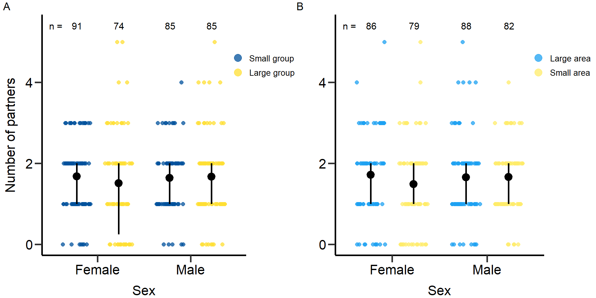 Figure 2: Effects of group size (A) and area treatment (B) on the number of mating partners of female and male focals. Black bars indicate means and standard errors.
Statistical models: Number of mating partners (quasi-Poisson
GLM)
Effect of group size on number of mating partners in
females.
# Statistical models: Number of mating partners (quasi-Poisson GLM)
# Sex: Female
# Treatment: Group size
mod2.1=glm(f_cMS~Gr_size,data=DB_data,family = quasipoisson)
summary(mod2.1)
Call:
glm(formula = f_cMS ~ Gr_size, family = quasipoisson, data = DB_data)
Deviance Residuals:
Min 1Q Median 3Q Max
-1.8343 -0.5695 0.2377 0.3639 2.2154
Coefficients:
Estimate Std. Error t value Pr(>|t|)
(Intercept) 0.52019 0.07049 7.38 9.43e-12 ***
Gr_sizeLG -0.09586 0.10774 -0.89 0.375
---
Signif. codes: 0 '***' 0.001 '**' 0.01 '*' 0.05 '.' 0.1 ' ' 1
(Dispersion parameter for quasipoisson family taken to be 0.7104776)
Null deviance: 133.68 on 154 degrees of freedom
Residual deviance: 133.12 on 153 degrees of freedom
(161 observations deleted due to missingness)
AIC: NA
Number of Fisher Scoring iterations: 5
Effect of group size on number of mating partners in males.
# Sex: Male
# Treatment: Group size
mod2.2=glm(m_cMS~Gr_size,data=DB_data,family = quasipoisson)
summary(mod2.2)
Call:
glm(formula = m_cMS ~ Gr_size, family = quasipoisson, data = DB_data)
Deviance Residuals:
Min 1Q Median 3Q Max
-1.8367 -0.5726 0.2343 0.2708 2.0591
Coefficients:
Estimate Std. Error t value Pr(>|t|)
(Intercept) 0.49532 0.06415 7.722 1.2e-12 ***
Gr_sizeLG 0.02748 0.08875 0.310 0.757
---
Signif. codes: 0 '***' 0.001 '**' 0.01 '*' 0.05 '.' 0.1 ' ' 1
(Dispersion parameter for quasipoisson family taken to be 0.526679)
Null deviance: 97.278 on 160 degrees of freedom
Residual deviance: 97.228 on 159 degrees of freedom
(155 observations deleted due to missingness)
AIC: NA
Number of Fisher Scoring iterations: 5
Effect of area on number of mating partners in females.
# Sex: Female
# Treatment: Area
mod2.3=glm(f_cMS~Area,data=DB_data,family = quasipoisson)
summary(mod2.3)
Call:
glm(formula = f_cMS ~ Area, family = quasipoisson, data = DB_data)
Deviance Residuals:
Min 1Q Median 3Q Max
-1.8526 -0.5933 0.2112 0.3882 2.2449
Coefficients:
Estimate Std. Error t value Pr(>|t|)
(Intercept) 0.54002 0.07078 7.629 2.35e-12 ***
AreaSmall -0.13456 0.10623 -1.267 0.207
---
Signif. codes: 0 '***' 0.001 '**' 0.01 '*' 0.05 '.' 0.1 ' ' 1
(Dispersion parameter for quasipoisson family taken to be 0.6964311)
Null deviance: 133.68 on 154 degrees of freedom
Residual deviance: 132.56 on 153 degrees of freedom
(161 observations deleted due to missingness)
AIC: NA
Number of Fisher Scoring iterations: 5
Effect of area on number of mating partners in males.
# Sex: Male
# Treatment: Area
mod2.4=glm(m_cMS~Area,data=DB_data,family = quasipoisson)
summary(mod2.4)
Call:
glm(formula = m_cMS ~ Area, family = quasipoisson, data = DB_data)
Deviance Residuals:
Min 1Q Median 3Q Max
-1.8305 -0.5497 0.2433 0.2598 2.0898
Coefficients:
Estimate Std. Error t value Pr(>|t|)
(Intercept) 0.50366 0.06170 8.163 9.43e-14 ***
AreaSmall 0.01235 0.08893 0.139 0.89
---
Signif. codes: 0 '***' 0.001 '**' 0.01 '*' 0.05 '.' 0.1 ' ' 1
(Dispersion parameter for quasipoisson family taken to be 0.5291461)
Null deviance: 97.278 on 160 degrees of freedom
Residual deviance: 97.268 on 159 degrees of freedom
(155 observations deleted due to missingness)
AIC: NA
Number of Fisher Scoring iterations: 5Mating duration
Figure: Mating duration in seconds
#Figure: Mating duration in seconds
# Treatment: Group size
p3<-ggplot(DB_data, aes(x=Sex, y=as.numeric(MatingDuration_av),fill=Gr_size, col=Gr_size)) +
geom_point(position=position_jitterdodge(jitter.width=0.6,jitter.height = 0,dodge.width=0.9),shape=19, alpha=0.75, size = 2)+
stat_summary(fun.min = function(z) { quantile(z,0.25) },
fun.max = function(z) { quantile(z,0.75) },
fun = mean,position=position_dodge(.9), size = 0.9,col='black',show.legend = F)+
scale_color_manual(values=c(colorESEB[1],colorESEB[2]),name = "Treatment", labels = c('Small group','Large group'))+
scale_fill_manual(values=c(colorESEB[1],colorESEB[2]),name = "Treatment", labels = c('Small group','Large group'))+
xlab('Sex')+ylab("Mean mating duration")+ggtitle('')+ theme(plot.title = element_text(hjust = 0.5))+
scale_x_discrete(labels = c('Female','Male'),drop=FALSE)+ ylim(0,390)+labs(tag = "A")+
annotate("text",label='n =',x=0.55,y=390,size=4)+
annotate("text",label='91',x=0.78,y=390,size=4)+
annotate("text",label='74',x=1.23,y=390,size=4)+
annotate("text",label='85',x=1.78,y=390,size=4)+
annotate("text",label='85',x=2.23,y=390,size=4)+
theme(panel.border = element_blank(),
plot.margin = margin(0,2.2,0.15,0.2,"cm"),
plot.title = element_text(hjust = 0.5),
panel.background = element_blank(),
legend.key=element_blank(),
panel.grid.major = element_blank(),
panel.grid.minor = element_blank(),
legend.position = c(1.08, 0.8),
plot.tag.position=c(0.01,0.98),
legend.title = element_blank(),
legend.text = element_text(colour="black", size=10),
axis.line.x = element_line(colour = "black", size = 1),
axis.line.y = element_line(colour = "black", size = 1),
axis.text.x = element_text(face="plain", color="black", size=16, angle=0),
axis.text.y = element_text(face="plain", color="black", size=16, angle=0),
axis.title.x = element_text(size=16,face="plain", margin = margin(r=0,10,0,0)),
axis.title.y = element_text(size=16,face="plain", margin = margin(r=10,0,0,0)),
axis.ticks = element_line(size = 1),
axis.ticks.length = unit(.3, "cm"))+
guides(colour = guide_legend(override.aes = list(size=4)))
# Treatment: Area
p3.2<-ggplot(DB_data, aes(x=Sex, y=as.numeric(MatingDuration_av),fill=Area, col=Area)) +
geom_point(position=position_jitterdodge(jitter.width=0.6,jitter.height = 0,dodge.width=0.9),shape=19, alpha=0.75, size = 2)+
stat_summary(fun.min = function(z) { quantile(z,0.25) },
fun.max = function(z) { quantile(z,0.75) },
fun = mean,position=position_dodge(.9), size = 0.9,col='black',show.legend = F)+
scale_color_manual(values=c(colorESEB2[1],colorESEB2[2]),name = "Treatment", labels = c('Large area','Small area'))+
scale_fill_manual(values=c(colorESEB2[1],colorESEB2[2]),name = "Treatment", labels = c('Large area','Small area'))+
xlab('Sex')+ylab("")+ggtitle('')+ theme(plot.title = element_text(hjust = 0.5))+
scale_x_discrete(labels = c('Female','Male'),drop=FALSE)+ ylim(0,390)+labs(tag = "B")+
annotate("text",label='n =',x=0.55,y=390,size=4)+
annotate("text",label='86',x=0.78,y=390,size=4)+
annotate("text",label='79',x=1.23,y=390,size=4)+
annotate("text",label='88',x=1.78,y=390,size=4)+
annotate("text",label='82',x=2.23,y=390,size=4)+
theme(panel.border = element_blank(),
plot.margin = margin(0,2.2,0.15,0,"cm"),
plot.title = element_text(hjust = 0.5),
panel.background = element_blank(),
legend.key=element_blank(),
panel.grid.major = element_blank(),
panel.grid.minor = element_blank(),
legend.position = c(1.08, 0.8),
plot.tag.position=c(0.01,0.98),
legend.title = element_blank(),
legend.text = element_text(colour="black", size=10),
axis.line.x = element_line(colour = "black", size = 1),
axis.line.y = element_line(colour = "black", size = 1),
axis.text.x = element_text(face="plain", color="black", size=16, angle=0),
axis.text.y = element_text(face="plain", color="black", size=16, angle=0),
axis.title.x = element_text(size=16,face="plain", margin = margin(r=0,10,0,0)),
axis.title.y = element_text(size=16,face="plain", margin = margin(r=10,0,0,0)),
axis.ticks = element_line(size = 1),
axis.ticks.length = unit(.3, "cm"))+
guides(colour = guide_legend(override.aes = list(size=4)))
plot3<-grid.arrange(grobs = list(p3,p3.2), nrow = 1,ncol=2, widths=c(2.3, 2.3))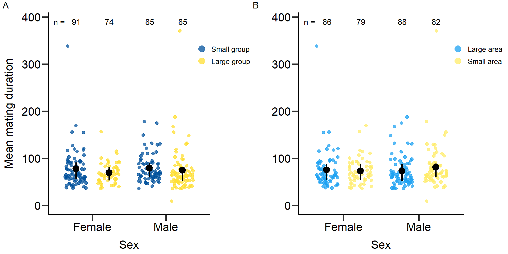 Figure 3: Effects of group size (A) and area treatment (B) on the Mating duration (in seconds) of female and male focals. Black bars indicate means and standard errors.
Statistical models: Mating duration (Gaussian GLM)
Effect
of group size on mating duration in females.
# Statistical models: Mating duration (Gaussian GLM)
# Sex: Female
# Treatment: Group size
mod3.1=glm(f_MatingDuration_av~Gr_size,data=DB_data,family = gaussian)
summary(mod3.1)
Call:
glm(formula = f_MatingDuration_av ~ Gr_size, family = gaussian,
data = DB_data)
Deviance Residuals:
Min 1Q Median 3Q Max
-41.63 -20.35 -6.36 13.62 260.37
Coefficients:
Estimate Std. Error t value Pr(>|t|)
(Intercept) 77.626 3.963 19.589 <2e-16 ***
Gr_sizeLG -8.203 6.266 -1.309 0.193
---
Signif. codes: 0 '***' 0.001 '**' 0.01 '*' 0.05 '.' 0.1 ' ' 1
(Dispersion parameter for gaussian family taken to be 1224.805)
Null deviance: 158874 on 129 degrees of freedom
Residual deviance: 156775 on 128 degrees of freedom
(186 observations deleted due to missingness)
AIC: 1297.3
Number of Fisher Scoring iterations: 2
Effect of group size on mating duration in males.
# Sex: Male
# Treatment: Group size
mod3.2=glm(m_MatingDuration_av~Gr_size,data=DB_data,family = gaussian)
summary(mod3.2)
Call:
glm(formula = m_MatingDuration_av ~ Gr_size, family = gaussian,
data = DB_data)
Deviance Residuals:
Min 1Q Median 3Q Max
-65.622 -21.472 -10.327 9.798 296.048
Coefficients:
Estimate Std. Error t value Pr(>|t|)
(Intercept) 79.202 4.594 17.240 <2e-16 ***
Gr_sizeLG -4.250 6.453 -0.659 0.511
---
Signif. codes: 0 '***' 0.001 '**' 0.01 '*' 0.05 '.' 0.1 ' ' 1
(Dispersion parameter for gaussian family taken to be 1540.677)
Null deviance: 225607 on 147 degrees of freedom
Residual deviance: 224939 on 146 degrees of freedom
(168 observations deleted due to missingness)
AIC: 1510.3
Number of Fisher Scoring iterations: 2
Effect of area on mating duration in females.
# Sex: Female
# Treatment: Area
mod3.3=glm(f_MatingDuration_av~Area,data=DB_data,family = gaussian)
summary(mod3.3)
Call:
glm(formula = f_MatingDuration_av ~ Area, family = gaussian,
data = DB_data)
Deviance Residuals:
Min 1Q Median 3Q Max
-38.502 -19.592 -7.618 14.121 262.498
Coefficients:
Estimate Std. Error t value Pr(>|t|)
(Intercept) 75.502 4.178 18.070 <2e-16 ***
AreaSmall -2.549 6.202 -0.411 0.682
---
Signif. codes: 0 '***' 0.001 '**' 0.01 '*' 0.05 '.' 0.1 ' ' 1
(Dispersion parameter for gaussian family taken to be 1239.57)
Null deviance: 158874 on 129 degrees of freedom
Residual deviance: 158665 on 128 degrees of freedom
(186 observations deleted due to missingness)
AIC: 1298.8
Number of Fisher Scoring iterations: 2
Effect of area on mating duration in males.
# Sex: Male
# Treatment: Area
mod3.4=glm(m_MatingDuration_av~Area,data=DB_data,family = gaussian)
summary(mod3.4)
Call:
glm(formula = m_MatingDuration_av ~ Area, family = gaussian,
data = DB_data)
Deviance Residuals:
Min 1Q Median 3Q Max
-71.872 -21.242 -10.322 8.445 289.798
Coefficients:
Estimate Std. Error t value Pr(>|t|)
(Intercept) 73.112 4.485 16.302 <2e-16 ***
AreaSmall 8.090 6.430 1.258 0.21
---
Signif. codes: 0 '***' 0.001 '**' 0.01 '*' 0.05 '.' 0.1 ' ' 1
(Dispersion parameter for gaussian family taken to be 1528.679)
Null deviance: 225607 on 147 degrees of freedom
Residual deviance: 223187 on 146 degrees of freedom
(168 observations deleted due to missingness)
AIC: 1509.2
Number of Fisher Scoring iterations: 2Mating encounters
Figure: Mating encounters (mating number + mating attempts)
# Figure: Mating encounters (mating number + mating attempts)
# Treatment: Group size
p4<-ggplot(DB_data, aes(x=Sex, y=as.numeric(Total_Encounters),fill=Gr_size, col=Gr_size)) +
geom_point(position=position_jitterdodge(jitter.width=0.6,jitter.height = 0,dodge.width=0.9),shape=19, alpha=0.75, size = 2)+
stat_summary(fun.min = function(z) { quantile(z,0.25) },
fun.max = function(z) { quantile(z,0.75) },
fun = mean,position=position_dodge(.9), size = 0.9,col='black',show.legend = F)+
scale_color_manual(values=c(colorESEB[1],colorESEB[2]),name = "Treatment", labels = c('Small group','Large group'))+
scale_fill_manual(values=c(colorESEB[1],colorESEB[2]),name = "Treatment", labels = c('Small group','Large group'))+
xlab('Sex')+ylab("Mating encounters")+ggtitle('')+ theme(plot.title = element_text(hjust = 0.5))+
scale_x_discrete(labels = c('Female','Male'),drop=FALSE)+ ylim(0,33)+labs(tag = "A")+
annotate("text",label='n =',x=0.55,y=33,size=4)+
annotate("text",label='91',x=0.78,y=33,size=4)+
annotate("text",label='74',x=1.23,y=33,size=4)+
annotate("text",label='85',x=1.78,y=33,size=4)+
annotate("text",label='85',x=2.23,y=33,size=4)+
theme(panel.border = element_blank(),
plot.margin = margin(0,2.2,0.15,0.2,"cm"),
plot.title = element_text(hjust = 0.5),
panel.background = element_blank(),
legend.key=element_blank(),
panel.grid.major = element_blank(),
panel.grid.minor = element_blank(),
legend.position = c(1.08, 0.8),
plot.tag.position=c(0.01,0.98),
legend.title = element_blank(),
legend.text = element_text(colour="black", size=10),
axis.line.x = element_line(colour = "black", size = 1),
axis.line.y = element_line(colour = "black", size = 1),
axis.text.x = element_text(face="plain", color="black", size=16, angle=0),
axis.text.y = element_text(face="plain", color="black", size=16, angle=0),
axis.title.x = element_text(size=16,face="plain", margin = margin(r=0,10,0,0)),
axis.title.y = element_text(size=16,face="plain", margin = margin(r=10,0,0,0)),
axis.ticks = element_line(size = 1),
axis.ticks.length = unit(.3, "cm"))+
guides(colour = guide_legend(override.aes = list(size=4)))
# Treatment: Area
p4.2<-ggplot(DB_data, aes(x=Sex, y=as.numeric(Total_Encounters),fill=Area, col=Area)) +
geom_point(position=position_jitterdodge(jitter.width=0.6,jitter.height = 0,dodge.width=0.9),shape=19, alpha=0.75, size = 2)+
stat_summary(fun.min = function(z) { quantile(z,0.25) },
fun.max = function(z) { quantile(z,0.75) },
fun = mean,position=position_dodge(.9), size = 0.9,col='black',show.legend = F)+
scale_color_manual(values=c(colorESEB2[1],colorESEB2[2]),name = "Treatment", labels = c('Large area','Small area'))+
scale_fill_manual(values=c(colorESEB2[1],colorESEB2[2]),name = "Treatment", labels = c('Large area','Small area'))+
xlab('Sex')+ylab("")+ggtitle('')+ theme(plot.title = element_text(hjust = 0.5))+
scale_x_discrete(labels = c('Female','Male'),drop=FALSE)+ ylim(0,33)+labs(tag = "B")+
annotate("text",label='n =',x=0.55,y=33,size=4)+
annotate("text",label='86',x=0.78,y=33,size=4)+
annotate("text",label='79',x=1.23,y=33,size=4)+
annotate("text",label='88',x=1.78,y=33,size=4)+
annotate("text",label='82',x=2.23,y=33,size=4)+
theme(panel.border = element_blank(),
plot.margin = margin(0,2.2,0.15,0,"cm"),
plot.title = element_text(hjust = 0.5),
panel.background = element_blank(),
legend.key=element_blank(),
panel.grid.major = element_blank(),
panel.grid.minor = element_blank(),
legend.position = c(1.08, 0.8),
plot.tag.position=c(0.01,0.98),
legend.title = element_blank(),
legend.text = element_text(colour="black", size=10),
axis.line.x = element_line(colour = "black", size = 1),
axis.line.y = element_line(colour = "black", size = 1),
axis.text.x = element_text(face="plain", color="black", size=16, angle=0),
axis.text.y = element_text(face="plain", color="black", size=16, angle=0),
axis.title.x = element_text(size=16,face="plain", margin = margin(r=0,10,0,0)),
axis.title.y = element_text(size=16,face="plain", margin = margin(r=10,0,0,0)),
axis.ticks = element_line(size = 1),
axis.ticks.length = unit(.3, "cm"))+
guides(colour = guide_legend(override.aes = list(size=4)))
plot4<-grid.arrange(grobs = list(p4,p4.2), nrow = 1,ncol=2, widths=c(2.3, 2.3))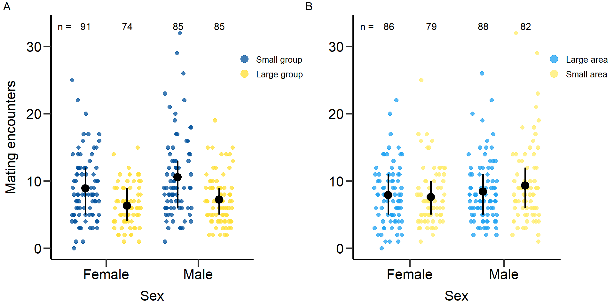 Figure 4: Effects of group size (A) and area treatment (B) on the number of mating encounters (mating number + mating attempts) of female and male focals. Black bars indicate means and standard errors.
Statistical models: Mating encounters (Gaussian GLM)
Effect of group size on mating encounters in females.
# Statistical models: Mating encounters (Gaussian GLM)
# Sex: Female
# Treatment: Group size
mod4.1=glm(f_Total_Encounters~Gr_size,data=DB_data,family = gaussian)
summary(mod4.1)
Call:
glm(formula = f_Total_Encounters ~ Gr_size, family = gaussian,
data = DB_data)
Deviance Residuals:
Min 1Q Median 3Q Max
-8.9059 -2.9059 -0.9059 2.6522 16.0941
Coefficients:
Estimate Std. Error t value Pr(>|t|)
(Intercept) 8.9059 0.4518 19.71 < 2e-16 ***
Gr_sizeLG -2.5581 0.6749 -3.79 0.000217 ***
---
Signif. codes: 0 '***' 0.001 '**' 0.01 '*' 0.05 '.' 0.1 ' ' 1
(Dispersion parameter for gaussian family taken to be 17.34802)
Null deviance: 2886.1 on 153 degrees of freedom
Residual deviance: 2636.9 on 152 degrees of freedom
(162 observations deleted due to missingness)
AIC: 880.46
Number of Fisher Scoring iterations: 2
Effect of group size on mating encounters in males.
# Sex: Male
# Treatment: Group size
mod4.2=glm(m_Total_Encounters~Gr_size,data=DB_data,family = gaussian)
summary(mod4.2)
Call:
glm(formula = m_Total_Encounters ~ Gr_size, family = gaussian,
data = DB_data)
Deviance Residuals:
Min 1Q Median 3Q Max
-9.577 -3.253 -1.253 1.747 21.423
Coefficients:
Estimate Std. Error t value Pr(>|t|)
(Intercept) 10.5769 0.5630 18.787 < 2e-16 ***
Gr_sizeLG -3.3239 0.7841 -4.239 3.79e-05 ***
---
Signif. codes: 0 '***' 0.001 '**' 0.01 '*' 0.05 '.' 0.1 ' ' 1
(Dispersion parameter for gaussian family taken to be 24.72154)
Null deviance: 4375.0 on 160 degrees of freedom
Residual deviance: 3930.7 on 159 degrees of freedom
(155 observations deleted due to missingness)
AIC: 977.32
Number of Fisher Scoring iterations: 2
Effect of area on mating encounters in females.
# Sex: Female
# Treatment: Area
mod4.3=glm(f_Total_Encounters~Area,data=DB_data,family = gaussian)
summary(mod4.3)
Call:
glm(formula = f_Total_Encounters ~ Area, family = gaussian, data = DB_data)
Deviance Residuals:
Min 1Q Median 3Q Max
-7.9012 -2.9012 -0.6027 2.3973 17.3973
Coefficients:
Estimate Std. Error t value Pr(>|t|)
(Intercept) 7.9012 0.4839 16.329 <2e-16 ***
AreaSmall -0.2985 0.7028 -0.425 0.672
---
Signif. codes: 0 '***' 0.001 '**' 0.01 '*' 0.05 '.' 0.1 ' ' 1
(Dispersion parameter for gaussian family taken to be 18.96506)
Null deviance: 2886.1 on 153 degrees of freedom
Residual deviance: 2882.7 on 152 degrees of freedom
(162 observations deleted due to missingness)
AIC: 894.18
Number of Fisher Scoring iterations: 2
Effect of area on mating encounters in males.
# Sex: Male
# Treatment: Area
mod4.4=glm(m_Total_Encounters~Area,data=DB_data,family = gaussian)
summary(mod4.4)
Call:
glm(formula = m_Total_Encounters ~ Area, family = gaussian, data = DB_data)
Deviance Residuals:
Min 1Q Median 3Q Max
-8.351 -3.417 -1.351 2.583 22.649
Coefficients:
Estimate Std. Error t value Pr(>|t|)
(Intercept) 8.4167 0.5700 14.765 <2e-16 ***
AreaSmall 0.9340 0.8243 1.133 0.259
---
Signif. codes: 0 '***' 0.001 '**' 0.01 '*' 0.05 '.' 0.1 ' ' 1
(Dispersion parameter for gaussian family taken to be 27.29528)
Null deviance: 4375.0 on 160 degrees of freedom
Residual deviance: 4339.9 on 159 degrees of freedom
(155 observations deleted due to missingness)
AIC: 993.27
Number of Fisher Scoring iterations: 2Proportion of successful matings
Figure: Proportion of successful matings (mating number/mating number + mating attempts)
# Figure: Proportion of successful matings (mating number/mating number + mating attempts)
# Treatment: Group size
p5<-ggplot(DB_data, aes(x=Sex, y=as.numeric(Prop_MS),fill=Gr_size, col=Gr_size)) +
geom_point(position=position_jitterdodge(jitter.width=0.6,jitter.height = 0,dodge.width=0.9),shape=19, alpha=0.75, size = 2)+
stat_summary(fun.min = function(z) { quantile(z,0.25) },
fun.max = function(z) { quantile(z,0.75) },
fun = mean,position=position_dodge(.9), size = 0.9,col='black',show.legend = F)+
scale_color_manual(values=c(colorESEB[1],colorESEB[2]),name = "Treatment", labels = c('Small group','Large group'))+
scale_fill_manual(values=c(colorESEB[1],colorESEB[2]),name = "Treatment", labels = c('Small group','Large group'))+
xlab('Sex')+ylab("Proportion successful matings")+ggtitle('')+ theme(plot.title = element_text(hjust = 0.5))+
scale_x_discrete(labels = c('Female','Male'),drop=FALSE)+ ylim(0,1.1)+labs(tag = "A")+
annotate("text",label='n =',x=0.55,y=1.1,size=4)+
annotate("text",label='91',x=0.78,y=1.1,size=4)+
annotate("text",label='74',x=1.23,y=1.1,size=4)+
annotate("text",label='85',x=1.78,y=1.1,size=4)+
annotate("text",label='85',x=2.23,y=1.1,size=4)+
theme(panel.border = element_blank(),
plot.margin = margin(0.15,2.2,0,0.2,"cm"),
plot.title = element_text(hjust = 0.5),
panel.background = element_blank(),
legend.key=element_blank(),
panel.grid.major = element_blank(),
panel.grid.minor = element_blank(),
legend.position = c(1.08, 0.8),
plot.tag.position=c(0.01,0.98),
legend.title = element_blank(),
legend.text = element_text(colour="black", size=10),
axis.line.x = element_line(colour = "black", size = 1),
axis.line.y = element_line(colour = "black", size = 1),
axis.text.x = element_text(face="plain", color="black", size=16, angle=0),
axis.text.y = element_text(face="plain", color="black", size=16, angle=0),
axis.title.x = element_text(size=16,face="plain", margin = margin(r=0,10,0,0)),
axis.title.y = element_text(size=16,face="plain", margin = margin(r=10,0,0,0)),
axis.ticks = element_line(size = 1),
axis.ticks.length = unit(.3, "cm"))+
guides(colour = guide_legend(override.aes = list(size=4)))
# Treatment: Area
p5.2<-ggplot(DB_data, aes(x=Sex, y=as.numeric(Prop_MS),fill=Area, col=Area)) +
geom_point(position=position_jitterdodge(jitter.width=0.6,jitter.height = 0,dodge.width=0.9),shape=19, alpha=0.75, size = 2)+
stat_summary(fun.min = function(z) { quantile(z,0.25) },
fun.max = function(z) { quantile(z,0.75) },
fun = mean,position=position_dodge(.9), size = 0.9,col='black',show.legend = F)+
scale_color_manual(values=c(colorESEB2[1],colorESEB2[2]),name = "Treatment", labels = c('Large area','Small area'))+
scale_fill_manual(values=c(colorESEB2[1],colorESEB2[2]),name = "Treatment", labels = c('Large area','Small area'))+
xlab('Sex')+ylab("")+ggtitle('')+ theme(plot.title = element_text(hjust = 0.5))+
scale_x_discrete(labels = c('Female','Male'),drop=FALSE)+ ylim(0,1.1)+labs(tag = "B")+
annotate("text",label='n =',x=0.55,y=1.1,size=4)+
annotate("text",label='86',x=0.78,y=1.1,size=4)+
annotate("text",label='79',x=1.23,y=1.1,size=4)+
annotate("text",label='88',x=1.78,y=1.1,size=4)+
annotate("text",label='82',x=2.23,y=1.1,size=4)+
theme(panel.border = element_blank(),
plot.margin = margin(0.15,2.2,0,0,"cm"),
plot.title = element_text(hjust = 0.5),
panel.background = element_blank(),
legend.key=element_blank(),
panel.grid.major = element_blank(),
panel.grid.minor = element_blank(),
legend.position = c(1.08, 0.8),
plot.tag.position=c(0.01,0.98),
legend.title = element_blank(),
legend.text = element_text(colour="black", size=10),
axis.line.x = element_line(colour = "black", size = 1),
axis.line.y = element_line(colour = "black", size = 1),
axis.text.x = element_text(face="plain", color="black", size=16, angle=0),
axis.text.y = element_text(face="plain", color="black", size=16, angle=0),
axis.title.x = element_text(size=16,face="plain", margin = margin(r=0,10,0,0)),
axis.title.y = element_text(size=16,face="plain", margin = margin(r=10,0,0,0)),
axis.ticks = element_line(size = 1),
axis.ticks.length = unit(.3, "cm"))+
guides(colour = guide_legend(override.aes = list(size=4)))
plot5<-grid.arrange(grobs = list(p5,p5.2), nrow = 1,ncol=2, widths=c(2.3, 2.3))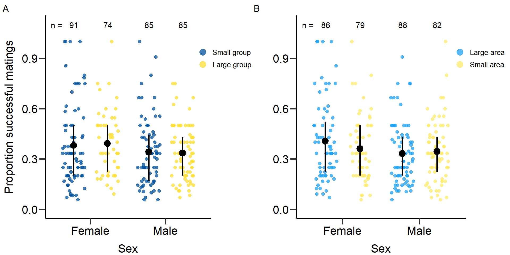 Figure 5: Effects of group size (A) and area treatment (B) on the proportion of successful matings of female and male focals. Black bars indicate means and standard errors.
Statistical models: Proportion of successful matings
(quasi-binomial GLM)
Effect of group size on proportion of
successful matings in females.
# Statistical models: Proportion of successful matings (quasi-binomial GLM)
# Sex: Female
# Treatment: Group size
mod5.1=glm(cbind(f_TotMatings,f_Attempts_number)~Gr_size,data=DB_data,family = quasibinomial)
summary(mod5.1)
Call:
glm(formula = cbind(f_TotMatings, f_Attempts_number) ~ Gr_size,
family = quasibinomial, data = DB_data)
Deviance Residuals:
Min 1Q Median 3Q Max
-2.7270 -1.0918 -0.0776 0.8393 3.4972
Coefficients:
Estimate Std. Error t value Pr(>|t|)
(Intercept) -0.70705 0.09781 -7.229 2.26e-11 ***
Gr_sizeLG -0.14460 0.16436 -0.880 0.38
---
Signif. codes: 0 '***' 0.001 '**' 0.01 '*' 0.05 '.' 0.1 ' ' 1
(Dispersion parameter for quasibinomial family taken to be 1.601925)
Null deviance: 275.29 on 152 degrees of freedom
Residual deviance: 274.05 on 151 degrees of freedom
(162 observations deleted due to missingness)
AIC: NA
Number of Fisher Scoring iterations: 4
Effect of group size on proportion of successful matings in
males.
# Sex: Male
# Treatment: Group size
mod5.2=glm(cbind(m_TotMatings,m_Attempts_number)~Gr_size,data=DB_data,family = quasibinomial)
summary(mod5.2)
Call:
glm(formula = cbind(m_TotMatings, m_Attempts_number) ~ Gr_size,
family = quasibinomial, data = DB_data)
Deviance Residuals:
Min 1Q Median 3Q Max
-3.6620 -0.8327 0.0646 0.7745 4.3686
Coefficients:
Estimate Std. Error t value Pr(>|t|)
(Intercept) -0.92054 0.09330 -9.866 <2e-16 ***
Gr_sizeLG 0.02854 0.14315 0.199 0.842
---
Signif. codes: 0 '***' 0.001 '**' 0.01 '*' 0.05 '.' 0.1 ' ' 1
(Dispersion parameter for quasibinomial family taken to be 1.463058)
Null deviance: 254.50 on 160 degrees of freedom
Residual deviance: 254.44 on 159 degrees of freedom
(155 observations deleted due to missingness)
AIC: NA
Number of Fisher Scoring iterations: 4
Effect of area on proportion of successful matings in
females.
# Sex: Female
# Treatment: Area
mod5.3=glm(cbind(f_TotMatings,f_Attempts_number)~Area,data=DB_data,family = quasibinomial)
summary(mod5.3)
Call:
glm(formula = cbind(f_TotMatings, f_Attempts_number) ~ Area,
family = quasibinomial, data = DB_data)
Deviance Residuals:
Min 1Q Median 3Q Max
-2.9107 -1.0039 -0.0619 0.8640 3.3743
Coefficients:
Estimate Std. Error t value Pr(>|t|)
(Intercept) -0.6397 0.1045 -6.120 7.69e-09 ***
AreaSmall -0.2640 0.1575 -1.676 0.0958 .
---
Signif. codes: 0 '***' 0.001 '**' 0.01 '*' 0.05 '.' 0.1 ' ' 1
(Dispersion parameter for quasibinomial family taken to be 1.580745)
Null deviance: 275.29 on 152 degrees of freedom
Residual deviance: 270.83 on 151 degrees of freedom
(162 observations deleted due to missingness)
AIC: NA
Number of Fisher Scoring iterations: 4
Effect of area on proportion of successful matings in males.
# Sex: Male
# Treatment: Area
mod5.4=glm(cbind(m_TotMatings,m_Attempts_number)~Area,data=DB_data,family = quasibinomial)
summary(mod5.4)
Call:
glm(formula = cbind(m_TotMatings, m_Attempts_number) ~ Area,
family = quasibinomial, data = DB_data)
Deviance Residuals:
Min 1Q Median 3Q Max
-3.6902 -0.8210 0.0797 0.7876 4.3402
Coefficients:
Estimate Std. Error t value Pr(>|t|)
(Intercept) -0.90247 0.10036 -8.992 6.84e-16 ***
AreaSmall -0.01188 0.14146 -0.084 0.933
---
Signif. codes: 0 '***' 0.001 '**' 0.01 '*' 0.05 '.' 0.1 ' ' 1
(Dispersion parameter for quasibinomial family taken to be 1.461793)
Null deviance: 254.50 on 160 degrees of freedom
Residual deviance: 254.49 on 159 degrees of freedom
(155 observations deleted due to missingness)
AIC: NA
Number of Fisher Scoring iterations: 4Reproductive success
Secondly, we tested the effect that the treatments (group size and
area) had on the reproductive success of focal beetles.
Figure:
Reproductive success
# Figure: Reproductive success
# Treatment: Group size
p6<-ggplot(DB_data_clean, aes(x=Sex, y=as.numeric(Total_N_MTP1),fill=Gr_size, col=Gr_size)) +
geom_point(position=position_jitterdodge(jitter.width=0.6,jitter.height = 0,dodge.width=0.9),shape=19, alpha=0.75, size = 2)+
stat_summary(fun.min = function(z) { quantile(z,0.25) },
fun.max = function(z) { quantile(z,0.75) },
fun = mean,position=position_dodge(.9), size = 0.9,col='black',show.legend = F)+
scale_color_manual(values=c(colorESEB[1],colorESEB[2]),name = "Treatment", labels = c('Small group','Large group'))+
scale_fill_manual(values=c(colorESEB[1],colorESEB[2]),name = "Treatment", labels = c('Small group','Large group'))+
xlab('Sex')+ylab("Number of offspring")+ggtitle('')+ theme(plot.title = element_text(hjust = 0.5))+
scale_x_discrete(labels = c('Female','Male'),drop=FALSE)+ ylim(0,320)+labs(tag = "A")+
annotate("text",label='n =',x=0.55,y=320,size=4)+
annotate("text",label='59',x=0.78,y=320,size=4)+
annotate("text",label='48',x=1.23,y=320,size=4)+
annotate("text",label='51',x=1.78,y=320,size=4)+
annotate("text",label='59',x=2.23,y=320,size=4)+
theme(panel.border = element_blank(),
plot.margin = margin(0,2.2,0,0.2,"cm"),
plot.title = element_text(hjust = 0.5),
panel.background = element_blank(),
legend.key=element_blank(),
panel.grid.major = element_blank(),
panel.grid.minor = element_blank(),
legend.position = c(1.1, 0.8),
plot.tag.position=c(0.01,0.98),
legend.title = element_blank(),
legend.text = element_text(colour="black", size=10),
axis.line.x = element_line(colour = "black", size = 1),
axis.line.y = element_line(colour = "black", size = 1),
axis.text.x = element_text(face="plain", color="black", size=16, angle=0),
axis.text.y = element_text(face="plain", color="black", size=16, angle=0),
axis.title.x = element_text(size=16,face="plain", margin = margin(r=0,10,0,0)),
axis.title.y = element_text(size=16,face="plain", margin = margin(r=10,0,0,0)),
axis.ticks = element_line(size = 1),
axis.ticks.length = unit(.3, "cm"))+
guides(colour = guide_legend(override.aes = list(size=4)))
# Treatment: Area
p6.2<-ggplot(DB_data_clean, aes(x=Sex, y=as.numeric(Total_N_MTP1),fill=Area, col=Area)) +
geom_point(position=position_jitterdodge(jitter.width=0.6,jitter.height = 0,dodge.width=0.9),shape=19, alpha=0.75, size = 2)+
stat_summary(fun.min = function(z) { quantile(z,0.25) },
fun.max = function(z) { quantile(z,0.75) },
fun = mean,position=position_dodge(.9), size = 0.9,col='black',show.legend = F)+
scale_color_manual(values=c(colorESEB2[1],colorESEB2[2]),name = "Treatment", labels = c('Large area','Small area'))+
scale_fill_manual(values=c(colorESEB2[1],colorESEB2[2]),name = "Treatment", labels = c('Large area','Small area'))+
xlab('Sex')+ylab("")+ggtitle('')+ theme(plot.title = element_text(hjust = 0.5))+
scale_x_discrete(labels = c('Female','Male'),drop=FALSE)+ ylim(0,320)+labs(tag = "B")+
annotate("text",label='n =',x=0.55,y=320,size=4)+
annotate("text",label='56',x=0.78,y=320,size=4)+
annotate("text",label='51',x=1.23,y=320,size=4)+
annotate("text",label='57',x=1.78,y=320,size=4)+
annotate("text",label='53',x=2.23,y=320,size=4)+
theme(panel.border = element_blank(),
plot.margin = margin(0,2.2,0,0,"cm"),
plot.title = element_text(hjust = 0.5),
panel.background = element_blank(),
legend.key=element_blank(),
panel.grid.major = element_blank(),
panel.grid.minor = element_blank(),
legend.position = c(1.1, 0.8),
plot.tag.position=c(0.01,0.98),
legend.title = element_blank(),
legend.text = element_text(colour="black", size=10),
axis.line.x = element_line(colour = "black", size = 1),
axis.line.y = element_line(colour = "black", size = 1),
axis.text.x = element_text(face="plain", color="black", size=16, angle=0),
axis.text.y = element_text(face="plain", color="black", size=16, angle=0),
axis.title.x = element_text(size=16,face="plain", margin = margin(r=0,10,0,0)),
axis.title.y = element_text(size=16,face="plain", margin = margin(r=10,0,0,0)),
axis.ticks = element_line(size = 1),
axis.ticks.length = unit(.3, "cm"))+guides(colour = guide_legend(override.aes = list(size=4)))
grid.arrange(grobs = list(p6,p6.2), nrow = 1,ncol=2, widths=c(2.3, 2.3))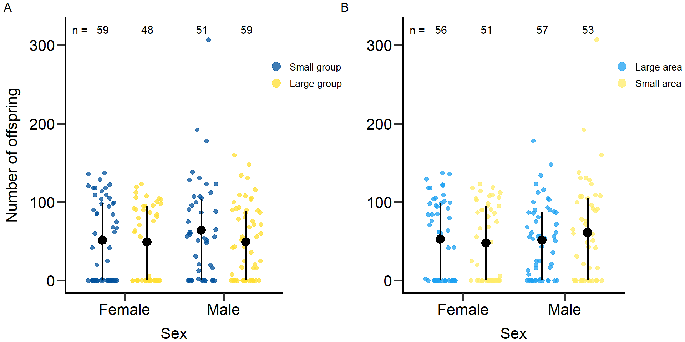 Figure 6: Effects of group size (A) and area treatment (B) on the reproductive success of female and male focals. Black bars indicate means and standard errors.
Statistical models: Reproductive success (quasi-Poisson
GLM)
Effect of group size on reproductive success in females.
# Statistical models: Reproductive success (quasi-Poisson GLM)
# Sex: Female
# Treatment: Group size
mod6.1=glm(f_RS~Gr_size,data=DB_data_clean,family = quasipoisson)
summary(mod6.1)
Call:
glm(formula = f_RS ~ Gr_size, family = quasipoisson, data = DB_data_clean)
Deviance Residuals:
Min 1Q Median 3Q Max
-10.1580 -9.8928 0.9873 5.8238 9.8374
Coefficients:
Estimate Std. Error t value Pr(>|t|)
(Intercept) 3.94338 0.13188 29.902 <2e-16 ***
Gr_sizeLG -0.05292 0.19848 -0.267 0.79
---
Signif. codes: 0 '***' 0.001 '**' 0.01 '*' 0.05 '.' 0.1 ' ' 1
(Dispersion parameter for quasipoisson family taken to be 48.45676)
Null deviance: 6268.7 on 98 degrees of freedom
Residual deviance: 6265.2 on 97 degrees of freedom
(104 observations deleted due to missingness)
AIC: NA
Number of Fisher Scoring iterations: 5
Effect of group size on reproductive success in males.
# Sex: Male
# Treatment: Group size
mod6.2=glm(m_RS~Gr_size,data=DB_data_clean,family = quasipoisson)
summary(mod6.2)
Call:
glm(formula = m_RS ~ Gr_size, family = quasipoisson, data = DB_data_clean)
Deviance Residuals:
Min 1Q Median 3Q Max
-11.3310 -9.9291 -0.9812 4.8487 21.8002
Coefficients:
Estimate Std. Error t value Pr(>|t|)
(Intercept) 4.1619 0.1340 31.051 <2e-16 ***
Gr_sizeLG -0.2642 0.1911 -1.382 0.17
---
Signif. codes: 0 '***' 0.001 '**' 0.01 '*' 0.05 '.' 0.1 ' ' 1
(Dispersion parameter for quasipoisson family taken to be 53.05143)
Null deviance: 6253.5 on 103 degrees of freedom
Residual deviance: 6152.3 on 102 degrees of freedom
(99 observations deleted due to missingness)
AIC: NA
Number of Fisher Scoring iterations: 5
Effect of area on reproductive success in females.
# Sex: Female
# Treatment: Area
mod6.3=glm(f_RS~Area,data=DB_data_clean,family = quasipoisson)
summary(mod6.3)
Call:
glm(formula = f_RS ~ Area, family = quasipoisson, data = DB_data_clean)
Deviance Residuals:
Min 1Q Median 3Q Max
-10.2728 -9.7831 0.9745 5.6124 9.6417
Coefficients:
Estimate Std. Error t value Pr(>|t|)
(Intercept) 3.96584 0.13417 29.557 <2e-16 ***
AreaSmall -0.09768 0.19772 -0.494 0.622
---
Signif. codes: 0 '***' 0.001 '**' 0.01 '*' 0.05 '.' 0.1 ' ' 1
(Dispersion parameter for quasipoisson family taken to be 48.44755)
Null deviance: 6268.7 on 98 degrees of freedom
Residual deviance: 6256.8 on 97 degrees of freedom
(104 observations deleted due to missingness)
AIC: NA
Number of Fisher Scoring iterations: 5
Effect of area on reproductive success in males.
# Sex: Male
# Treatment: Area
mod6.4=glm(m_RS~Area,data=DB_data_clean,family = quasipoisson)
summary(mod6.4)
Call:
glm(formula = m_RS ~ Area, family = quasipoisson, data = DB_data_clean)
Deviance Residuals:
Min 1Q Median 3Q Max
-11.0546 -10.1229 -0.0872 4.5784 22.3469
Coefficients:
Estimate Std. Error t value Pr(>|t|)
(Intercept) 3.9364 0.1381 28.509 <2e-16 ***
AreaSmall 0.1761 0.1924 0.915 0.362
---
Signif. codes: 0 '***' 0.001 '**' 0.01 '*' 0.05 '.' 0.1 ' ' 1
(Dispersion parameter for quasipoisson family taken to be 53.72577)
Null deviance: 6253.5 on 103 degrees of freedom
Residual deviance: 6208.5 on 102 degrees of freedom
(99 observations deleted due to missingness)
AIC: NA
Number of Fisher Scoring iterations: 5Metrics of sexual selection
In this part of our analysis we estimated standardized metrics of
(sexual) selection.
Metrics: - Opportunity for selection
-
Opportunity for sexual selection
- Bateman gradient
- Jones
index
We used bootstrapping (10.000 bootstrap replicates) to
obtain 95% confidence intervals and permutation tests (10.000
permutations) to statistically compare treatments and sexes.
# Opportunity for selection
#Area
DB_data_clean_Large_area_Male_rel_propRS <-as.data.table(DB_data_clean_Large_area$rel_m_RS)
c <- function(d, i){
d2 <- d[i,]
return(var(d2[,1], na.rm=TRUE))
}
I_Large_area_Male_bootvar <- boot(DB_data_clean_Large_area_Male_rel_propRS, c, R=10000)
DB_data_clean_Large_area_Female_rel_propRS <-as.data.table(DB_data_clean_Large_area$rel_f_RS)
I_Large_area_Female_bootvar <- boot(DB_data_clean_Large_area_Female_rel_propRS, c, R=10000)
DB_data_clean_Small_area_Male_rel_propRS <-as.data.table(DB_data_clean_Small_area$rel_m_RS)
I_Small_area_Male_bootvar <- boot(DB_data_clean_Small_area_Male_rel_propRS, c, R=10000)
DB_data_clean_Small_area_Female_rel_propRS <-as.data.table(DB_data_clean_Small_area$rel_f_RS)
I_Small_area_Female_bootvar <- boot(DB_data_clean_Small_area_Female_rel_propRS, c, R=10000)
#Population size
DB_data_clean_Large_pop_Male_rel_propRS <-as.data.table(DB_data_clean_Large_pop$rel_m_RS)
I_Large_pop_Male_bootvar <- boot(DB_data_clean_Large_pop_Male_rel_propRS, c, R=10000)
DB_data_clean_Large_pop_Female_rel_propRS <-as.data.table(DB_data_clean_Large_pop$rel_f_RS)
I_Large_pop_Female_bootvar <- boot(DB_data_clean_Large_pop_Female_rel_propRS, c, R=10000)
DB_data_clean_Small_pop_Male_rel_propRS <-as.data.table(DB_data_clean_Small_pop$rel_m_RS)
I_Small_pop_Male_bootvar <- boot(DB_data_clean_Small_pop_Male_rel_propRS, c, R=10000)
DB_data_clean_Small_pop_Female_rel_propRS <-as.data.table(DB_data_clean_Small_pop$rel_f_RS)
I_Small_pop_Female_bootvar <- boot(DB_data_clean_Small_pop_Female_rel_propRS, c, R=10000)
rm("c")
# Opportunity for sexual selection
#Area
DB_data_clean_Large_area_Male_relMS <-as.data.table(DB_data_clean_Large_area$rel_m_cMS)
c <- function(d, i){
d2 <- d[i,]
return(var(d2[,1], na.rm=TRUE))
}
Is_Large_area_Male_bootvar <- boot(DB_data_clean_Large_area_Male_relMS, c, R=10000)
DB_data_clean_Large_area_Female_relMS <-as.data.table(DB_data_clean_Large_area$rel_f_cMS)
Is_Large_area_Female_bootvar <- boot(DB_data_clean_Large_area_Female_relMS, c, R=10000)
DB_data_clean_Small_area_Male_relMS <-as.data.table(DB_data_clean_Small_area$rel_m_cMS)
Is_Small_area_Male_bootvar <- boot(DB_data_clean_Small_area_Male_relMS, c, R=10000)
DB_data_clean_Small_area_Female_relMS <-as.data.table(DB_data_clean_Small_area$rel_f_cMS)
Is_Small_area_Female_bootvar <- boot(DB_data_clean_Small_area_Female_relMS, c, R=10000)
#Population size
DB_data_clean_Large_pop_Male_relMS <-as.data.table(DB_data_clean_Large_pop$rel_m_cMS)
Is_Large_pop_Male_bootvar <- boot(DB_data_clean_Large_pop_Male_relMS, c, R=10000)
DB_data_clean_Large_pop_Female_relMS <-as.data.table(DB_data_clean_Large_pop$rel_f_cMS)
Is_Large_pop_Female_bootvar <- boot(DB_data_clean_Large_pop_Female_relMS, c, R=10000)
DB_data_clean_Small_pop_Male_relMS <-as.data.table(DB_data_clean_Small_pop$rel_m_cMS)
Is_Small_pop_Male_bootvar <- boot(DB_data_clean_Small_pop_Male_relMS, c, R=10000)
DB_data_clean_Small_pop_Female_relMS <-as.data.table(DB_data_clean_Small_pop$rel_f_cMS)
Is_Small_pop_Female_bootvar <- boot(DB_data_clean_Small_pop_Female_relMS, c, R=10000)
rm("c")
# Bateman Gradient
#Area
DB_data_clean_Large_area_Male_B <-as.data.table(cbind(DB_data_clean_Large_area$rel_m_RS,DB_data_clean_Large_area$rel_m_cMS))
c <- function(d, i){
d2 <- d[i,]
return(lm(V1 ~V2,data=d2)$coefficients[2])
}
B_Large_area_Male_bootvar <- boot(DB_data_clean_Large_area_Male_B, c, R=10000)
DB_data_clean_Small_area_Male_B <-as.data.table(cbind(DB_data_clean_Small_area$rel_m_RS,DB_data_clean_Small_area$rel_m_cMS))
B_Small_area_Male_bootvar <- boot(DB_data_clean_Small_area_Male_B, c, R=10000)
DB_data_clean_Large_area_Female_B <-as.data.table(cbind(DB_data_clean_Large_area$rel_f_RS,DB_data_clean_Large_area$rel_f_cMS))
B_Large_area_Female_bootvar <- boot(DB_data_clean_Large_area_Female_B, c, R=10000)
DB_data_clean_Small_area_Female_B <-as.data.table(cbind(DB_data_clean_Small_area$rel_f_RS,DB_data_clean_Small_area$rel_f_cMS))
B_Small_area_Female_bootvar <- boot(DB_data_clean_Small_area_Female_B, c, R=10000)
#Population size
DB_data_clean_Large_pop_Male_B <-as.data.table(cbind(DB_data_clean_Large_pop$rel_m_RS,DB_data_clean_Large_pop$rel_m_cMS))
B_Large_pop_Male_bootvar <- boot(DB_data_clean_Large_pop_Male_B, c, R=10000)
DB_data_clean_Small_pop_Male_B <-as.data.table(cbind(DB_data_clean_Small_pop$rel_m_RS,DB_data_clean_Small_pop$rel_m_cMS))
B_Small_pop_Male_bootvar <- boot(DB_data_clean_Small_pop_Male_B, c, R=10000)
DB_data_clean_Large_pop_Female_B <-as.data.table(cbind(DB_data_clean_Large_pop$rel_f_RS,DB_data_clean_Large_pop$rel_f_cMS))
B_Large_pop_Female_bootvar <- boot(DB_data_clean_Large_pop_Female_B, c, R=10000)
DB_data_clean_Small_pop_Female_B <-as.data.table(cbind(DB_data_clean_Small_pop$rel_f_RS,DB_data_clean_Small_pop$rel_f_cMS))
B_Small_pop_Female_bootvar <- boot(DB_data_clean_Small_pop_Female_B, c, R=10000)
rm("c")
#Jones index
#Area
c <- function(d, i){
d2 <- d[i,]
return(lm(d2$V1 ~d2$V2)$coefficients[2]*sqrt(var(d2$V2, na.rm=TRUE)))
}
S_Large_area_Male_bootvar <- boot(DB_data_clean_Large_area_Male_B, c, R=10000)
S_Small_area_Male_bootvar <- boot(DB_data_clean_Small_area_Male_B, c, R=10000)
S_Large_area_Female_bootvar <- boot(DB_data_clean_Large_area_Female_B, c, R=10000)
S_Small_area_Female_bootvar <- boot(DB_data_clean_Small_area_Female_B, c, R=10000)
#Population size
S_Large_pop_Male_bootvar <- boot(DB_data_clean_Large_pop_Male_B, c, R=10000)
S_Small_pop_Male_bootvar <- boot(DB_data_clean_Small_pop_Male_B, c, R=10000)
S_Large_pop_Female_bootvar <- boot(DB_data_clean_Large_pop_Female_B, c, R=10000)
S_Small_pop_Female_bootvar <- boot(DB_data_clean_Small_pop_Female_B, c, R=10000)
rm("c")
#Make data table
PhenVarBoot_Table_Male_Small_pop_I <- as.data.frame(cbind("Male", "Small_pop", "Opportunity for selection", as.numeric(mean(I_Small_pop_Male_bootvar$t)), quantile(I_Small_pop_Male_bootvar$t,.025, names = FALSE), quantile(I_Small_pop_Male_bootvar$t,.975, names = FALSE)))
PhenVarBoot_Table_Male_Large_pop_I <- as.data.frame(cbind("Male", "Large_pop", "Opportunity for selection", mean(I_Large_pop_Male_bootvar$t), quantile(I_Large_pop_Male_bootvar$t,.025, names = FALSE), quantile(I_Large_pop_Male_bootvar$t,.975, names = FALSE)))
PhenVarBoot_Table_Male_Large_area_I <- as.data.frame(cbind("Male", "Large_area", "Opportunity for selection", mean(I_Large_area_Male_bootvar$t), quantile(I_Large_area_Male_bootvar$t,.025, names = FALSE), quantile(I_Large_area_Male_bootvar$t,.975, names = FALSE)))
PhenVarBoot_Table_Male_Small_area_I <- as.data.frame(cbind("Male", "Small_area", "Opportunity for selection", mean(I_Small_area_Male_bootvar$t), quantile(I_Small_area_Male_bootvar$t,.025, names = FALSE), quantile(I_Small_area_Male_bootvar$t,.975, names = FALSE)))
PhenVarBoot_Table_Male_Small_pop_Is <- as.data.frame(cbind("Male", "Small_pop", "Opportunity for sexual selection", mean(Is_Small_pop_Male_bootvar$t), quantile(Is_Small_pop_Male_bootvar$t,.025, names = FALSE), quantile(Is_Small_pop_Male_bootvar$t,.975, names = FALSE)))
PhenVarBoot_Table_Male_Large_pop_Is <- as.data.frame(cbind("Male", "Large_pop", "Opportunity for sexual selection", mean(Is_Large_pop_Male_bootvar$t), quantile(Is_Large_pop_Male_bootvar$t,.025, names = FALSE), quantile(Is_Large_pop_Male_bootvar$t,.975, names = FALSE)))
PhenVarBoot_Table_Male_Large_area_Is <- as.data.frame(cbind("Male", "Large_area", "Opportunity for sexual selection", mean(Is_Large_area_Male_bootvar$t), quantile(Is_Large_area_Male_bootvar$t,.025, names = FALSE), quantile(Is_Large_area_Male_bootvar$t,.975, names = FALSE)))
PhenVarBoot_Table_Male_Small_area_Is <- as.data.frame(cbind("Male", "Small_area", "Opportunity for sexual selection", mean(Is_Small_area_Male_bootvar$t), quantile(Is_Small_area_Male_bootvar$t,.025, names = FALSE), quantile(Is_Small_area_Male_bootvar$t,.975, names = FALSE)))
PhenVarBoot_Table_Male_Small_pop_B <- as.data.frame(cbind("Male", "Small_pop", "Bateman gradient", mean(B_Small_pop_Male_bootvar$t), quantile(B_Small_pop_Male_bootvar$t,.025, names = FALSE), quantile(B_Small_pop_Male_bootvar$t,.975, names = FALSE)))
PhenVarBoot_Table_Male_Large_pop_B <- as.data.frame(cbind("Male", "Large_pop", "Bateman gradient", mean(B_Large_pop_Male_bootvar$t), quantile(B_Large_pop_Male_bootvar$t,.025, names = FALSE), quantile(B_Large_pop_Male_bootvar$t,.975, names = FALSE)))
PhenVarBoot_Table_Male_Large_area_B <- as.data.frame(cbind("Male", "Large_area", "Bateman gradient", mean(B_Large_area_Male_bootvar$t), quantile(B_Large_area_Male_bootvar$t,.025, names = FALSE), quantile(B_Large_area_Male_bootvar$t,.975, names = FALSE)))
PhenVarBoot_Table_Male_Small_area_B <- as.data.frame(cbind("Male", "Small_area", "Bateman gradient", mean(B_Small_area_Male_bootvar$t), quantile(B_Small_area_Male_bootvar$t,.025, names = FALSE), quantile(B_Small_area_Male_bootvar$t,.975, names = FALSE)))
PhenVarBoot_Table_Male_Small_pop_S <- as.data.frame(cbind("Male", "Small_pop", "Maximum standardized sexual selection differential", mean(S_Small_pop_Male_bootvar$t,na.rm = T), quantile(S_Small_pop_Male_bootvar$t,.025, names = FALSE,na.rm = T), quantile(S_Small_pop_Male_bootvar$t,.975, names = FALSE,na.rm = T)))
PhenVarBoot_Table_Male_Large_pop_S <- as.data.frame(cbind("Male", "Large_pop", "Maximum standardized sexual selection differential", mean(S_Large_pop_Male_bootvar$t,na.rm = T), quantile(S_Large_pop_Male_bootvar$t,.025, names = FALSE,na.rm = T), quantile(S_Large_pop_Male_bootvar$t,.975, names = FALSE,na.rm = T)))
PhenVarBoot_Table_Male_Large_area_S <- as.data.frame(cbind("Male", "Large_area", "Maximum standardized sexual selection differential", mean(S_Large_area_Male_bootvar$t,na.rm = T), quantile(S_Large_area_Male_bootvar$t,.025, names = FALSE,na.rm = T), quantile(S_Large_area_Male_bootvar$t,.975, names = FALSE,na.rm = T)))
PhenVarBoot_Table_Male_Small_area_S <- as.data.frame(cbind("Male", "Small_area", "Maximum standardized sexual selection differential", mean(S_Small_area_Male_bootvar$t,na.rm = T), quantile(S_Small_area_Male_bootvar$t,.025, names = FALSE,na.rm = T), quantile(S_Small_area_Male_bootvar$t,.975, names = FALSE,na.rm = T)))
PhenVarBoot_Table_Female_Small_pop_I <- as.data.frame(cbind("Female", "Small_pop", "Opportunity for selection", mean(I_Small_pop_Female_bootvar$t), quantile(I_Small_pop_Female_bootvar$t,.025, names = FALSE), quantile(I_Small_pop_Female_bootvar$t,.975, names = FALSE)))
PhenVarBoot_Table_Female_Large_pop_I <- as.data.frame(cbind("Female", "Large_pop", "Opportunity for selection", mean(I_Large_pop_Female_bootvar$t), quantile(I_Large_pop_Female_bootvar$t,.025, names = FALSE), quantile(I_Large_pop_Female_bootvar$t,.975, names = FALSE)))
PhenVarBoot_Table_Female_Large_area_I <- as.data.frame(cbind("Female", "Large_area", "Opportunity for selection", mean(I_Large_area_Female_bootvar$t), quantile(I_Large_area_Female_bootvar$t,.025, names = FALSE), quantile(I_Large_area_Female_bootvar$t,.975, names = FALSE)))
PhenVarBoot_Table_Female_Small_area_I <- as.data.frame(cbind("Female", "Small_area", "Opportunity for selection", mean(I_Small_area_Female_bootvar$t), quantile(I_Small_area_Female_bootvar$t,.025, names = FALSE), quantile(I_Small_area_Female_bootvar$t,.975, names = FALSE)))
PhenVarBoot_Table_Female_Small_pop_Is <- as.data.frame(cbind("Female", "Small_pop", "Opportunity for sexual selection", mean(Is_Small_pop_Female_bootvar$t), quantile(Is_Small_pop_Female_bootvar$t,.025, names = FALSE), quantile(Is_Small_pop_Female_bootvar$t,.975, names = FALSE)))
PhenVarBoot_Table_Female_Large_pop_Is <- as.data.frame(cbind("Female", "Large_pop", "Opportunity for sexual selection", mean(Is_Large_pop_Female_bootvar$t), quantile(Is_Large_pop_Female_bootvar$t,.025, names = FALSE), quantile(Is_Large_pop_Female_bootvar$t,.975, names = FALSE)))
PhenVarBoot_Table_Female_Large_area_Is <- as.data.frame(cbind("Female", "Large_area", "Opportunity for sexual selection", mean(Is_Large_area_Female_bootvar$t), quantile(Is_Large_area_Female_bootvar$t,.025, names = FALSE), quantile(Is_Large_area_Female_bootvar$t,.975, names = FALSE)))
PhenVarBoot_Table_Female_Small_area_Is <- as.data.frame(cbind("Female", "Small_area", "Opportunity for sexual selection", mean(Is_Small_area_Female_bootvar$t), quantile(Is_Small_area_Female_bootvar$t,.025, names = FALSE), quantile(Is_Small_area_Female_bootvar$t,.975, names = FALSE)))
PhenVarBoot_Table_Female_Small_pop_B <- as.data.frame(cbind("Female", "Small_pop", "Bateman gradient", mean(B_Small_pop_Female_bootvar$t), quantile(B_Small_pop_Female_bootvar$t,.025, names = FALSE), quantile(B_Small_pop_Female_bootvar$t,.975, names = FALSE)))
PhenVarBoot_Table_Female_Large_pop_B <- as.data.frame(cbind("Female", "Large_pop", "Bateman gradient", mean(B_Large_pop_Female_bootvar$t), quantile(B_Large_pop_Female_bootvar$t,.025, names = FALSE), quantile(B_Large_pop_Female_bootvar$t,.975, names = FALSE)))
PhenVarBoot_Table_Female_Large_area_B <- as.data.frame(cbind("Female", "Large_area", "Bateman gradient", mean(B_Large_area_Female_bootvar$t), quantile(B_Large_area_Female_bootvar$t,.025, names = FALSE), quantile(B_Large_area_Female_bootvar$t,.975, names = FALSE)))
PhenVarBoot_Table_Female_Small_area_B <- as.data.frame(cbind("Female", "Small_area", "Bateman gradient", mean(B_Small_area_Female_bootvar$t), quantile(B_Small_area_Female_bootvar$t,.025, names = FALSE), quantile(B_Small_area_Female_bootvar$t,.975, names = FALSE)))
PhenVarBoot_Table_Female_Small_pop_S <- as.data.frame(cbind("Female", "Small_pop", "Maximum standardized sexual selection differential", mean(S_Small_pop_Female_bootvar$t,na.rm = T), quantile(S_Small_pop_Female_bootvar$t,.025, names = FALSE,na.rm = T), quantile(S_Small_pop_Female_bootvar$t,.975, names = FALSE,na.rm = T)))
PhenVarBoot_Table_Female_Large_pop_S <- as.data.frame(cbind("Female", "Large_pop", "Maximum standardized sexual selection differential", mean(S_Large_pop_Female_bootvar$t,na.rm = T), quantile(S_Large_pop_Female_bootvar$t,.025, names = FALSE,na.rm = T), quantile(S_Large_pop_Female_bootvar$t,.975, names = FALSE,na.rm = T)))
PhenVarBoot_Table_Female_Large_area_S <- as.data.frame(cbind("Female", "Large_area", "Maximum standardized sexual selection differential", mean(S_Large_area_Female_bootvar$t,na.rm = T), quantile(S_Large_area_Female_bootvar$t,.025, names = FALSE,na.rm = T), quantile(S_Large_area_Female_bootvar$t,.975, names = FALSE,na.rm = T)))
PhenVarBoot_Table_Female_Small_area_S <- as.data.frame(cbind("Female", "Small_area", "Maximum standardized sexual selection differential", mean(S_Small_area_Female_bootvar$t,na.rm = T), quantile(S_Small_area_Female_bootvar$t,.025, names = FALSE,na.rm = T), quantile(S_Small_area_Female_bootvar$t,.975, names = FALSE,na.rm = T)))
Table_BatemanMetrics <- as.data.frame(as.matrix(rbind(PhenVarBoot_Table_Male_Small_pop_I,PhenVarBoot_Table_Male_Large_pop_I,PhenVarBoot_Table_Male_Large_area_I,PhenVarBoot_Table_Male_Small_area_I,
PhenVarBoot_Table_Male_Small_pop_Is,PhenVarBoot_Table_Male_Large_pop_Is,PhenVarBoot_Table_Male_Large_area_Is,PhenVarBoot_Table_Male_Small_area_Is,
PhenVarBoot_Table_Male_Small_pop_B,PhenVarBoot_Table_Male_Large_pop_B,PhenVarBoot_Table_Male_Large_area_B,PhenVarBoot_Table_Male_Small_area_B,
PhenVarBoot_Table_Male_Small_pop_S,PhenVarBoot_Table_Male_Large_pop_S,PhenVarBoot_Table_Male_Large_area_S,PhenVarBoot_Table_Male_Small_area_S,
PhenVarBoot_Table_Female_Small_pop_I,PhenVarBoot_Table_Female_Large_pop_I,PhenVarBoot_Table_Female_Large_area_I,PhenVarBoot_Table_Female_Small_area_I,
PhenVarBoot_Table_Female_Small_pop_Is,PhenVarBoot_Table_Female_Large_pop_Is,PhenVarBoot_Table_Female_Large_area_Is,PhenVarBoot_Table_Female_Small_area_Is,
PhenVarBoot_Table_Female_Small_pop_B,PhenVarBoot_Table_Female_Large_pop_B,PhenVarBoot_Table_Female_Large_area_B,PhenVarBoot_Table_Female_Small_area_B,
PhenVarBoot_Table_Female_Small_pop_S,PhenVarBoot_Table_Female_Large_pop_S,PhenVarBoot_Table_Female_Large_area_S,PhenVarBoot_Table_Female_Small_area_S)),digits=3)
is.table(Table_BatemanMetrics)
colnames(Table_BatemanMetrics)[1] <- "Sex"
colnames(Table_BatemanMetrics)[2] <- "Treatment"
colnames(Table_BatemanMetrics)[3] <- "Variable"
colnames(Table_BatemanMetrics)[4] <- "Variance"
colnames(Table_BatemanMetrics)[5] <- "l95.CI"
colnames(Table_BatemanMetrics)[6] <- "u95.CI"
Table_BatemanMetrics[,4]=as.numeric(Table_BatemanMetrics[,4])
Table_BatemanMetrics[,5]=as.numeric(Table_BatemanMetrics[,5])
Table_BatemanMetrics[,6]=as.numeric(Table_BatemanMetrics[,6])#Bootstrap treatment comparisons
#I
#Area
#Males
Treat_diff_Male_area_I=c(I_Large_area_Male_bootvar$t)-c(I_Small_area_Male_bootvar$t)
t_Treat_diff_Male_area_I=mean(Treat_diff_Male_area_I,na.rm=TRUE)
t_Treat_diff_Male_area_I_lower=quantile(Treat_diff_Male_area_I,.025,na.rm=TRUE)
t_Treat_diff_Male_area_I_upper=quantile(Treat_diff_Male_area_I,.975,na.rm=TRUE)
#Permutation test to calculate p value
comb_data=c(DB_data_clean_Large_area$rel_m_RS,DB_data_clean_Small_area$rel_m_RS)
diff.observed = var(na.omit((DB_data_clean_Large_area$rel_m_RS))) - var(na.omit((DB_data_clean_Small_area$rel_m_RS)))
diff.observed
number_of_permutations = 100000
diff.random = NULL
for (i in 1 : number_of_permutations) {
# Sample from the combined dataset
a.random = sample (na.omit(comb_data), length(c(DB_data_clean_Large_area$rel_m_RS)), TRUE)
b.random = sample (na.omit(comb_data), length(c(DB_data_clean_Small_area$rel_m_RS)), TRUE)
# Null (permuated) difference
diff.random[i] = var(na.omit(b.random)) - var(na.omit(a.random))
}
# P-value is the fraction of how many times the permuted difference is
# equal or more extreme than the observed difference
t_Treat_diff_Male_area_I_p = sum(abs(diff.random) >= as.numeric(abs(diff.observed)))/ number_of_permutations
#Females
Treat_diff_Female_area_I=c(I_Large_area_Female_bootvar$t)-c(I_Small_area_Female_bootvar$t)
t_Treat_diff_Female_area_I=mean(Treat_diff_Female_area_I,na.rm=TRUE)
t_Treat_diff_Female_area_I_lower=quantile(Treat_diff_Female_area_I,.025,na.rm=TRUE)
t_Treat_diff_Female_area_I_upper=quantile(Treat_diff_Female_area_I,.975,na.rm=TRUE)
#Permutation test to calculate p value
comb_data=c(DB_data_clean_Large_area$rel_f_RS,DB_data_clean_Small_area$rel_f_RS)
diff.observed = var(na.omit((DB_data_clean_Large_area$rel_f_RS))) - var(na.omit((DB_data_clean_Small_area$rel_f_RS)))
diff.observed
number_of_permutations = 100000
diff.random = NULL
for (i in 1 : number_of_permutations) {
# Sample from the combined dataset
a.random = sample (na.omit(comb_data), length(c(DB_data_clean_Large_area$rel_f_RS)), TRUE)
b.random = sample (na.omit(comb_data), length(c(DB_data_clean_Small_area$rel_f_RS)), TRUE)
# Null (permuated) difference
diff.random[i] = var(na.omit(b.random)) - var(na.omit(a.random))
}
# P-value is the fraction of how many times the permuted difference is
# equal or more extreme than the observed difference
t_Treat_diff_Female_area_I_p = sum(abs(diff.random) >= as.numeric(abs(diff.observed)))/ number_of_permutations
#Population size ####
#Males
Treat_diff_Male_pop_I=c(I_Small_pop_Male_bootvar$t)-c(I_Large_pop_Male_bootvar$t)
t_Treat_diff_Male_pop_I=mean(Treat_diff_Male_pop_I,na.rm=TRUE)
t_Treat_diff_Male_pop_I_lower=quantile(Treat_diff_Male_pop_I,.025,na.rm=TRUE)
t_Treat_diff_Male_pop_I_upper=quantile(Treat_diff_Male_pop_I,.975,na.rm=TRUE)
#Permutation test to calculate p value
comb_data=c(DB_data_clean_Small_pop$rel_m_RS,DB_data_clean_Large_pop$rel_m_RS)
diff.observed = var(na.omit((DB_data_clean_Small_pop$rel_m_RS))) - var(na.omit((DB_data_clean_Large_pop$rel_m_RS)))
diff.observed
number_of_permutations = 100000
diff.random = NULL
for (i in 1 : number_of_permutations) {
# Sample from the combined dataset
a.random = sample (na.omit(comb_data), length(c(DB_data_clean_Small_pop$rel_m_RS)), TRUE)
b.random = sample (na.omit(comb_data), length(c(DB_data_clean_Large_pop$rel_m_RS)), TRUE)
# Null (permuated) difference
diff.random[i] = var(na.omit(b.random)) - var(na.omit(a.random))
}
# P-value is the fraction of how many times the permuted difference is
# equal or more extreme than the observed difference
t_Treat_diff_Male_pop_I_p = sum(abs(diff.random) >= as.numeric(abs(diff.observed)))/ number_of_permutations
#Females
Treat_diff_Female_pop_I=c(I_Small_pop_Female_bootvar$t)-c(I_Large_pop_Female_bootvar$t)
t_Treat_diff_Female_pop_I=mean(Treat_diff_Female_pop_I,na.rm=TRUE)
t_Treat_diff_Female_pop_I_lower=quantile(Treat_diff_Female_pop_I,.025,na.rm=TRUE)
t_Treat_diff_Female_pop_I_upper=quantile(Treat_diff_Female_pop_I,.975,na.rm=TRUE)
#Permutation test to calculate p value
comb_data=c(DB_data_clean_Small_pop$rel_f_RS,DB_data_clean_Large_pop$rel_f_RS)
diff.observed = var(na.omit(c(DB_data_clean_Small_pop$rel_f_RS))) - var(na.omit(c(DB_data_clean_Large_pop$rel_f_RS)))
diff.observed
number_of_permutations = 100000
diff.random = NULL
for (i in 1 : number_of_permutations) {
# Sample from the combined dataset
a.random = sample (na.omit(comb_data), length(c(DB_data_clean_Small_pop$rel_f_RS)), TRUE)
b.random = sample (na.omit(comb_data), length(c(DB_data_clean_Large_pop$rel_f_RS)), TRUE)
# Null (permuated) difference
diff.random[i] = var(na.omit(b.random)) - var(na.omit(a.random))
}
# P-value is the fraction of how many times the permuted difference is
# equal or more extreme than the observed difference
t_Treat_diff_Female_pop_I_p = sum(abs(diff.random) >= as.numeric(abs(diff.observed)))/ number_of_permutations
#Is ####
#Area ####
#Males
Treat_diff_Male_area_Is=c(Is_Large_area_Male_bootvar$t)-c(Is_Small_area_Male_bootvar$t)
t_Treat_diff_Male_area_Is=mean(Treat_diff_Male_area_Is,na.rm=TRUE)
t_Treat_diff_Male_area_Is_lower=quantile(Treat_diff_Male_area_Is,.025,na.rm=TRUE)
t_Treat_diff_Male_area_Is_upper=quantile(Treat_diff_Male_area_Is,.975,na.rm=TRUE)
#Permutation test to calculate p value
comb_data=c(DB_data_clean_Large_area$rel_m_cMS,DB_data_clean_Small_area$rel_m_cMS)
diff.observed = var(na.omit(c(DB_data_clean_Large_area$rel_m_cMS))) - var(na.omit(c(DB_data_clean_Small_area$rel_m_cMS)))
diff.observed
number_of_permutations = 100000
diff.random = NULL
for (i in 1 : number_of_permutations) {
# Sample from the combined dataset
a.random = sample (na.omit(comb_data), length(c(DB_data_clean_Large_area$rel_m_cMS)), TRUE)
b.random = sample (na.omit(comb_data), length(c(DB_data_clean_Small_area$rel_m_cMS)), TRUE)
# Null (permuated) difference
diff.random[i] = var(na.omit(b.random)) - var(na.omit(a.random))
}
# P-value is the fraction of how many times the permuted difference is
# equal or more extreme than the observed difference
t_Treat_diff_Male_area_Is_p = sum(abs(diff.random) >= as.numeric(abs(diff.observed)))/ number_of_permutations
#Females
Treat_diff_Female_area_Is=c(Is_Large_area_Female_bootvar$t)-c(Is_Small_area_Female_bootvar$t)
t_Treat_diff_Female_area_Is=mean(Treat_diff_Female_area_Is,na.rm=TRUE)
t_Treat_diff_Female_area_Is_lower=quantile(Treat_diff_Female_area_Is,.025,na.rm=TRUE)
t_Treat_diff_Female_area_Is_upper=quantile(Treat_diff_Female_area_Is,.975,na.rm=TRUE)
#Permutation test to calculate p value
comb_data=c(DB_data_clean_Large_area$rel_f_cMS,DB_data_clean_Small_area$rel_f_cMS)
diff.observed = var(na.omit(c(DB_data_clean_Large_area$rel_f_cMS))) - var(na.omit(c(DB_data_clean_Small_area$rel_f_cMS)))
diff.observed
number_of_permutations = 100000
diff.random = NULL
for (i in 1 : number_of_permutations) {
# Sample from the combined dataset
a.random = sample (na.omit(comb_data), length(c(DB_data_clean_Large_area$rel_f_cMS)), TRUE)
b.random = sample (na.omit(comb_data), length(c(DB_data_clean_Small_area$rel_f_cMS)), TRUE)
# Null (permuated) difference
diff.random[i] = var(na.omit(b.random)) - var(na.omit(a.random))
}
# P-value is the fraction of how many times the permuted difference is
# equal or more extreme than the observed difference
t_Treat_diff_Female_area_Is_p = sum(abs(diff.random) >= as.numeric(abs(diff.observed)))/ number_of_permutations
#Population size ####
#Males
Treat_diff_Male_pop_Is=c(Is_Small_pop_Male_bootvar$t)-c(Is_Large_pop_Male_bootvar$t)
t_Treat_diff_Male_pop_Is=mean(Treat_diff_Male_pop_Is,na.rm=TRUE)
t_Treat_diff_Male_pop_Is_lower=quantile(Treat_diff_Male_pop_Is,.025,na.rm=TRUE)
t_Treat_diff_Male_pop_Is_upper=quantile(Treat_diff_Male_pop_Is,.975,na.rm=TRUE)
#Permutation test to calculate p value
comb_data=c(DB_data_clean_Small_pop$rel_m_cMS,DB_data_clean_Large_pop$rel_m_cMS)
diff.observed = var(na.omit(DB_data_clean_Small_pop$rel_m_cMS),na.rm = T) - var(na.omit(DB_data_clean_Large_pop$rel_m_cMS))
diff.observed
number_of_permutations = 100000
diff.random = NULL
for (i in 1 : number_of_permutations) {
# Sample from the combined dataset
a.random = sample (na.omit(comb_data), length(DB_data_clean_Small_pop$rel_m_cMS), TRUE)
b.random = sample (na.omit(comb_data), length(DB_data_clean_Large_pop$rel_m_cMS), TRUE)
# Null (permuated) difference
diff.random[i] = var(na.omit(b.random)) - var(na.omit(a.random))
}
# P-value is the fraction of how many times the permuted difference is
# equal or more extreme than the observed difference
t_Treat_diff_Male_pop_Is_p = sum(abs(diff.random) >= as.numeric(abs(diff.observed)))/ number_of_permutations
#Females
Treat_diff_Female_pop_Is=c(Is_Small_pop_Female_bootvar$t)-c(Is_Large_pop_Female_bootvar$t)
t_Treat_diff_Female_pop_Is=mean(Treat_diff_Female_pop_Is,na.rm=TRUE)
t_Treat_diff_Female_pop_Is_lower=quantile(Treat_diff_Female_pop_Is,.025,na.rm=TRUE)
t_Treat_diff_Female_pop_Is_upper=quantile(Treat_diff_Female_pop_Is,.975,na.rm=TRUE)
#Permutation test to calculate p value
comb_data=c(DB_data_clean_Small_pop$rel_f_cMS,DB_data_clean_Large_pop$rel_f_cMS)
diff.observed = var(na.omit(DB_data_clean_Small_pop$rel_f_cMS)) - var(na.omit(DB_data_clean_Large_pop$rel_f_cMS))
diff.observed
number_of_permutations = 100000
diff.random = NULL
for (i in 1 : number_of_permutations) {
# Sample from the combined dataset
a.random = sample (na.omit(comb_data), length(c(DB_data_clean_Small_pop$rel_f_cMS)), TRUE)
b.random = sample (na.omit(comb_data), length(c(DB_data_clean_Large_pop$rel_f_cMS)), TRUE)
# Null (permuated) difference
diff.random[i] = var(na.omit(b.random)) - var(na.omit(a.random))
}
# P-value is the fraction of how many times the permuted difference is
# equal or more extreme than the observed difference
t_Treat_diff_Female_pop_Is_p = sum(abs(diff.random) >= as.numeric(abs(diff.observed)))/ number_of_permutations
#B ####
#Area ####
#Males
Treat_diff_Male_area_B=c(B_Large_area_Male_bootvar$t)-c(B_Small_area_Male_bootvar$t)
t_Treat_diff_Male_area_B=mean(Treat_diff_Male_area_B,na.rm=TRUE)
t_Treat_diff_Male_area_B_lower=quantile(Treat_diff_Male_area_B,.025,na.rm=TRUE)
t_Treat_diff_Male_area_B_upper=quantile(Treat_diff_Male_area_B,.975,na.rm=TRUE)
#Permutation test to calculate p value
comb_data1=c(DB_data_clean_Large_area$rel_m_RS, DB_data_clean_Small_area$rel_m_RS)
comb_data2=c(DB_data_clean_Large_area$rel_m_cMS,DB_data_clean_Small_area$rel_m_cMS)
diff.observed = lm(DB_data_clean_Large_area$rel_m_RS ~DB_data_clean_Large_area$rel_m_cMS)$coefficients[2] - lm(DB_data_clean_Small_area$rel_m_RS ~DB_data_clean_Small_area$rel_m_cMS)$coefficients[2]
diff.observed
number_of_permutations = 100000
diff.random = NULL
for (i in 1 : number_of_permutations) {
# Sample from the combined dataset
a.random = sample (na.omit(comb_data1), length(DB_data_clean_Large_area$rel_m_RS), TRUE)
b.random = sample (na.omit(comb_data1), length(DB_data_clean_Small_area$rel_m_RS), TRUE)
c.random = sample (na.omit(comb_data2), length(DB_data_clean_Large_area$rel_m_cMS), TRUE)
d.random = sample (na.omit(comb_data2), length(DB_data_clean_Small_area$rel_m_cMS), TRUE)
# Null (permuated) difference
diff.random[i] = lm(a.random ~c.random)$coefficients[2] - lm(b.random ~d.random)$coefficients[2]
}
# P-value is the fraction of how many times the permuted difference is
# equal or more extreme than the observed difference
t_Treat_diff_Male_area_B_p = sum(abs(diff.random) >= as.numeric(abs(diff.observed)))/ number_of_permutations
#Females
Treat_diff_Female_area_B=c(B_Large_area_Female_bootvar$t)-c(B_Small_area_Female_bootvar$t)
t_Treat_diff_Female_area_B=mean(Treat_diff_Female_area_B,na.rm=TRUE)
t_Treat_diff_Female_area_B_lower=quantile(Treat_diff_Female_area_B,.025,na.rm=TRUE)
t_Treat_diff_Female_area_B_upper=quantile(Treat_diff_Female_area_B,.975,na.rm=TRUE)
#Permutation test to calculate p value
comb_data1=c(DB_data_clean_Large_area$rel_f_RS, DB_data_clean_Small_area$rel_f_RS)
comb_data2=c(DB_data_clean_Large_area$rel_f_cMS,DB_data_clean_Small_area$rel_f_cMS)
diff.observed = lm(DB_data_clean_Large_area$rel_f_RS ~DB_data_clean_Large_area$rel_f_cMS)$coefficients[2] - lm(DB_data_clean_Small_area$rel_f_RS ~DB_data_clean_Small_area$rel_f_cMS)$coefficients[2]
diff.observed
number_of_permutations = 100000
diff.random = NULL
for (i in 1 : number_of_permutations) {
# Sample from the combined dataset
a.random = sample (na.omit(comb_data1), length(DB_data_clean_Large_area$rel_f_RS), TRUE)
b.random = sample (na.omit(comb_data1), length(DB_data_clean_Small_area$rel_f_RS), TRUE)
c.random = sample (na.omit(comb_data2), length(DB_data_clean_Large_area$rel_f_cMS), TRUE)
d.random = sample (na.omit(comb_data2), length(DB_data_clean_Small_area$rel_f_cMS), TRUE)
# Null (permuated) difference
diff.random[i] = lm(a.random ~c.random)$coefficients[2] - lm(b.random ~d.random)$coefficients[2]
}
# P-value is the fraction of how many times the permuted difference is
# equal or more extreme than the observed difference
t_Treat_diff_Female_area_B_p = sum(abs(diff.random) >= as.numeric(abs(diff.observed)))/ number_of_permutations
#Population size ####
#Males
Treat_diff_Male_pop_B=c(B_Small_pop_Male_bootvar$t)-c(B_Large_pop_Male_bootvar$t)
t_Treat_diff_Male_pop_B=mean(Treat_diff_Male_pop_B,na.rm=TRUE)
t_Treat_diff_Male_pop_B_lower=quantile(Treat_diff_Male_pop_B,.025,na.rm=TRUE)
t_Treat_diff_Male_pop_B_upper=quantile(Treat_diff_Male_pop_B,.975,na.rm=TRUE)
#Permutation test to calculate p value
comb_data1=c(DB_data_clean_Small_pop$rel_m_RS, DB_data_clean_Large_pop$rel_m_RS)
comb_data2=c(DB_data_clean_Small_pop$rel_m_cMS,DB_data_clean_Large_pop$rel_m_cMS)
diff.observed = lm(DB_data_clean_Small_pop$rel_m_RS ~DB_data_clean_Small_pop$rel_m_cMS)$coefficients[2] - lm(DB_data_clean_Large_pop$rel_m_RS ~DB_data_clean_Large_pop$rel_m_cMS)$coefficients[2]
diff.observed
number_of_permutations = 100000
diff.random = NULL
for (i in 1 : number_of_permutations) {
# Sample from the combined dataset
a.random = sample (na.omit(comb_data1), length(DB_data_clean_Small_pop$rel_m_RS), TRUE)
b.random = sample (na.omit(comb_data1), length(DB_data_clean_Large_pop$rel_m_RS), TRUE)
c.random = sample (na.omit(comb_data2), length(DB_data_clean_Small_pop$rel_m_cMS), TRUE)
d.random = sample (na.omit(comb_data2), length(DB_data_clean_Large_pop$rel_m_cMS), TRUE)
# Null (permuated) difference
diff.random[i] = lm(a.random ~c.random)$coefficients[2] - lm(b.random ~d.random)$coefficients[2]
}
# P-value is the fraction of how many times the permuted difference is
# equal or more extreme than the observed difference
t_Treat_diff_Male_pop_B_p = sum(abs(diff.random) >= as.numeric(abs(diff.observed)))/ number_of_permutations
#Females
Treat_diff_Female_pop_B=c(B_Small_pop_Female_bootvar$t)-c(B_Large_pop_Female_bootvar$t)
t_Treat_diff_Female_pop_B=mean(Treat_diff_Female_pop_B,na.rm=TRUE)
t_Treat_diff_Female_pop_B_lower=quantile(Treat_diff_Female_pop_B,.025,na.rm=TRUE)
t_Treat_diff_Female_pop_B_upper=quantile(Treat_diff_Female_pop_B,.975,na.rm=TRUE)
#Permutation test to calculate p value
comb_data1=c(DB_data_clean_Small_pop$rel_f_RS, DB_data_clean_Large_pop$rel_f_RS)
comb_data2=c(DB_data_clean_Small_pop$rel_f_cMS,DB_data_clean_Large_pop$rel_f_cMS)
diff.observed = lm(DB_data_clean_Small_pop$rel_f_RS ~DB_data_clean_Small_pop$rel_f_cMS)$coefficients[2] - lm(DB_data_clean_Large_pop$rel_f_RS ~DB_data_clean_Large_pop$rel_f_cMS)$coefficients[2]
diff.observed
number_of_permutations = 100000
diff.random = NULL
for (i in 1 : number_of_permutations) {
# Sample from the combined dataset
a.random = sample (na.omit(comb_data1), length(DB_data_clean_Small_pop$rel_f_RS), TRUE)
b.random = sample (na.omit(comb_data1), length(DB_data_clean_Large_pop$rel_f_RS), TRUE)
c.random = sample (na.omit(comb_data2), length(DB_data_clean_Small_pop$rel_f_cMS), TRUE)
d.random = sample (na.omit(comb_data2), length(DB_data_clean_Large_pop$rel_f_cMS), TRUE)
# Null (permuated) difference
diff.random[i] = lm(a.random ~c.random)$coefficients[2] - lm(b.random ~d.random)$coefficients[2]
}
# P-value is the fraction of how many times the permuted difference is
# equal or more extreme than the observed difference
t_Treat_diff_Female_pop_B_p = sum(abs(diff.random) >= as.numeric(abs(diff.observed)))/ number_of_permutations
#S ####
#Area ####
#Males
Treat_diff_Male_area_S=c(S_Large_area_Male_bootvar$t)-c(S_Small_area_Male_bootvar$t)
t_Treat_diff_Male_area_S=mean(Treat_diff_Male_area_S,na.rm=TRUE)
t_Treat_diff_Male_area_S_lower=quantile(Treat_diff_Male_area_S,.025,na.rm=TRUE)
t_Treat_diff_Male_area_S_upper=quantile(Treat_diff_Male_area_S,.975,na.rm=TRUE)
#Permutation test to calculate p value
comb_data1=c(DB_data_clean_Large_area$rel_m_cMS, DB_data_clean_Small_area$rel_m_cMS)
comb_data2=c(DB_data_clean_Large_area$rel_m_RS, DB_data_clean_Small_area$rel_m_RS)
diff.observed = lm(DB_data_clean_Large_area$rel_m_RS ~DB_data_clean_Large_area$rel_m_cMS)$coefficients[2]*sqrt(var(DB_data_clean_Large_area$rel_m_cMS, na.rm=TRUE)) - lm(DB_data_clean_Small_area$rel_m_RS ~DB_data_clean_Small_area$rel_m_cMS)$coefficients[2]*sqrt(var(DB_data_clean_Small_area$rel_m_cMS, na.rm=TRUE))
diff.observed
number_of_permutations = 100000
diff.random = NULL
for (i in 1 : number_of_permutations) {
# Sample from the combined dataset
a.random = sample (na.omit(comb_data1), length(DB_data_clean_Large_area$rel_m_cMS), TRUE)
b.random = sample (na.omit(comb_data1), length(DB_data_clean_Small_area$rel_m_cMS), TRUE)
c.random = sample (na.omit(comb_data2), length(DB_data_clean_Large_area$rel_m_RS), TRUE)
d.random = sample (na.omit(comb_data2), length(DB_data_clean_Small_area$rel_m_RS), TRUE)
# Null (permuated) difference
diff.random[i] = lm(c.random ~a.random)$coefficients[2]*sqrt(var(a.random, na.rm=TRUE)) - lm(d.random ~b.random)$coefficients[2]*sqrt(var(b.random, na.rm=TRUE))
}
# P-value is the fraction of how many times the permuted difference is
# equal or more extreme than the observed difference
t_Treat_diff_Male_area_S_p = sum(abs(diff.random) >= as.numeric(abs(diff.observed)))/ number_of_permutations
#Females
Treat_diff_Female_area_S=c(S_Large_area_Female_bootvar$t)-c(S_Small_area_Female_bootvar$t)
t_Treat_diff_Female_area_S=mean(Treat_diff_Female_area_S,na.rm=TRUE)
t_Treat_diff_Female_area_S_lower=quantile(Treat_diff_Female_area_S,.025,na.rm=TRUE)
t_Treat_diff_Female_area_S_upper=quantile(Treat_diff_Female_area_S,.975,na.rm=TRUE)
#Permutation test to calculate p value
comb_data1=c(DB_data_clean_Large_area$rel_f_cMS, DB_data_clean_Small_area$rel_f_cMS)
comb_data2=c(DB_data_clean_Large_area$rel_f_RS, DB_data_clean_Small_area$rel_f_RS)
diff.observed = lm(DB_data_clean_Large_area$rel_f_RS ~DB_data_clean_Large_area$rel_f_cMS)$coefficients[2]*sqrt(var(DB_data_clean_Large_area$rel_f_cMS, na.rm=TRUE)) - lm(DB_data_clean_Small_area$rel_f_RS ~DB_data_clean_Small_area$rel_f_cMS)$coefficients[2]*sqrt(var(DB_data_clean_Small_area$rel_f_cMS, na.rm=TRUE))
diff.observed
number_of_permutations = 100000
diff.random = NULL
for (i in 1 : number_of_permutations) {
# Sample from the combined dataset
a.random = sample (na.omit(comb_data1), length(DB_data_clean_Large_area$rel_f_cMS), TRUE)
b.random = sample (na.omit(comb_data1), length(DB_data_clean_Small_area$rel_f_cMS), TRUE)
c.random = sample (na.omit(comb_data2), length(DB_data_clean_Large_area$rel_f_RS), TRUE)
d.random = sample (na.omit(comb_data2), length(DB_data_clean_Small_area$rel_f_RS), TRUE)
# Null (permuated) difference
diff.random[i] = lm(c.random ~a.random)$coefficients[2]*sqrt(var(a.random, na.rm=TRUE)) - lm(d.random ~b.random)$coefficients[2]*sqrt(var(b.random, na.rm=TRUE))
}
# P-value is the fraction of how many times the permuted difference is
# equal or more extreme than the observed difference
t_Treat_diff_Female_area_S_p = sum(abs(diff.random) >= as.numeric(abs(diff.observed)))/ number_of_permutations
#Population size ####
#Males
Treat_diff_Male_pop_S=c(S_Small_pop_Male_bootvar$t)-c(S_Large_pop_Male_bootvar$t)
t_Treat_diff_Male_pop_S=mean(Treat_diff_Male_pop_S,na.rm=TRUE)
t_Treat_diff_Male_pop_S_lower=quantile(Treat_diff_Male_pop_S,.025,na.rm=TRUE)
t_Treat_diff_Male_pop_S_upper=quantile(Treat_diff_Male_pop_S,.975,na.rm=TRUE)
#Permutation test to calculate p value
comb_data1=c(DB_data_clean_Small_pop$rel_m_cMS, DB_data_clean_Large_pop$rel_m_cMS)
comb_data2=c(DB_data_clean_Small_pop$rel_m_RS, DB_data_clean_Large_pop$rel_m_RS)
diff.observed = lm(DB_data_clean_Small_pop$rel_m_RS ~DB_data_clean_Small_pop$rel_m_cMS)$coefficients[2]*sqrt(var(DB_data_clean_Small_pop$rel_m_cMS, na.rm=TRUE)) - lm(DB_data_clean_Large_pop$rel_m_RS ~DB_data_clean_Large_pop$rel_m_cMS)$coefficients[2]*sqrt(var(DB_data_clean_Large_pop$rel_m_cMS, na.rm=TRUE))
diff.observed
number_of_permutations = 100000
diff.random = NULL
for (i in 1 : number_of_permutations) {
# Sample from the combined dataset
a.random = sample (na.omit(comb_data1), length(DB_data_clean_Small_pop$rel_m_cMS), TRUE)
b.random = sample (na.omit(comb_data1), length(DB_data_clean_Large_pop$rel_m_cMS), TRUE)
c.random = sample (na.omit(comb_data2), length(DB_data_clean_Small_pop$rel_m_RS), TRUE)
d.random = sample (na.omit(comb_data2), length(DB_data_clean_Large_pop$rel_m_RS), TRUE)
# Null (permuated) difference
diff.random[i] = lm(c.random ~a.random)$coefficients[2]*sqrt(var(a.random, na.rm=TRUE)) - lm(d.random ~b.random)$coefficients[2]*sqrt(var(b.random, na.rm=TRUE))
}
# P-value is the fraction of how many times the permuted difference is
# equal or more extreme than the observed difference
t_Treat_diff_Male_pop_S_p = sum(abs(diff.random) >= as.numeric(abs(diff.observed)))/ number_of_permutations
#Females
Treat_diff_Female_pop_S=c(S_Small_pop_Female_bootvar$t)-c(S_Large_pop_Female_bootvar$t)
t_Treat_diff_Female_pop_S=mean(Treat_diff_Female_pop_S,na.rm=TRUE)
t_Treat_diff_Female_pop_S_lower=quantile(Treat_diff_Female_pop_S,.025,na.rm=TRUE)
t_Treat_diff_Female_pop_S_upper=quantile(Treat_diff_Female_pop_S,.975,na.rm=TRUE)
#Permutation test to calculate p value
comb_data1=c(DB_data_clean_Small_pop$rel_f_cMS, DB_data_clean_Large_pop$rel_f_cMS)
comb_data2=c(DB_data_clean_Small_pop$rel_f_RS, DB_data_clean_Large_pop$rel_f_RS)
diff.observed = lm(DB_data_clean_Small_pop$rel_f_RS ~DB_data_clean_Small_pop$rel_f_cMS)$coefficients[2]*sqrt(var(DB_data_clean_Small_pop$rel_f_cMS, na.rm=TRUE)) - lm(DB_data_clean_Large_pop$rel_f_RS ~DB_data_clean_Large_pop$rel_f_cMS)$coefficients[2]*sqrt(var(DB_data_clean_Large_pop$rel_f_cMS, na.rm=TRUE))
diff.observed
number_of_permutations = 100000
diff.random = NULL
for (i in 1 : number_of_permutations) {
# Sample from the combined dataset
a.random = sample (na.omit(comb_data1), length(DB_data_clean_Small_pop$rel_f_cMS), TRUE)
b.random = sample (na.omit(comb_data1), length(DB_data_clean_Large_pop$rel_f_cMS), TRUE)
c.random = sample (na.omit(comb_data2), length(DB_data_clean_Small_pop$rel_f_RS), TRUE)
d.random = sample (na.omit(comb_data2), length(DB_data_clean_Large_pop$rel_f_RS), TRUE)
# Null (permuated) difference
diff.random[i] = lm(c.random ~a.random)$coefficients[2]*sqrt(var(a.random, na.rm=TRUE)) - lm(d.random ~b.random)$coefficients[2]*sqrt(var(b.random, na.rm=TRUE))
}
# P-value is the fraction of how many times the permuted difference is
# equal or more extreme than the observed difference
t_Treat_diff_Female_pop_S_p = sum(abs(diff.random) >= as.numeric(abs(diff.observed)))/ number_of_permutations
#Save data table ####
CompTreat_Table_Male_area_I <- as.data.frame(cbind("Male", "Area", "Opportunity for selection", t_Treat_diff_Male_area_I, t_Treat_diff_Male_area_I_lower, t_Treat_diff_Male_area_I_upper, t_Treat_diff_Male_area_I_p))
names(CompTreat_Table_Male_area_I)=c('V1','V2','V3','V4','V5','V6','V7')
CompTreat_Table_Male_pop_I <- as.data.frame(cbind("Male", "Population size", "Opportunity for selection", t_Treat_diff_Male_pop_I, t_Treat_diff_Male_pop_I_lower, t_Treat_diff_Male_pop_I_upper, t_Treat_diff_Male_pop_I_p))
names(CompTreat_Table_Male_pop_I)=c('V1','V2','V3','V4','V5','V6','V7')
CompTreat_Table_Male_area_Is <- as.data.frame(cbind("Male", "Area", "Opportunity for sexual selection", t_Treat_diff_Male_area_Is, t_Treat_diff_Male_area_Is_lower, t_Treat_diff_Male_area_Is_upper, t_Treat_diff_Male_area_Is_p))
names(CompTreat_Table_Male_area_Is)=c('V1','V2','V3','V4','V5','V6','V7')
CompTreat_Table_Male_pop_Is <- as.data.frame(cbind("Male", "Population size", "Opportunity for sexual selection", t_Treat_diff_Male_pop_Is, t_Treat_diff_Male_pop_Is_lower, t_Treat_diff_Male_pop_Is_upper, t_Treat_diff_Male_pop_Is_p))
names(CompTreat_Table_Male_pop_Is)=c('V1','V2','V3','V4','V5','V6','V7')
CompTreat_Table_Male_area_B <- as.data.frame(cbind("Male", "Area", "Bateman gradient", t_Treat_diff_Male_area_B, t_Treat_diff_Male_area_B_lower, t_Treat_diff_Male_area_B_upper, t_Treat_diff_Male_area_B_p))
names(CompTreat_Table_Male_area_B)=c('V1','V2','V3','V4','V5','V6','V7')
CompTreat_Table_Male_pop_B <- as.data.frame(cbind("Male", "Population size", "Bateman gradient", t_Treat_diff_Male_pop_B, t_Treat_diff_Male_pop_B_lower, t_Treat_diff_Male_pop_B_upper, t_Treat_diff_Male_pop_B_p))
names(CompTreat_Table_Male_pop_B)=c('V1','V2','V3','V4','V5','V6','V7')
CompTreat_Table_Male_area_S <- as.data.frame(cbind("Male", "Area", "Jones index", t_Treat_diff_Male_area_S, t_Treat_diff_Male_area_S_lower, t_Treat_diff_Male_area_S_upper, t_Treat_diff_Male_area_S_p))
names(CompTreat_Table_Male_area_S)=c('V1','V2','V3','V4','V5','V6','V7')
CompTreat_Table_Male_pop_S <- as.data.frame(cbind("Male", "Population size", "Jones index", t_Treat_diff_Male_pop_S, t_Treat_diff_Male_pop_S_lower, t_Treat_diff_Male_pop_S_upper, t_Treat_diff_Male_pop_S_p))
names(CompTreat_Table_Male_pop_S)=c('V1','V2','V3','V4','V5','V6','V7')
CompTreat_Table_Female_area_I <- as.data.frame(cbind("Female", "Area", "Opportunity for selection", t_Treat_diff_Female_area_I, t_Treat_diff_Female_area_I_lower, t_Treat_diff_Female_area_I_upper, t_Treat_diff_Female_area_I_p))
names(CompTreat_Table_Female_area_I)=c('V1','V2','V3','V4','V5','V6','V7')
CompTreat_Table_Female_pop_I <- as.data.frame(cbind("Female", "Population size", "Opportunity for selection", t_Treat_diff_Female_pop_I, t_Treat_diff_Female_pop_I_lower, t_Treat_diff_Female_pop_I_upper, t_Treat_diff_Female_pop_I_p))
names(CompTreat_Table_Female_pop_I)=c('V1','V2','V3','V4','V5','V6','V7')
CompTreat_Table_Female_area_Is <- as.data.frame(cbind("Female", "Area", "Opportunity for sexual selection", t_Treat_diff_Female_area_Is, t_Treat_diff_Female_area_Is_lower, t_Treat_diff_Female_area_Is_upper, t_Treat_diff_Female_area_Is_p))
names(CompTreat_Table_Female_area_Is)=c('V1','V2','V3','V4','V5','V6','V7')
CompTreat_Table_Female_pop_Is <- as.data.frame(cbind("Female", "Population size", "Opportunity for sexual selection", t_Treat_diff_Female_pop_Is, t_Treat_diff_Female_pop_Is_lower, t_Treat_diff_Female_pop_Is_upper, t_Treat_diff_Female_pop_Is_p))
names(CompTreat_Table_Female_pop_Is)=c('V1','V2','V3','V4','V5','V6','V7')
CompTreat_Table_Female_area_B <- as.data.frame(cbind("Female", "Area", "Bateman gradient", t_Treat_diff_Female_area_B, t_Treat_diff_Female_area_B_lower, t_Treat_diff_Female_area_B_upper, t_Treat_diff_Female_area_B_p))
names(CompTreat_Table_Female_area_B)=c('V1','V2','V3','V4','V5','V6','V7')
CompTreat_Table_Female_pop_B <- as.data.frame(cbind("Female", "Population size", "Bateman gradient", t_Treat_diff_Female_pop_B, t_Treat_diff_Female_pop_B_lower, t_Treat_diff_Female_pop_B_upper, t_Treat_diff_Female_pop_B_p))
names(CompTreat_Table_Female_pop_B)=c('V1','V2','V3','V4','V5','V6','V7')
CompTreat_Table_Female_area_S <- as.data.frame(cbind("Female", "Area", "Jones index", t_Treat_diff_Female_area_S, t_Treat_diff_Female_area_S_lower, t_Treat_diff_Female_area_S_upper, t_Treat_diff_Female_area_S_p))
names(CompTreat_Table_Female_area_S)=c('V1','V2','V3','V4','V5','V6','V7')
CompTreat_Table_Female_pop_S <- as.data.frame(cbind("Female", "Population size", "Jones index", t_Treat_diff_Female_pop_S, t_Treat_diff_Female_pop_S_lower, t_Treat_diff_Female_pop_S_upper, t_Treat_diff_Female_pop_S_p))
names(CompTreat_Table_Female_pop_S)=c('V1','V2','V3','V4','V5','V6','V7')
Table_BatemanMetrics_TreatComp <- as.data.frame(as.matrix(rbind(CompTreat_Table_Male_area_I,CompTreat_Table_Male_area_Is,
CompTreat_Table_Male_area_B,CompTreat_Table_Male_area_S,
CompTreat_Table_Male_pop_I,CompTreat_Table_Male_pop_Is,
CompTreat_Table_Male_pop_B,CompTreat_Table_Male_pop_S,
CompTreat_Table_Female_area_I,CompTreat_Table_Female_area_Is,
CompTreat_Table_Female_area_B,CompTreat_Table_Female_area_S,
CompTreat_Table_Female_pop_I,CompTreat_Table_Female_pop_Is,
CompTreat_Table_Female_pop_B,CompTreat_Table_Female_pop_S
)))
Table_BatemanMetrics_TreatComp[,4]=as.numeric(Table_BatemanMetrics_TreatComp[,4])
Table_BatemanMetrics_TreatComp[,5]=as.numeric(Table_BatemanMetrics_TreatComp[,5])
Table_BatemanMetrics_TreatComp[,6]=as.numeric(Table_BatemanMetrics_TreatComp[,6])
Table_BatemanMetrics_TreatComp[,7]=as.numeric(Table_BatemanMetrics_TreatComp[,7])
colnames(Table_BatemanMetrics_TreatComp)[1] <- "Sex"
colnames(Table_BatemanMetrics_TreatComp)[2] <- "Treatment"
colnames(Table_BatemanMetrics_TreatComp)[3] <- "Selection_metric"
colnames(Table_BatemanMetrics_TreatComp)[4] <- "Variance"
colnames(Table_BatemanMetrics_TreatComp)[5] <- "l95.CI"
colnames(Table_BatemanMetrics_TreatComp)[6] <- "u95.CI"
colnames(Table_BatemanMetrics_TreatComp)[7] <- "p-value"
Table_BatemanMetrics_TreatComp[,4]=as.numeric(Table_BatemanMetrics_TreatComp[,4])
Table_BatemanMetrics_TreatComp[,5]=as.numeric(Table_BatemanMetrics_TreatComp[,5])
Table_BatemanMetrics_TreatComp[,6]=as.numeric(Table_BatemanMetrics_TreatComp[,6])
Table_BatemanMetrics_TreatComp[,7]=as.numeric(Table_BatemanMetrics_TreatComp[,7])
Table_BatemanMetrics_TreatComp_round=cbind(Table_BatemanMetrics_TreatComp[,c(1,2,3)],round(Table_BatemanMetrics_TreatComp[,c(4,5,6,7)],digit=3))
rownames(Table_BatemanMetrics_TreatComp_round) <- NULL#Bootstrap sex comparisons ####
#I ####
#Area ####
#Large
Sex_diff_Large_area_I=c(I_Large_area_Male_bootvar$t)-c(I_Large_area_Female_bootvar$t)
t_Sex_diff_Large_area_I=mean(Sex_diff_Large_area_I,na.rm=TRUE)
t_Sex_diff_Large_area_I_lower=quantile(Sex_diff_Large_area_I,.025,na.rm=TRUE)
t_Sex_diff_Large_area_I_upper=quantile(Sex_diff_Large_area_I,.975,na.rm=TRUE)
#Permutation test to calculate p value
comb_data=c(DB_data_clean_Large_area$rel_m_RS,DB_data_clean_Large_area$rel_f_RS)
diff.observed = var(na.omit((DB_data_clean_Large_area$rel_m_RS))) - var(na.omit((DB_data_clean_Large_area$rel_f_RS)))
diff.observed
number_of_permutations = 100000
diff.random = NULL
for (i in 1 : number_of_permutations) {
# Sample from the combined dataset
a.random = sample (na.omit(comb_data), length(c(DB_data_clean_Large_area$rel_m_RS)), TRUE)
b.random = sample (na.omit(comb_data), length(c(DB_data_clean_Large_area$rel_f_RS)), TRUE)
# Null (permuated) difference
diff.random[i] = var(na.omit(b.random)) - var(na.omit(a.random))
}
# P-value is the fraction of how many times the permuted difference is
# equal or more extreme than the observed difference
t_Sex_diff_Large_area_I_p = sum(abs(diff.random) >= as.numeric(abs(diff.observed)))/ number_of_permutations
#Small
Sex_diff_Small_area_I=c(I_Small_area_Male_bootvar$t)-c(I_Small_area_Female_bootvar$t)
t_Sex_diff_Small_area_I=mean(Sex_diff_Small_area_I,na.rm=TRUE)
t_Sex_diff_Small_area_I_lower=quantile(Sex_diff_Small_area_I,.025,na.rm=TRUE)
t_Sex_diff_Small_area_I_upper=quantile(Sex_diff_Small_area_I,.975,na.rm=TRUE)
#Permutation test to calculate p value
comb_data=c(DB_data_clean_Small_area$rel_m_RS,DB_data_clean_Small_area$rel_f_RS)
diff.observed = var(na.omit((DB_data_clean_Small_area$rel_m_RS))) - var(na.omit((DB_data_clean_Small_area$rel_f_RS)))
diff.observed
number_of_permutations = 100000
diff.random = NULL
for (i in 1 : number_of_permutations) {
# Sample from the combined dataset
a.random = sample (na.omit(comb_data), length(c(DB_data_clean_Small_area$rel_m_RS)), TRUE)
b.random = sample (na.omit(comb_data), length(c(DB_data_clean_Small_area$rel_f_RS)), TRUE)
# Null (permuated) difference
diff.random[i] = var(na.omit(b.random)) - var(na.omit(a.random))
}
# P-value is the fraction of how many times the permuted difference is
# equal or more extreme than the observed difference
t_Sex_diff_Small_area_I_p = sum(abs(diff.random) >= as.numeric(abs(diff.observed)))/ number_of_permutations
#Population size ####
#Small
Sex_diff_Small_pop_I=c(I_Small_pop_Male_bootvar$t)-c(I_Small_pop_Female_bootvar$t)
t_Sex_diff_Small_pop_I=mean(Sex_diff_Small_pop_I,na.rm=TRUE)
t_Sex_diff_Small_pop_I_lower=quantile(Sex_diff_Small_pop_I,.025,na.rm=TRUE)
t_Sex_diff_Small_pop_I_upper=quantile(Sex_diff_Small_pop_I,.975,na.rm=TRUE)
#Permutation test to calculate p value
comb_data=c(DB_data_clean_Small_pop$rel_m_RS,DB_data_clean_Small_pop$rel_f_RS)
diff.observed = var(na.omit((DB_data_clean_Small_pop$rel_m_RS))) - var(na.omit((DB_data_clean_Small_pop$rel_f_RS)))
diff.observed
number_of_permutations = 100000
diff.random = NULL
for (i in 1 : number_of_permutations) {
# Sample from the combined dataset
a.random = sample (na.omit(comb_data), length(c(DB_data_clean_Small_pop$rel_m_RS)), TRUE)
b.random = sample (na.omit(comb_data), length(c(DB_data_clean_Small_pop$rel_f_RS)), TRUE)
# Null (permuated) difference
diff.random[i] = var(na.omit(b.random)) - var(na.omit(a.random))
}
# P-value is the fraction of how many times the permuted difference is
# equal or more extreme than the observed difference
t_Sex_diff_Small_pop_I_p = sum(abs(diff.random) >= as.numeric(abs(diff.observed)))/ number_of_permutations
#Large
Sex_diff_Large_pop_I=c(I_Large_pop_Male_bootvar$t)-c(I_Large_pop_Female_bootvar$t)
t_Sex_diff_Large_pop_I=mean(Sex_diff_Large_pop_I,na.rm=TRUE)
t_Sex_diff_Large_pop_I_lower=quantile(Sex_diff_Large_pop_I,.025,na.rm=TRUE)
t_Sex_diff_Large_pop_I_upper=quantile(Sex_diff_Large_pop_I,.975,na.rm=TRUE)
#Permutation test to calculate p value
comb_data=c(DB_data_clean_Large_pop$rel_m_RS,DB_data_clean_Large_pop$rel_f_RS)
diff.observed = var(na.omit(c(DB_data_clean_Large_pop$rel_m_RS))) - var(na.omit(c(DB_data_clean_Large_pop$rel_f_RS)))
diff.observed
number_of_permutations = 100000
diff.random = NULL
for (i in 1 : number_of_permutations) {
# Sample from the combined dataset
a.random = sample (na.omit(comb_data), length(c(DB_data_clean_Large_pop$rel_m_RS)), TRUE)
b.random = sample (na.omit(comb_data), length(c(DB_data_clean_Large_pop$rel_f_RS)), TRUE)
# Null (permuated) difference
diff.random[i] = var(na.omit(b.random)) - var(na.omit(a.random))
}
# P-value is the fraction of how many times the permuted difference is
# equal or more extreme than the observed difference
t_Sex_diff_Large_pop_I_p = sum(abs(diff.random) >= as.numeric(abs(diff.observed)))/ number_of_permutations
#Is ####
#Area ####
#Small
Sex_diff_Small_area_Is=c(Is_Small_area_Male_bootvar$t)-c(Is_Small_area_Female_bootvar$t)
t_Sex_diff_Small_area_Is=mean(Sex_diff_Small_area_Is,na.rm=TRUE)
t_Sex_diff_Small_area_Is_lower=quantile(Sex_diff_Small_area_Is,.025,na.rm=TRUE)
t_Sex_diff_Small_area_Is_upper=quantile(Sex_diff_Small_area_Is,.975,na.rm=TRUE)
#Permutation test to calculate p value
comb_data=c(DB_data_clean_Small_area$rel_m_cMS,DB_data_clean_Small_area$rel_f_cMS)
diff.observed = var(na.omit(c(DB_data_clean_Small_area$rel_m_cMS))) - var(na.omit(c(DB_data_clean_Small_area$rel_f_cMS)))
diff.observed
number_of_permutations = 100000
diff.random = NULL
for (i in 1 : number_of_permutations) {
# Sample from the combined dataset
a.random = sample (na.omit(comb_data), length(c(DB_data_clean_Small_area$rel_m_cMS)), TRUE)
b.random = sample (na.omit(comb_data), length(c(DB_data_clean_Small_area$rel_f_cMS)), TRUE)
# Null (permuated) difference
diff.random[i] = var(na.omit(b.random)) - var(na.omit(a.random))
}
# P-value is the fraction of how many times the permuted difference is
# equal or more extreme than the observed difference
t_Sex_diff_Small_area_Is_p = sum(abs(diff.random) >= as.numeric(abs(diff.observed)))/ number_of_permutations
#Large
Sex_diff_Large_area_Is=c(Is_Large_area_Male_bootvar$t)-c(Is_Large_area_Female_bootvar$t)
t_Sex_diff_Large_area_Is=mean(Sex_diff_Large_area_Is,na.rm=TRUE)
t_Sex_diff_Large_area_Is_lower=quantile(Sex_diff_Large_area_Is,.025,na.rm=TRUE)
t_Sex_diff_Large_area_Is_upper=quantile(Sex_diff_Large_area_Is,.975,na.rm=TRUE)
#Permutation test to calculate p value
comb_data=c(DB_data_clean_Large_area$rel_m_cMS,DB_data_clean_Large_area$rel_f_cMS)
diff.observed = var(na.omit(c(DB_data_clean_Large_area$rel_m_cMS))) - var(na.omit(c(DB_data_clean_Large_area$rel_f_cMS)))
diff.observed
number_of_permutations = 100000
diff.random = NULL
for (i in 1 : number_of_permutations) {
# Sample from the combined dataset
a.random = sample (na.omit(comb_data), length(c(DB_data_clean_Large_area$rel_m_cMS)), TRUE)
b.random = sample (na.omit(comb_data), length(c(DB_data_clean_Large_area$rel_f_cMS)), TRUE)
# Null (permuated) difference
diff.random[i] = var(na.omit(b.random)) - var(na.omit(a.random))
}
# P-value is the fraction of how many times the permuted difference is
# equal or more extreme than the observed difference
t_Sex_diff_Large_area_Is_p = sum(abs(diff.random) >= as.numeric(abs(diff.observed)))/ number_of_permutations
#Population size ####
#Small
Sex_diff_Small_pop_Is=c(Is_Small_pop_Male_bootvar$t)-c(Is_Small_pop_Female_bootvar$t)
t_Sex_diff_Small_pop_Is=mean(Sex_diff_Small_pop_Is,na.rm=TRUE)
t_Sex_diff_Small_pop_Is_lower=quantile(Sex_diff_Small_pop_Is,.025,na.rm=TRUE)
t_Sex_diff_Small_pop_Is_upper=quantile(Sex_diff_Small_pop_Is,.975,na.rm=TRUE)
#Permutation test to calculate p value
comb_data=c(DB_data_clean_Small_pop$rel_m_cMS,DB_data_clean_Small_pop$rel_f_cMS)
diff.observed = var(na.omit(c(DB_data_clean_Small_pop$rel_m_cMS))) - var(na.omit(c(DB_data_clean_Small_pop$rel_f_cMS)))
diff.observed
number_of_permutations = 100000
diff.random = NULL
for (i in 1 : number_of_permutations) {
# Sample from the combined dataset
a.random = sample (na.omit(comb_data), length(c(DB_data_clean_Small_pop$rel_m_cMS)), TRUE)
b.random = sample (na.omit(comb_data), length(c(DB_data_clean_Small_pop$rel_f_cMS)), TRUE)
# Null (permuated) difference
diff.random[i] = var(na.omit(b.random)) - var(na.omit(a.random))
}
# P-value is the fraction of how many times the permuted difference is
# equal or more extreme than the observed difference
t_Sex_diff_Small_pop_Is_p = sum(abs(diff.random) >= as.numeric(abs(diff.observed)))/ number_of_permutations
#Large
Sex_diff_Large_pop_Is=c(Is_Large_pop_Male_bootvar$t)-c(Is_Large_pop_Female_bootvar$t)
t_Sex_diff_Large_pop_Is=mean(Sex_diff_Large_pop_Is,na.rm=TRUE)
t_Sex_diff_Large_pop_Is_lower=quantile(Sex_diff_Large_pop_Is,.025,na.rm=TRUE)
t_Sex_diff_Large_pop_Is_upper=quantile(Sex_diff_Large_pop_Is,.975,na.rm=TRUE)
#Permutation test to calculate p value
comb_data=c(DB_data_clean_Large_pop$rel_m_cMS,DB_data_clean_Large_pop$rel_f_cMS)
diff.observed = var(na.omit(c(DB_data_clean_Large_pop$rel_m_cMS))) - var(na.omit(c(DB_data_clean_Large_pop$rel_f_cMS)))
diff.observed
number_of_permutations = 100000
diff.random = NULL
for (i in 1 : number_of_permutations) {
# Sample from the combined dataset
a.random = sample (na.omit(comb_data), length(c(DB_data_clean_Large_pop$rel_m_cMS)), TRUE)
b.random = sample (na.omit(comb_data), length(c(DB_data_clean_Large_pop$rel_f_cMS)), TRUE)
# Null (permuated) difference
diff.random[i] = var(na.omit(b.random)) - var(na.omit(a.random))
}
# P-value is the fraction of how many times the permuted difference is
# equal or more extreme than the observed difference
t_Sex_diff_Large_pop_Is_p = sum(abs(diff.random) >= as.numeric(abs(diff.observed)))/ number_of_permutations
#B ####
#Area ####
#Large
Sex_diff_Large_area_B=c(B_Large_area_Male_bootvar$t)-c(B_Large_area_Female_bootvar$t)
t_Sex_diff_Large_area_B=mean(Sex_diff_Large_area_B,na.rm=TRUE)
t_Sex_diff_Large_area_B_lower=quantile(Sex_diff_Large_area_B,.025,na.rm=TRUE)
t_Sex_diff_Large_area_B_upper=quantile(Sex_diff_Large_area_B,.975,na.rm=TRUE)
#Permutation test to calculate p value
comb_data1=c(DB_data_clean_Large_area$rel_m_RS, DB_data_clean_Large_area$rel_f_RS)
comb_data2=c(DB_data_clean_Large_area$rel_m_cMS,DB_data_clean_Large_area$rel_f_cMS)
diff.observed = lm(DB_data_clean_Large_area$rel_m_RS ~DB_data_clean_Large_area$rel_m_cMS)$coefficients[2] - lm(DB_data_clean_Large_area$rel_f_RS ~DB_data_clean_Large_area$rel_f_cMS)$coefficients[2]
diff.observed
number_of_permutations = 100000
diff.random = NULL
for (i in 1 : number_of_permutations) {
# Sample from the combined dataset
a.random = sample (na.omit(comb_data1), length(DB_data_clean_Large_area$rel_m_RS), TRUE)
b.random = sample (na.omit(comb_data1), length(DB_data_clean_Small_area$rel_m_RS), TRUE)
c.random = sample (na.omit(comb_data2), length(DB_data_clean_Large_area$rel_m_cMS), TRUE)
d.random = sample (na.omit(comb_data2), length(DB_data_clean_Small_area$rel_m_cMS), TRUE)
# Null (permuated) difference
diff.random[i] = lm(a.random ~c.random)$coefficients[2] - lm(b.random ~d.random)$coefficients[2]
}
# P-value is the fraction of how many times the permuted difference is
# equal or more extreme than the observed difference
t_Sex_diff_Large_area_B_p = sum(abs(diff.random) >= as.numeric(abs(diff.observed)))/ number_of_permutations
#Small
Sex_diff_Small_area_B=c(B_Small_area_Male_bootvar$t)-c(B_Small_area_Female_bootvar$t)
t_Sex_diff_Small_area_B=mean(Sex_diff_Small_area_B,na.rm=TRUE)
t_Sex_diff_Small_area_B_lower=quantile(Sex_diff_Small_area_B,.025,na.rm=TRUE)
t_Sex_diff_Small_area_B_upper=quantile(Sex_diff_Small_area_B,.975,na.rm=TRUE)
#Permutation test to calculate p value
comb_data1=c(DB_data_clean_Small_area$rel_m_RS, DB_data_clean_Small_area$rel_f_RS)
comb_data2=c(DB_data_clean_Small_area$rel_m_cMS,DB_data_clean_Small_area$rel_f_cMS)
diff.observed = lm(DB_data_clean_Small_area$rel_m_RS ~DB_data_clean_Small_area$rel_m_cMS)$coefficients[2] - lm(DB_data_clean_Small_area$rel_f_RS ~DB_data_clean_Small_area$rel_f_cMS)$coefficients[2]
diff.observed
number_of_permutations = 100000
diff.random = NULL
for (i in 1 : number_of_permutations) {
# Sample from the combined dataset
a.random = sample (na.omit(comb_data1), length(DB_data_clean_Small_area$rel_m_RS), TRUE)
b.random = sample (na.omit(comb_data1), length(DB_data_clean_Small_area$rel_f_RS), TRUE)
c.random = sample (na.omit(comb_data2), length(DB_data_clean_Small_area$rel_m_cMS), TRUE)
d.random = sample (na.omit(comb_data2), length(DB_data_clean_Small_area$rel_f_cMS), TRUE)
# Null (permuated) difference
diff.random[i] = lm(a.random ~c.random)$coefficients[2] - lm(b.random ~d.random)$coefficients[2]
}
# P-value is the fraction of how many times the permuted difference is
# equal or more extreme than the observed difference
t_Sex_diff_Small_area_B_p = sum(abs(diff.random) >= as.numeric(abs(diff.observed)))/ number_of_permutations
#Population size ####
#Large
Sex_diff_Large_pop_B=c(B_Large_pop_Male_bootvar$t)-c(B_Large_pop_Female_bootvar$t)
t_Sex_diff_Large_pop_B=mean(Sex_diff_Large_pop_B,na.rm=TRUE)
t_Sex_diff_Large_pop_B_lower=quantile(Sex_diff_Large_pop_B,.025,na.rm=TRUE)
t_Sex_diff_Large_pop_B_upper=quantile(Sex_diff_Large_pop_B,.975,na.rm=TRUE)
#Permutation test to calculate p value
comb_data1=c(DB_data_clean_Large_pop$rel_m_RS, DB_data_clean_Large_pop$rel_f_RS)
comb_data2=c(DB_data_clean_Large_pop$rel_m_cMS,DB_data_clean_Large_pop$rel_f_cMS)
diff.observed = lm(DB_data_clean_Large_pop$rel_m_RS ~DB_data_clean_Large_pop$rel_m_cMS)$coefficients[2] - lm(DB_data_clean_Large_pop$rel_f_RS ~DB_data_clean_Large_pop$rel_f_cMS)$coefficients[2]
diff.observed
number_of_permutations = 100000
diff.random = NULL
for (i in 1 : number_of_permutations) {
# Sample from the combined dataset
a.random = sample (na.omit(comb_data1), length(DB_data_clean_Small_pop$rel_m_RS), TRUE)
b.random = sample (na.omit(comb_data1), length(DB_data_clean_Large_pop$rel_m_RS), TRUE)
c.random = sample (na.omit(comb_data2), length(DB_data_clean_Small_pop$rel_m_cMS), TRUE)
d.random = sample (na.omit(comb_data2), length(DB_data_clean_Large_pop$rel_m_cMS), TRUE)
# Null (permuated) difference
diff.random[i] = lm(a.random ~c.random)$coefficients[2] - lm(b.random ~d.random)$coefficients[2]
}
# P-value is the fraction of how many times the permuted difference is
# equal or more extreme than the observed difference
t_Sex_diff_Large_pop_B_p = sum(abs(diff.random) >= as.numeric(abs(diff.observed)))/ number_of_permutations
#Small
Sex_diff_Small_pop_B=c(B_Small_pop_Male_bootvar$t)-c(B_Small_pop_Female_bootvar$t)
t_Sex_diff_Small_pop_B=mean(Sex_diff_Small_pop_B,na.rm=TRUE)
t_Sex_diff_Small_pop_B_lower=quantile(Sex_diff_Small_pop_B,.025,na.rm=TRUE)
t_Sex_diff_Small_pop_B_upper=quantile(Sex_diff_Small_pop_B,.975,na.rm=TRUE)
#Permutation test to calculate p value
comb_data1=c(DB_data_clean_Small_pop$rel_m_RS, DB_data_clean_Small_pop$rel_f_RS)
comb_data2=c(DB_data_clean_Small_pop$rel_m_cMS,DB_data_clean_Small_pop$rel_f_cMS)
diff.observed = lm(DB_data_clean_Small_pop$rel_m_RS ~DB_data_clean_Small_pop$rel_m_cMS)$coefficients[2] - lm(DB_data_clean_Small_pop$rel_f_RS ~DB_data_clean_Small_pop$rel_f_cMS)$coefficients[2]
diff.observed
number_of_permutations = 100000
diff.random = NULL
for (i in 1 : number_of_permutations) {
# Sample from the combined dataset
a.random = sample (na.omit(comb_data1), length(DB_data_clean_Small_pop$rel_m_RS), TRUE)
b.random = sample (na.omit(comb_data1), length(DB_data_clean_Small_pop$rel_f_RS), TRUE)
c.random = sample (na.omit(comb_data2), length(DB_data_clean_Small_pop$rel_m_cMS), TRUE)
d.random = sample (na.omit(comb_data2), length(DB_data_clean_Small_pop$rel_f_cMS), TRUE)
# Null (permuated) difference
diff.random[i] = lm(a.random ~c.random)$coefficients[2] - lm(b.random ~d.random)$coefficients[2]
}
# P-value is the fraction of how many times the permuted difference is
# equal or more extreme than the observed difference
t_Sex_diff_Small_pop_B_p = sum(abs(diff.random) >= as.numeric(abs(diff.observed)))/ number_of_permutations
#S ####
#Area ####
#Large
Sex_diff_Large_area_S=c(S_Large_area_Male_bootvar$t)-c(S_Large_area_Female_bootvar$t)
t_Sex_diff_Large_area_S=mean(Sex_diff_Large_area_S,na.rm=TRUE)
t_Sex_diff_Large_area_S_lower=quantile(Sex_diff_Large_area_S,.025,na.rm=TRUE)
t_Sex_diff_Large_area_S_upper=quantile(Sex_diff_Large_area_S,.975,na.rm=TRUE)
#Permutation test to calculate p value
comb_data1=c(DB_data_clean_Large_area$rel_m_cMS, DB_data_clean_Large_area$rel_f_cMS)
comb_data2=c(DB_data_clean_Large_area$rel_m_RS, DB_data_clean_Large_area$rel_f_RS)
diff.observed = lm(DB_data_clean_Large_area$rel_m_RS ~DB_data_clean_Large_area$rel_m_cMS)$coefficients[2]*sqrt(var(DB_data_clean_Large_area$rel_m_cMS, na.rm=TRUE)) - lm(DB_data_clean_Large_area$rel_f_RS ~DB_data_clean_Large_area$rel_f_cMS)$coefficients[2]*sqrt(var(DB_data_clean_Large_area$rel_f_cMS, na.rm=TRUE))
diff.observed
number_of_permutations = 100000
diff.random = NULL
for (i in 1 : number_of_permutations) {
# Sample from the combined dataset
a.random = sample (na.omit(comb_data1), length(DB_data_clean_Large_area$rel_m_cMS), TRUE)
b.random = sample (na.omit(comb_data1), length(DB_data_clean_Large_area$rel_f_cMS), TRUE)
c.random = sample (na.omit(comb_data2), length(DB_data_clean_Large_area$rel_m_RS), TRUE)
d.random = sample (na.omit(comb_data2), length(DB_data_clean_Large_area$rel_f_RS), TRUE)
# Null (permuated) difference
diff.random[i] = lm(c.random ~a.random)$coefficients[2]*sqrt(var(a.random, na.rm=TRUE)) - lm(d.random ~b.random)$coefficients[2]*sqrt(var(b.random, na.rm=TRUE))
}
# P-value is the fraction of how many times the permuted difference is
# equal or more extreme than the observed difference
t_Sex_diff_Large_area_S_p = sum(abs(diff.random) >= as.numeric(abs(diff.observed)))/ number_of_permutations
#Small
Sex_diff_Small_area_S=c(S_Small_area_Male_bootvar$t)-c(S_Small_area_Female_bootvar$t)
t_Sex_diff_Small_area_S=mean(Sex_diff_Small_area_S,na.rm=TRUE)
t_Sex_diff_Small_area_S_lower=quantile(Sex_diff_Small_area_S,.025,na.rm=TRUE)
t_Sex_diff_Small_area_S_upper=quantile(Sex_diff_Small_area_S,.975,na.rm=TRUE)
#Permutation test to calculate p value
comb_data1=c(DB_data_clean_Small_area$rel_m_cMS, DB_data_clean_Small_area$rel_f_cMS)
comb_data2=c(DB_data_clean_Small_area$rel_m_RS, DB_data_clean_Small_area$rel_f_RS)
diff.observed = lm(DB_data_clean_Small_area$rel_m_RS ~DB_data_clean_Small_area$rel_m_cMS)$coefficients[2]*sqrt(var(DB_data_clean_Small_area$rel_m_cMS, na.rm=TRUE)) - lm(DB_data_clean_Small_area$rel_f_RS ~DB_data_clean_Small_area$rel_f_cMS)$coefficients[2]*sqrt(var(DB_data_clean_Small_area$rel_f_cMS, na.rm=TRUE))
diff.observed
number_of_permutations = 100000
diff.random = NULL
for (i in 1 : number_of_permutations) {
# Sample from the combined dataset
a.random = sample (na.omit(comb_data1), length(DB_data_clean_Small_area$rel_m_cMS), TRUE)
b.random = sample (na.omit(comb_data1), length(DB_data_clean_Small_area$rel_f_cMS), TRUE)
c.random = sample (na.omit(comb_data2), length(DB_data_clean_Small_area$rel_m_RS), TRUE)
d.random = sample (na.omit(comb_data2), length(DB_data_clean_Small_area$rel_f_RS), TRUE)
# Null (permuated) difference
diff.random[i] = lm(c.random ~a.random)$coefficients[2]*sqrt(var(a.random, na.rm=TRUE)) - lm(d.random ~b.random)$coefficients[2]*sqrt(var(b.random, na.rm=TRUE))
}
# P-value is the fraction of how many times the permuted difference is
# equal or more extreme than the observed difference
t_Sex_diff_Small_area_S_p = sum(abs(diff.random) >= as.numeric(abs(diff.observed)))/ number_of_permutations
#Population size ####
#Small
Sex_diff_Small_pop_S=c(S_Small_pop_Male_bootvar$t)-c(S_Small_pop_Female_bootvar$t)
t_Sex_diff_Small_pop_S=mean(Sex_diff_Small_pop_S,na.rm=TRUE)
t_Sex_diff_Small_pop_S_lower=quantile(Sex_diff_Small_pop_S,.025,na.rm=TRUE)
t_Sex_diff_Small_pop_S_upper=quantile(Sex_diff_Small_pop_S,.975,na.rm=TRUE)
#Permutation test to calculate p value
comb_data1=c(DB_data_clean_Small_pop$rel_m_cMS, DB_data_clean_Small_pop$rel_f_cMS)
comb_data2=c(DB_data_clean_Small_pop$rel_m_RS, DB_data_clean_Small_pop$rel_f_RS)
diff.observed = lm(DB_data_clean_Small_pop$rel_m_RS ~DB_data_clean_Small_pop$rel_m_cMS)$coefficients[2]*sqrt(var(DB_data_clean_Small_pop$rel_m_cMS, na.rm=TRUE)) - lm(DB_data_clean_Small_pop$rel_f_RS ~DB_data_clean_Small_pop$rel_f_cMS)$coefficients[2]*sqrt(var(DB_data_clean_Small_pop$rel_f_cMS, na.rm=TRUE))
diff.observed
number_of_permutations = 100000
diff.random = NULL
for (i in 1 : number_of_permutations) {
# Sample from the combined dataset
a.random = sample (na.omit(comb_data1), length(DB_data_clean_Small_pop$rel_m_cMS), TRUE)
b.random = sample (na.omit(comb_data1), length(DB_data_clean_Small_pop$rel_f_cMS), TRUE)
c.random = sample (na.omit(comb_data2), length(DB_data_clean_Small_pop$rel_m_RS), TRUE)
d.random = sample (na.omit(comb_data2), length(DB_data_clean_Small_pop$rel_f_RS), TRUE)
# Null (permuated) difference
diff.random[i] = lm(c.random ~a.random)$coefficients[2]*sqrt(var(a.random, na.rm=TRUE)) - lm(d.random ~b.random)$coefficients[2]*sqrt(var(b.random, na.rm=TRUE))
}
# P-value is the fraction of how many times the permuted difference is
# equal or more extreme than the observed difference
t_Sex_diff_Small_pop_S_p = sum(abs(diff.random) >= as.numeric(abs(diff.observed)))/ number_of_permutations
#Large
Sex_diff_Large_pop_S=c(S_Large_pop_Male_bootvar$t)-c(S_Large_pop_Female_bootvar$t)
t_Sex_diff_Large_pop_S=mean(Sex_diff_Large_pop_S,na.rm=TRUE)
t_Sex_diff_Large_pop_S_lower=quantile(Sex_diff_Large_pop_S,.025,na.rm=TRUE)
t_Sex_diff_Large_pop_S_upper=quantile(Sex_diff_Large_pop_S,.975,na.rm=TRUE)
#Permutation test to calculate p value
comb_data1=c(DB_data_clean_Large_pop$rel_m_cMS, DB_data_clean_Large_pop$rel_f_cMS)
comb_data2=c(DB_data_clean_Large_pop$rel_m_RS, DB_data_clean_Large_pop$rel_f_RS)
diff.observed = lm(DB_data_clean_Large_pop$rel_m_RS ~DB_data_clean_Large_pop$rel_m_cMS)$coefficients[2]*sqrt(var(DB_data_clean_Large_pop$rel_m_cMS, na.rm=TRUE)) - lm(DB_data_clean_Large_pop$rel_f_RS ~DB_data_clean_Large_pop$rel_f_cMS)$coefficients[2]*sqrt(var(DB_data_clean_Large_pop$rel_f_cMS, na.rm=TRUE))
diff.observed
number_of_permutations = 100000
diff.random = NULL
for (i in 1 : number_of_permutations) {
# Sample from the combined dataset
a.random = sample (na.omit(comb_data1), length(DB_data_clean_Large_pop$rel_m_cMS), TRUE)
b.random = sample (na.omit(comb_data1), length(DB_data_clean_Large_pop$rel_f_cMS), TRUE)
c.random = sample (na.omit(comb_data2), length(DB_data_clean_Large_pop$rel_f_RS), TRUE)
d.random = sample (na.omit(comb_data2), length(DB_data_clean_Large_pop$rel_m_RS), TRUE)
# Null (permuated) difference
diff.random[i] = lm(c.random ~a.random)$coefficients[2]*sqrt(var(a.random, na.rm=TRUE)) - lm(d.random ~b.random)$coefficients[2]*sqrt(var(b.random, na.rm=TRUE))
}
# P-value is the fraction of how many times the permuted difference is
# equal or more extreme than the observed difference
t_Sex_diff_Large_pop_S_p = sum(abs(diff.random) >= as.numeric(abs(diff.observed)))/ number_of_permutations
#Save data table ####
CompSex_Table_Large_area_I <- as.data.frame(cbind("Large area", "Opportunity for selection", t_Sex_diff_Large_area_I, t_Sex_diff_Large_area_I_lower, t_Sex_diff_Large_area_I_upper, t_Sex_diff_Large_area_I_p))
names(CompSex_Table_Large_area_I)=c('V1','V2','V3','V4','V5','V6')
CompSex_Table_Large_pop_I <- as.data.frame(cbind("Large population size", "Opportunity for selection", t_Sex_diff_Large_pop_I, t_Sex_diff_Large_pop_I_lower, t_Sex_diff_Large_pop_I_upper, t_Sex_diff_Large_pop_I_p))
names(CompSex_Table_Large_pop_I)=c('V1','V2','V3','V4','V5','V6')
CompSex_Table_Large_area_Is <- as.data.frame(cbind("Large area", "Opportunity for sexual selection", t_Sex_diff_Large_area_Is, t_Sex_diff_Large_area_Is_lower, t_Sex_diff_Large_area_Is_upper, t_Sex_diff_Large_area_Is_p))
names(CompSex_Table_Large_area_Is)=c('V1','V2','V3','V4','V5','V6')
CompSex_Table_Large_pop_Is <- as.data.frame(cbind("Large population size", "Opportunity for sexual selection", t_Sex_diff_Large_pop_Is, t_Sex_diff_Large_pop_Is_lower, t_Sex_diff_Large_pop_Is_upper, t_Sex_diff_Large_pop_Is_p))
names(CompSex_Table_Large_pop_Is)=c('V1','V2','V3','V4','V5','V6')
CompSex_Table_Large_area_B <- as.data.frame(cbind("Large area", "Bateman gradient", t_Sex_diff_Large_area_B, t_Sex_diff_Large_area_B_lower, t_Sex_diff_Large_area_B_upper, t_Sex_diff_Large_area_B_p))
names(CompSex_Table_Large_area_B)=c('V1','V2','V3','V4','V5','V6')
CompSex_Table_Large_pop_B <- as.data.frame(cbind("Large population size", "Bateman gradient", t_Sex_diff_Large_pop_B, t_Sex_diff_Large_pop_B_lower, t_Sex_diff_Large_pop_B_upper, t_Sex_diff_Large_pop_B_p))
names(CompSex_Table_Large_pop_B)=c('V1','V2','V3','V4','V5','V6')
CompSex_Table_Large_area_S <- as.data.frame(cbind("Large area", "Jones index", t_Sex_diff_Large_area_S, t_Sex_diff_Large_area_S_lower, t_Sex_diff_Large_area_S_upper, t_Sex_diff_Large_area_S_p))
names(CompSex_Table_Large_area_S)=c('V1','V2','V3','V4','V5','V6')
CompSex_Table_Large_pop_S <- as.data.frame(cbind("Large population size", "Jones index", t_Sex_diff_Large_pop_S, t_Sex_diff_Large_pop_S_lower, t_Sex_diff_Large_pop_S_upper, t_Sex_diff_Large_pop_S_p))
names(CompSex_Table_Large_pop_S)=c('V1','V2','V3','V4','V5','V6')
CompSex_Table_Small_area_I <- as.data.frame(cbind("Small area", "Opportunity for selection", t_Sex_diff_Small_area_I, t_Sex_diff_Small_area_I_lower, t_Sex_diff_Small_area_I_upper, t_Sex_diff_Small_area_I_p))
names(CompSex_Table_Small_area_I)=c('V1','V2','V3','V4','V5','V6')
CompSex_Table_Small_pop_I <- as.data.frame(cbind("Small population size", "Opportunity for selection", t_Sex_diff_Small_pop_I, t_Sex_diff_Small_pop_I_lower, t_Sex_diff_Small_pop_I_upper, t_Sex_diff_Small_pop_I_p))
names(CompSex_Table_Small_pop_I)=c('V1','V2','V3','V4','V5','V6')
CompSex_Table_Small_area_Is <- as.data.frame(cbind("Small area", "Opportunity for sexual selection", t_Sex_diff_Small_area_Is, t_Sex_diff_Small_area_Is_lower, t_Sex_diff_Small_area_Is_upper, t_Sex_diff_Small_area_Is_p))
names(CompSex_Table_Small_area_Is)=c('V1','V2','V3','V4','V5','V6')
CompSex_Table_Small_pop_Is <- as.data.frame(cbind("Small population size", "Opportunity for sexual selection", t_Sex_diff_Small_pop_Is, t_Sex_diff_Small_pop_Is_lower, t_Sex_diff_Small_pop_Is_upper, t_Sex_diff_Small_pop_Is_p))
names(CompSex_Table_Small_pop_Is)=c('V1','V2','V3','V4','V5','V6')
CompSex_Table_Small_area_B <- as.data.frame(cbind("Small area", "Bateman gradient", t_Sex_diff_Small_area_B, t_Sex_diff_Small_area_B_lower, t_Sex_diff_Small_area_B_upper, t_Sex_diff_Small_area_B_p))
names(CompSex_Table_Small_area_B)=c('V1','V2','V3','V4','V5','V6')
CompSex_Table_Small_pop_B <- as.data.frame(cbind("Small population size", "Bateman gradient", t_Sex_diff_Small_pop_B, t_Sex_diff_Small_pop_B_lower, t_Sex_diff_Small_pop_B_upper, t_Sex_diff_Small_pop_B_p))
names(CompSex_Table_Small_pop_B)=c('V1','V2','V3','V4','V5','V6')
CompSex_Table_Small_area_S <- as.data.frame(cbind("Small area", "Jones index", t_Sex_diff_Small_area_S, t_Sex_diff_Small_area_S_lower, t_Sex_diff_Small_area_S_upper, t_Sex_diff_Small_area_S_p))
names(CompSex_Table_Small_area_S)=c('V1','V2','V3','V4','V5','V6')
CompSex_Table_Small_pop_S <- as.data.frame(cbind("Small population size", "Jones index", t_Sex_diff_Small_pop_S, t_Sex_diff_Small_pop_S_lower, t_Sex_diff_Small_pop_S_upper, t_Sex_diff_Small_pop_S_p))
names(CompSex_Table_Small_pop_S)=c('V1','V2','V3','V4','V5','V6')
Table_BatemanMetrics_SexComp <- as.data.frame(as.matrix(rbind(CompSex_Table_Small_pop_I,CompSex_Table_Small_pop_Is,
CompSex_Table_Small_pop_B,CompSex_Table_Small_pop_S,
CompSex_Table_Large_pop_I,CompSex_Table_Large_pop_Is,
CompSex_Table_Large_pop_B,CompSex_Table_Large_pop_S,
CompSex_Table_Large_area_I,CompSex_Table_Large_area_Is,
CompSex_Table_Large_area_B,CompSex_Table_Large_area_S,
CompSex_Table_Small_area_I,CompSex_Table_Small_area_Is,
CompSex_Table_Small_area_B,CompSex_Table_Small_area_S)))
colnames(Table_BatemanMetrics_SexComp)[1] <- "Treatment"
colnames(Table_BatemanMetrics_SexComp)[2] <- "Selection_metric"
colnames(Table_BatemanMetrics_SexComp)[3] <- "Variance"
colnames(Table_BatemanMetrics_SexComp)[4] <- "l95.CI"
colnames(Table_BatemanMetrics_SexComp)[5] <- "u95.CI"
colnames(Table_BatemanMetrics_SexComp)[6] <- "p-value"
Table_BatemanMetrics_SexComp[,3]=as.numeric(Table_BatemanMetrics_SexComp[,3])
Table_BatemanMetrics_SexComp[,4]=as.numeric(Table_BatemanMetrics_SexComp[,4])
Table_BatemanMetrics_SexComp[,5]=as.numeric(Table_BatemanMetrics_SexComp[,5])
Table_BatemanMetrics_SexComp[,6]=as.numeric(Table_BatemanMetrics_SexComp[,6])
Table_BatemanMetrics_SexComp_round=cbind(Table_BatemanMetrics_SexComp[,c(1,2)],round(Table_BatemanMetrics_SexComp[,c(3,4,5,6)],digit=3))
rownames(Table_BatemanMetrics_SexComp_round) <- NULLOpportunity for selection
Figure: Opportunity for selection (variance in reproductive success)
#Plot Selection Metrics
Table_BatemanMetrics$Sex<- factor(Table_BatemanMetrics$Sex, levels=c("Female",'Male'))
Table_BatemanMetrics$Treatment<- factor(Table_BatemanMetrics$Treatment, levels=c("Small_pop",'Large_pop','Large_area','Small_area'))
Table_BatemanMetrics$Variable <- factor(Table_BatemanMetrics$Variable, levels=c("Opportunity for selection",'Opportunity for sexual selection','Bateman gradient','Maximum standardized sexual selection differential'))
Table_BatemanMetrics_area=Table_BatemanMetrics[Table_BatemanMetrics$Treatment!='Large_pop',]
Table_BatemanMetrics_area=Table_BatemanMetrics_area[Table_BatemanMetrics_area$Treatment!='Small_pop',]
Table_BatemanMetrics_pop=Table_BatemanMetrics[Table_BatemanMetrics$Treatment!='Large_area',]
Table_BatemanMetrics_pop=Table_BatemanMetrics_pop[Table_BatemanMetrics_pop$Treatment!='Small_area',]
# Opportunity for selection
BarPlot_1<- ggplot(Table_BatemanMetrics_pop[c(1,2,9,10),], aes(x=Sex, y=Variance, fill=Treatment)) +
scale_y_continuous(limits = c(0, 2), breaks = seq(0,2,0.5), expand = c(0 ,0)) +
geom_hline(yintercept=0, linetype="dashed", color = "black", size=1) +
geom_bar(stat="identity", color="black", position=position_dodge(), alpha=0.8) +
ylab(expression(paste(~italic("I"))))+ggtitle('Opportunity for selection')+labs(tag = "A")+xlab('Sex')+
scale_x_discrete(breaks=waiver(),labels = c("Female","Male"))+
theme(panel.border = element_blank(),
plot.title = element_text(hjust = 0.5),
panel.background = element_blank(),
panel.grid.major = element_blank(),
panel.grid.minor = element_blank(),
plot.tag.position=c(0.01,0.98),
legend.position = c(0.8, 0.9),
legend.title = element_blank(),
legend.text = element_text(colour="black", size=10),
axis.line.x = element_line(colour = "black", size = 1),
axis.line.y = element_line(colour = "black", size = 1),
axis.text.x = element_text(face="plain", color="black", size=16, angle=0),
axis.text.y = element_text(face="plain", color="black", size=16, angle=0),
axis.title.x = element_text(size=16,face="plain", margin = margin(r=0,10,0,0)),
axis.title.y = element_text(size=16,face="plain", margin = margin(r=10,0,0,0)),
axis.ticks = element_line(size = 1),
axis.ticks.length = unit(.3, "cm")) +
geom_errorbar(aes(ymin=l95.CI, ymax=u95.CI), width=.3,size=1, position=position_dodge(.9)) +
scale_fill_manual(values=c(colorESEB[1],colorESEB[2]),name = "Treatment", labels = c('Small group','Large group'))
BarPlot_2<- ggplot(Table_BatemanMetrics_area[c(1,2,9,10),], aes(x=Sex, y=Variance, fill=Treatment)) +
scale_y_continuous(limits = c(0, 2), breaks = seq(0,2,0.5), expand = c(0 ,0)) +
geom_hline(yintercept=0, linetype="dashed", color = "black", size=1) +
geom_bar(stat="identity", color="black", position=position_dodge(), alpha=0.8) +
ylab('')+ggtitle('Opportunity for selection')+labs(tag = "B")+xlab('Sex')+
scale_x_discrete(breaks=waiver(),labels = c("Female","Male"))+
theme(panel.border = element_blank(),
plot.title = element_text(hjust = 0.5),
panel.background = element_blank(),
panel.grid.major = element_blank(),
panel.grid.minor = element_blank(),
plot.tag.position=c(0.01,0.98),
legend.position = c(0.8, 0.9),
legend.title = element_blank(),
legend.text = element_text(colour="black", size=10),
axis.line.x = element_line(colour = "black", size = 1),
axis.line.y = element_line(colour = "black", size = 1),
axis.text.x = element_text(face="plain", color="black", size=16, angle=0),
axis.text.y = element_text(face="plain", color="black", size=16, angle=0),
axis.title.x = element_text(size=16,face="plain", margin = margin(r=0,10,0,0)),
axis.title.y = element_text(size=16,face="plain", margin = margin(r=10,0,0,0)),
axis.ticks = element_line(size = 1),
axis.ticks.length = unit(.3, "cm")) +
geom_errorbar(aes(ymin=l95.CI, ymax=u95.CI), width=.3,size=1, position=position_dodge(.9)) +
scale_fill_manual(values=c(colorESEB2[1],colorESEB2[2]),name = "Treatment", labels = c('Large area','Small area'))
grid.arrange(grobs = list(BarPlot_1,BarPlot_2), nrow = 1,ncol=2, widths=c(2.3, 2.3))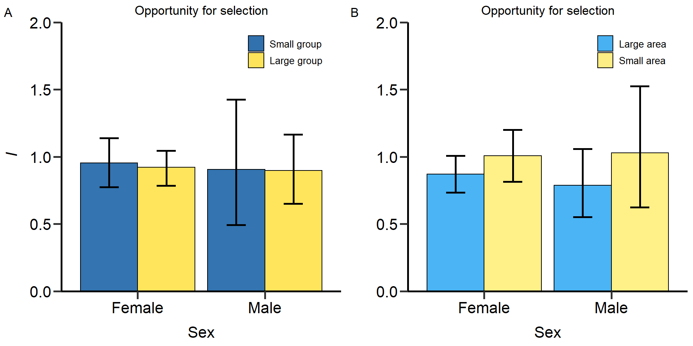
Figure 7: Effects of group size (A) and area treatment (B) on the
opportunity for selection in females and males. Means and 95% confidence
intervals.
Treatement comparisons via permutation test for the
opportunity for selection
Table_BatemanMetrics_TreatComp_round[c(1,5,9,13),] Sex Treatment Selection_metric Variance l95.CI u95.CI
1 Male Area Opportunity for selection -0.239 -0.794 0.257
5 Male Population size Opportunity for selection 0.009 -0.491 0.593
9 Female Area Opportunity for selection -0.136 -0.372 0.100
13 Female Population size Opportunity for selection 0.033 -0.190 0.256
p-value
1 0.186
5 0.927
9 0.085
13 0.710Sex comparisons via permutation test for the opportunity for selection
Table_BatemanMetrics_SexComp_round[c(1,5,9,13),] Treatment Selection_metric Variance l95.CI u95.CI
1 Small population size Opportunity for selection -0.047 -0.501 0.502
5 Large population size Opportunity for selection -0.023 -0.298 0.278
9 Large area Opportunity for selection -0.083 -0.358 0.223
13 Small area Opportunity for selection 0.020 -0.434 0.547
p-value
1 0.808
5 0.788
9 0.413
13 0.909Opportunity for sexual selection
Figure: Opportunity for sexual selection (variance in mating success)
# Opportunity for sexual selection
BarPlot_3<- ggplot(Table_BatemanMetrics_pop[c(3,4,11,12),], aes(x=Sex, y=Variance, fill=Treatment)) +
scale_y_continuous(limits = c(0,1), breaks = seq(0,1,0.25), expand = c(0 ,0)) +
geom_hline(yintercept=0, linetype="dashed", color = "black", size=1) +
geom_bar(stat="identity", color="black", position=position_dodge(), alpha=0.8) +
ylab(expression(paste(~italic("I"['s']))))+ggtitle('Opportunity for sexual selection')+labs(tag = "A")+xlab('Sex')+
scale_x_discrete(breaks=waiver(),labels = c("Female","Male"))+
theme(panel.border = element_blank(),
plot.title = element_text(hjust = 0.5),
panel.background = element_blank(),
panel.grid.major = element_blank(),
panel.grid.minor = element_blank(),
plot.tag.position=c(0.01,0.98),
legend.position = c(0.8, 0.9),
legend.title = element_blank(),
legend.text = element_text(colour="black", size=10),
axis.line.x = element_line(colour = "black", size = 1),
axis.line.y = element_line(colour = "black", size = 1),
axis.text.x = element_text(face="plain", color="black", size=16, angle=0),
axis.text.y = element_text(face="plain", color="black", size=16, angle=0),
axis.title.x = element_text(size=16,face="plain", margin = margin(r=0,10,0,0)),
axis.title.y = element_text(size=16,face="plain", margin = margin(r=10,0,0,0)),
axis.ticks = element_line(size = 1),
axis.ticks.length = unit(.3, "cm")) +
geom_errorbar(aes(ymin=l95.CI, ymax=u95.CI), width=.3,size=1, position=position_dodge(.9)) +
scale_fill_manual(values=c(colorESEB[1],colorESEB[2]),name = "Treatment", labels = c('Small group','Large group'))
BarPlot_4<- ggplot(Table_BatemanMetrics_area[c(3,4,11,12),], aes(x=Sex, y=Variance, fill=Treatment)) +
scale_y_continuous(limits = c(0,1), breaks = seq(0,1,0.25), expand = c(0 ,0)) +
geom_hline(yintercept=0, linetype="dashed", color = "black", size=1) +
geom_bar(stat="identity", color="black", position=position_dodge(), alpha=0.8) +
ylab('')+ggtitle('Opportunity for sexual selection')+labs(tag = "B")+xlab('Sex')+
scale_x_discrete(breaks=waiver(),labels = c("Female","Male"))+
theme(panel.border = element_blank(),
plot.title = element_text(hjust = 0.5),
panel.background = element_blank(),
panel.grid.major = element_blank(),
panel.grid.minor = element_blank(),
plot.tag.position=c(0.01,0.98),
legend.position = c(0.8, 0.9),
legend.title = element_blank(),
legend.text = element_text(colour="black", size=10),
axis.line.x = element_line(colour = "black", size = 1),
axis.line.y = element_line(colour = "black", size = 1),
axis.text.x = element_text(face="plain", color="black", size=16, angle=0),
axis.text.y = element_text(face="plain", color="black", size=16, angle=0),
axis.title.x = element_text(size=16,face="plain", margin = margin(r=0,10,0,0)),
axis.title.y = element_text(size=16,face="plain", margin = margin(r=10,0,0,0)),
axis.ticks = element_line(size = 1),
axis.ticks.length = unit(.3, "cm")) +
geom_errorbar(aes(ymin=l95.CI, ymax=u95.CI), width=.3,size=1, position=position_dodge(.9)) +
scale_fill_manual(values=c(colorESEB2[1],colorESEB2[2]),name = "Treatment", labels = c('Large area','Small area'))
grid.arrange(grobs = list(BarPlot_3,BarPlot_4), nrow = 1,ncol=2, widths=c(2.3, 2.3))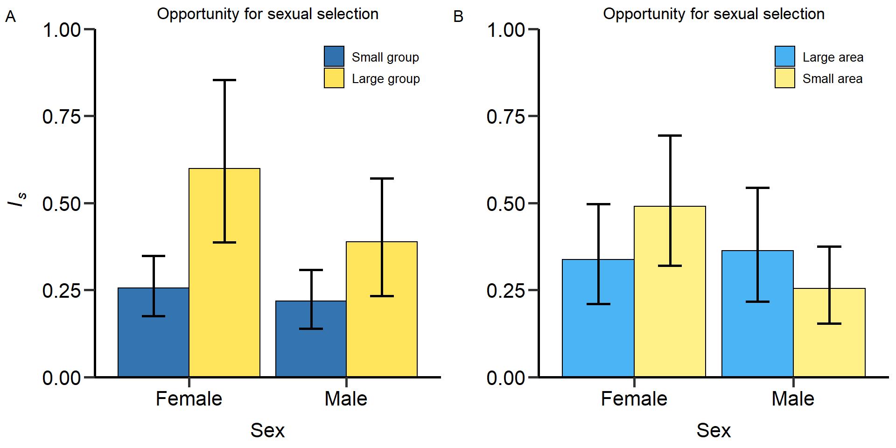
Figure 8: Effects of group size (A) and area treatment (B) on the
opportunity for sexual selection in females and males. Means and 95%
confidence intervals.
Treatement comparisons via permutation
test for the opportunity for sexual selection
Table_BatemanMetrics_TreatComp_round[c(2,6,10,14),] Sex Treatment Selection_metric Variance l95.CI
2 Male Area Opportunity for sexual selection 0.110 -0.081
6 Male Population size Opportunity for sexual selection -0.171 -0.368
10 Female Area Opportunity for sexual selection -0.154 -0.400
14 Female Population size Opportunity for sexual selection -0.342 -0.607
u95.CI p-value
2 0.314 0.13
6 0.007 0.02
10 0.077 0.06
14 -0.110 0.00Sex comparisons via permutation test for the opportunity for selection
Table_BatemanMetrics_SexComp_round[c(2,6,10,14),] Treatment Selection_metric Variance l95.CI
2 Small population size Opportunity for sexual selection -0.039 -0.158
6 Large population size Opportunity for sexual selection -0.210 -0.503
10 Large area Opportunity for sexual selection 0.026 -0.189
14 Small area Opportunity for sexual selection -0.237 -0.465
u95.CI p-value
2 0.083 0.366
6 0.069 0.029
10 0.249 0.726
14 -0.030 0.003Bateman gradient
Figure: Bateman gradient (slope of mating success on reproductive success)
# Bateman gradient
BarPlot_5<- ggplot(Table_BatemanMetrics_pop[c(5,6,13,14),], aes(x=Sex, y=Variance, fill=Treatment)) +
scale_y_continuous(limits = c(0, 2.4), breaks = seq(0,2.4,0.5), expand = c(0 ,0)) +
geom_hline(yintercept=0, linetype="dashed", color = "black", size=1) +
geom_bar(stat="identity", color="black", position=position_dodge(), alpha=0.8) +
ylab(expression(paste(~italic(symbol("b")['ss']))))+ggtitle('Bateman gradient')+labs(tag = "A")+xlab('Sex')+
scale_x_discrete(breaks=waiver(),labels = c("Female","Male"))+
theme(panel.border = element_blank(),
plot.title = element_text(hjust = 0.5),
panel.background = element_blank(),
panel.grid.major = element_blank(),
panel.grid.minor = element_blank(),
plot.tag.position=c(0.01,0.98),
legend.position = c(0.8, 0.9),
legend.title = element_blank(),
legend.text = element_text(colour="black", size=10),
axis.line.x = element_line(colour = "black", size = 1),
axis.line.y = element_line(colour = "black", size = 1),
axis.text.x = element_text(face="plain", color="black", size=16, angle=0),
axis.text.y = element_text(face="plain", color="black", size=16, angle=0),
axis.title.x = element_text(size=16,face="plain", margin = margin(r=0,10,0,0)),
axis.title.y = element_text(size=16,face="plain", margin = margin(r=10,0,0,0)),
axis.ticks = element_line(size = 1),
axis.ticks.length = unit(.3, "cm")) +
geom_errorbar(aes(ymin=l95.CI, ymax=u95.CI), width=.3,size=1, position=position_dodge(.9)) +
scale_fill_manual(values=c(colorESEB[1],colorESEB[2]),name = "Treatment", labels = c('Small group','Large group'))
BarPlot_6<- ggplot(Table_BatemanMetrics_area[c(5,6,13,14),], aes(x=Sex, y=Variance, fill=Treatment)) +
scale_y_continuous(limits = c(0, 2.4), breaks = seq(0,2.4,0.5), expand = c(0 ,0)) +
geom_hline(yintercept=0, linetype="dashed", color = "black", size=1) +
geom_bar(stat="identity", color="black", position=position_dodge(), alpha=0.8) +
ylab('')+ggtitle('Bateman gradient')+labs(tag = "B")+xlab('Sex')+
scale_x_discrete(breaks=waiver(),labels = c("Female","Male"))+
theme(panel.border = element_blank(),
plot.title = element_text(hjust = 0.5),
panel.background = element_blank(),
panel.grid.major = element_blank(),
panel.grid.minor = element_blank(),
plot.tag.position=c(0.01,0.98),
legend.position = c(0.8, 0.9),
legend.title = element_blank(),
legend.text = element_text(colour="black", size=10),
axis.line.x = element_line(colour = "black", size = 1),
axis.line.y = element_line(colour = "black", size = 1),
axis.text.x = element_text(face="plain", color="black", size=16, angle=0),
axis.text.y = element_text(face="plain", color="black", size=16, angle=0),
axis.title.x = element_text(size=16,face="plain", margin = margin(r=0,10,0,0)),
axis.title.y = element_text(size=16,face="plain", margin = margin(r=10,0,0,0)),
axis.ticks = element_line(size = 1),
axis.ticks.length = unit(.3, "cm")) +
geom_errorbar(aes(ymin=l95.CI, ymax=u95.CI), width=.3,size=1, position=position_dodge(.9)) +
scale_fill_manual(values=c(colorESEB2[1],colorESEB2[2]),name = "Treatment", labels = c('Large area','Small area'))
grid.arrange(grobs = list(BarPlot_5,BarPlot_6), nrow = 1,ncol=2, widths=c(2.3, 2.3))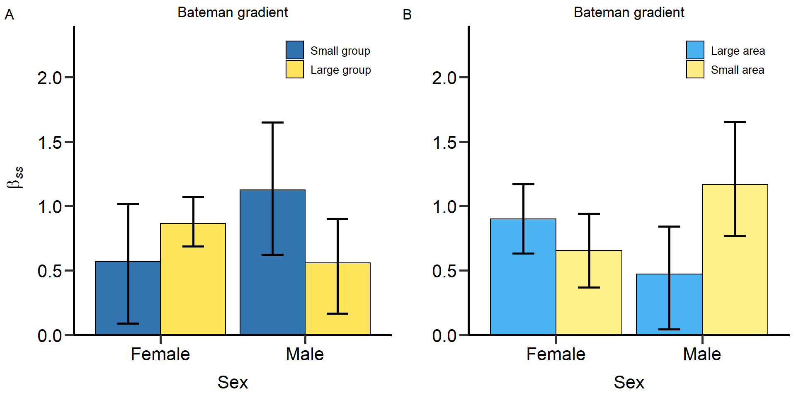
Figure 9: Effects of group size (A) and area treatment (B) on the
Bateman gradient in females and males. Means and 95% confidence
intervals.
Treatement comparisons via permutation test for the
Bateman gradient
Table_BatemanMetrics_TreatComp_round[c(3,7,11,15),] Sex Treatment Selection_metric Variance l95.CI u95.CI p-value
3 Male Area Bateman gradient -0.696 -1.320 -0.132 0.006
7 Male Population size Bateman gradient 0.567 -0.044 1.217 0.020
11 Female Area Bateman gradient 0.244 -0.150 0.634 0.268
15 Female Population size Bateman gradient -0.296 -0.807 0.189 0.185Sex comparisons via permutation test for the opportunity for selection
Table_BatemanMetrics_SexComp_round[c(3,7,11,15),] Treatment Selection_metric Variance l95.CI u95.CI p-value
3 Small population size Bateman gradient 0.557 -0.115 1.260 0.049
7 Large population size Bateman gradient -0.306 -0.737 0.077 0.132
11 Large area Bateman gradient -0.429 -0.940 0.023 0.056
15 Small area Bateman gradient 0.511 0.017 1.069 0.039# Bateman gradient (scatter)
p1<-ggplot(DB_data_clean_Small_pop, aes(x=rel_m_cMS, y=rel_m_RS)) +
geom_point(alpha=0.4,shape=16, size = 3,color=colpal2[2]) +
geom_smooth(method=lm, se=TRUE,alpha=0.3) +
theme(plot.tag.position=c(0.1,0.98))+
labs(tag = "A")+xlab('Rel. mating success')+ylab("Rel. reproductive success")+ggtitle('Small group')+ theme(plot.title = element_text(hjust = 0.5))+
theme(axis.text=element_text(size=13),
axis.title=element_text(size=14))+ theme(legend.position="none")+
ylim(0,4.2)+xlim(0,3.2)+
annotate("text",label=expression(paste(beta['female'],' = 0.69')),x=.48,y=4.2,size=4)+
annotate("text",label=expression(paste(beta['male'],' = 1.15')),x=.42,y=3.85,size=4)+
theme(panel.grid.major = element_blank(), panel.grid.minor = element_blank(),panel.background = element_blank(), axis.line = element_line(colour = "black"))
p1=p1+geom_point(aes(x=rel_f_cMS, y=rel_f_RS),color=colpal2[1],alpha=0.4,shape=16, size = 3)+
geom_smooth(aes(x=rel_f_cMS, y=rel_f_RS),color=colpal2[1],method=lm, se=TRUE,alpha=0.3)
p2<-ggplot(DB_data_clean_Large_pop, aes(x=rel_m_cMS, y=rel_m_RS)) +
geom_point(alpha=0.4,shape=16, size = 3,color=colpal2[2]) +
geom_smooth(method=lm, se=TRUE,alpha=0.3) +
theme(plot.tag.position=c(0.1,0.98))+
labs(tag = "B")+xlab('Rel. mating success')+ylab("Rel. reproductive success")+ggtitle('Large group')+ theme(plot.title = element_text(hjust = 0.5))+
theme(axis.text=element_text(size=13),
axis.title=element_text(size=14))+ theme(legend.position="none")+
ylim(0,4.2)+xlim(0,3.2)+
annotate("text",label=expression(paste(beta['female'],' = 0.88')),x=.48,y=4.2,size=4)+
annotate("text",label=expression(paste(beta['male'],' = 0.59')),x=.42,y=3.85,size=4)+
theme(panel.grid.major = element_blank(), panel.grid.minor = element_blank(),panel.background = element_blank(), axis.line = element_line(colour = "black"))
p2=p2+geom_point(aes(x=rel_f_cMS, y=rel_f_RS),color=colpal2[1],alpha=0.4,shape=16, size = 3)+
geom_smooth(aes(x=rel_f_cMS, y=rel_f_RS),color=colpal2[1],method=lm, se=TRUE,alpha=0.3)
p3<-ggplot(DB_data_clean_Large_area, aes(x=rel_m_cMS, y=rel_m_RS)) +
geom_point(alpha=0.4,shape=16, size = 3,color=colpal2[2]) +
geom_smooth(method=lm, se=TRUE,alpha=0.3) +
theme(plot.tag.position=c(0.1,0.98))+
labs(tag = "C")+xlab('Rel. mating success')+ylab("Rel. reproductive success")+ggtitle('Large area')+ theme(plot.title = element_text(hjust = 0.5))+
theme(axis.text=element_text(size=13),
axis.title=element_text(size=14))+ theme(legend.position="none")+
ylim(0,4.2)+xlim(0,3.2)+
annotate("text",label=expression(paste(beta['female'],' = 0.93')),x=.48,y=4.2,size=4)+
annotate("text",label=expression(paste(beta['male'],' = 0.51')),x=.42,y=3.85,size=4)+
theme(panel.grid.major = element_blank(), panel.grid.minor = element_blank(),panel.background = element_blank(), axis.line = element_line(colour = "black"))
p3=p3+geom_point(aes(x=rel_f_cMS, y=rel_f_RS),color=colpal2[1],alpha=0.4,shape=16, size = 3)+
geom_smooth(aes(x=rel_f_cMS, y=rel_f_RS),color=colpal2[1],method=lm, se=TRUE,alpha=0.3)
p4<-ggplot(DB_data_clean_Small_area, aes(x=rel_m_cMS, y=rel_m_RS)) +
geom_point(alpha=0.4,shape=16, size = 3,color=colpal2[2]) +
geom_smooth(method=lm, se=TRUE,alpha=0.3) +
theme(plot.tag.position=c(0.1,0.98))+
labs(tag = "D")+xlab('Rel. mating success')+ylab("Rel. reproductive success")+ggtitle('Small area')+ theme(plot.title = element_text(hjust = 0.5))+
theme(axis.text=element_text(size=13),
axis.title=element_text(size=14))+
ylim(0,4.2)+xlim(0,3.2)+
theme(legend.position="none")+
annotate("text",label=expression(paste(beta['female'],' = 0.72')),x=.48,y=4.2,size=4)+
annotate("text",label=expression(paste(beta['male'],' = 1.19')),x=.42,y=3.85,size=4)+
theme(panel.grid.major = element_blank(), panel.grid.minor = element_blank(),panel.background = element_blank(), axis.line = element_line(colour = "black"))
p4=p4+geom_point(aes(x=rel_f_cMS, y=rel_f_RS),color=colpal2[1],alpha=0.4,shape=16, size = 3)+
geom_smooth(aes(x=rel_f_cMS, y=rel_f_RS),color=colpal2[1],method=lm, se=TRUE,alpha=0.3)
#Create legend
p5<-ggplot(DB_data_clean, aes(x=Total_N_MTP1, y=Total_N_Rd, color=Sex)) +
geom_point(alpha=0.4,shape=16, size = 3, position=position_jitterdodge(jitter.height=0,jitter.width=0,dodge.width = 0)) +
geom_smooth(method=lm, se=TRUE,alpha=0.3) +
scale_color_manual(values=c(colpal2[1],colpal2[2]),name = "Sex", labels = c('Females','Males'))+
xlab('Rel. mating success')+ylab("Rel. reproductive success")+
guides(color=guide_legend(override.aes=list(fill=NA)))+
theme(legend.key = element_rect(fill = "transparent"))
legend <- get_legend(p5)
plot1<-grid.arrange(p1,p2,legend,p3,p4,legend, nrow = 2,ncol=3, widths=c(2.3, 2.3, 0.65))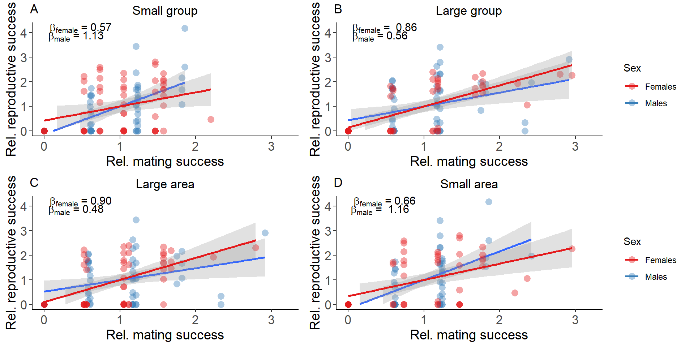
Figure 10: Scatter plot of the Bateman gradient in females and males.
Means and 95% confidence intervals.
Jones index
Figure: Jones index (maximum strength of sexual selection)
# Jones index
BarPlot_7<- ggplot(Table_BatemanMetrics_pop[c(7,8,14,15),], aes(x=Sex, y=Variance, fill=Treatment)) +
scale_y_continuous(limits = c(0,1.3), breaks = seq(0,1.3,0.4), expand = c(0 ,0)) +
geom_hline(yintercept=0, linetype="dashed", color = "black", size=1) +
geom_bar(stat="identity", color="black", position=position_dodge(), alpha=0.8) +
ylab(expression(paste(~italic("s'"['max']))))+ggtitle('Jones index')+labs(tag = "A")+xlab('Sex')+
scale_x_discrete(breaks=waiver(),labels = c("Female","Male"))+
theme(panel.border = element_blank(),
plot.title = element_text(hjust = 0.5),
panel.background = element_blank(),
panel.grid.major = element_blank(),
panel.grid.minor = element_blank(),
plot.tag.position=c(0.01,0.98),
legend.position = c(0.8, 0.9),
legend.title = element_blank(),
legend.text = element_text(colour="black", size=10),
axis.line.x = element_line(colour = "black", size = 1),
axis.line.y = element_line(colour = "black", size = 1),
axis.text.x = element_text(face="plain", color="black", size=16, angle=0),
axis.text.y = element_text(face="plain", color="black", size=16, angle=0),
axis.title.x = element_text(size=16,face="plain", margin = margin(r=0,10,0,0)),
axis.title.y = element_text(size=16,face="plain", margin = margin(r=10,0,0,0)),
axis.ticks = element_line(size = 1),
axis.ticks.length = unit(.3, "cm")) +
geom_errorbar(aes(ymin=l95.CI, ymax=u95.CI), width=.3,size=1, position=position_dodge(.9)) +
scale_fill_manual(values=c(colorESEB[1],colorESEB[2]),name = "Treatment", labels = c('Small group','Large group'))
BarPlot_8<- ggplot(Table_BatemanMetrics_area[c(7,8,14,15),], aes(x=Sex, y=Variance, fill=Treatment)) +
scale_y_continuous(limits = c(0,1.3), breaks = seq(0,1.3,0.4), expand = c(0 ,0)) +
geom_hline(yintercept=0, linetype="dashed", color = "black", size=1) +
geom_bar(stat="identity", color="black", position=position_dodge(), alpha=0.8) +
ylab('')+ggtitle('Jones index')+labs(tag = "B")+xlab('Sex')+
scale_x_discrete(breaks=waiver(),labels = c("Female","Male"))+
theme(panel.border = element_blank(),
plot.title = element_text(hjust = 0.5),
panel.background = element_blank(),
panel.grid.major = element_blank(),
panel.grid.minor = element_blank(),
plot.tag.position=c(0.01,0.98),
legend.position = c(0.8, 0.9),
legend.title = element_blank(),
legend.text = element_text(colour="black", size=10),
axis.line.x = element_line(colour = "black", size = 1),
axis.line.y = element_line(colour = "black", size = 1),
axis.text.x = element_text(face="plain", color="black", size=16, angle=0),
axis.text.y = element_text(face="plain", color="black", size=16, angle=0),
axis.title.x = element_text(size=16,face="plain", margin = margin(r=0,10,0,0)),
axis.title.y = element_text(size=16,face="plain", margin = margin(r=10,0,0,0)),
axis.ticks = element_line(size = 1),
axis.ticks.length = unit(.3, "cm")) +
geom_errorbar(aes(ymin=l95.CI, ymax=u95.CI), width=.3,size=1, position=position_dodge(.9)) +
scale_fill_manual(values=c(colorESEB2[1],colorESEB2[2]),name = "Treatment", labels = c('Large area','Small area'))
grid.arrange(grobs = list(BarPlot_7,BarPlot_8), nrow = 1,ncol=2, widths=c(2.3, 2.3))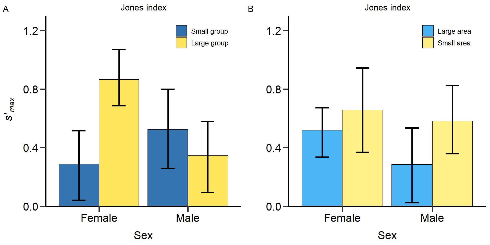
Figure 11: Effects of group size (A) and area treatment (B) on the Jones
index in females and males. Means and 95% confidence intervals.
Treatement comparisons via permutation test for the Jones index
Table_BatemanMetrics_TreatComp_round[c(4,8,12,16),] Sex Treatment Selection_metric Variance l95.CI u95.CI p-value
4 Male Area Jones index -0.298 -0.651 0.040 0.026
8 Male Population size Jones index 0.178 -0.179 0.544 0.178
12 Female Area Jones index 0.056 -0.209 0.326 0.675
16 Female Population size Jones index -0.375 -0.651 -0.103 0.006Sex comparisons via permutation test for the opportunity for selection
Table_BatemanMetrics_SexComp_round[c(4,8,12,16),] Treatment Selection_metric Variance l95.CI u95.CI p-value
4 Small population size Jones index 0.236 -0.116 0.595 0.080
8 Large population size Jones index -0.318 -0.601 -0.039 0.016
12 Large area Jones index -0.236 -0.544 0.077 0.061
16 Small area Jones index 0.118 -0.186 0.434 0.406Variance decopmposition
We decomposed the variance in reproductive success for males and
females.
Components fro males were:
- Mating success
-
Insemination success
- Fertilization success
- Partner
fecundity
Components for females were:
- Mating success
- Fecundity
We used bootstrapping (10.000 bootstrap
replicates) to obtain 95% confidence intervals and permutation tests
(10.000 permutations) to statistically compare treatments and
sexes.
# Bootstrapping variances + CI
# mMS
# Large area
DB_data_clean_Large_area_M_MS_n <-as.data.table(DB_data_clean_Large_area$rel_m_cMS)
c <- function(d, i){
d2 <- d[i,]
return(var(d2[,1], na.rm=TRUE))
}
Large_area_M_MS_bootvar <- boot(DB_data_clean_Large_area_M_MS_n, c, R=10000)
Large_area_M_MS_bootvar
summary(Large_area_M_MS_bootvar)
plot(Large_area_M_MS_bootvar)boot.ci(Large_area_M_MS_bootvar, type = "all")
quantile(Large_area_M_MS_bootvar$t,.025)
quantile(Large_area_M_MS_bootvar$t,.975)
# Small Area
DB_data_clean_Small_area_M_MS_n <-as.data.table(DB_data_clean_Small_area$rel_m_cMS)
Small_area_M_MS_bootvar <- boot(DB_data_clean_Small_area_M_MS_n, c, R=10000)
Small_area_M_MS_bootvar
summary(Small_area_M_MS_bootvar)
plot(Small_area_M_MS_bootvar)boot.ci(Small_area_M_MS_bootvar, type = "all")
quantile(Small_area_M_MS_bootvar$t,.025)
quantile(Small_area_M_MS_bootvar$t,.975)
# Small group
DB_data_clean_Small_pop_M_MS_n <-as.data.table(DB_data_clean_Small_pop$rel_m_cMS)
Small_pop_M_MS_bootvar <- boot(DB_data_clean_Small_pop_M_MS_n, c, R=10000)
Small_pop_M_MS_bootvar
summary(Small_pop_M_MS_bootvar)
plot(Small_pop_M_MS_bootvar)boot.ci(Small_pop_M_MS_bootvar, type = "all")
quantile(Small_pop_M_MS_bootvar$t,.025)
quantile(Small_pop_M_MS_bootvar$t,.975)
# Large group
DB_data_clean_Large_pop_M_MS_n <-as.data.table(DB_data_clean_Large_pop$rel_m_cMS)
Large_pop_M_MS_bootvar <- boot(DB_data_clean_Large_pop_M_MS_n, c, R=10000)
Large_pop_M_MS_bootvar
summary(Large_pop_M_MS_bootvar)
plot(Large_pop_M_MS_bootvar)boot.ci(Large_pop_M_MS_bootvar, type = "all")
quantile(Large_pop_M_MS_bootvar$t,.025)
quantile(Large_pop_M_MS_bootvar$t,.975)
rm("c")
# InSuc ####
# Large area
DB_data_clean_Large_area_M_InSuc_n <-as.data.table(DB_data_clean_Large_area$rel_m_InSuc)
c <- function(d, i){
d2 <- d[i,]
return(var(d2[,1], na.rm=TRUE))
}
Large_area_M_InSuc_bootvar <- boot(DB_data_clean_Large_area_M_InSuc_n, c, R=10000)
Large_area_M_InSuc_bootvar
summary(Large_area_M_InSuc_bootvar)
plot(Large_area_M_InSuc_bootvar)boot.ci(Large_area_M_InSuc_bootvar, type = "all")
quantile(Large_area_M_InSuc_bootvar$t,.025)
quantile(Large_area_M_InSuc_bootvar$t,.975)
# Small Area
DB_data_clean_Small_area_M_InSuc_n <-as.data.table(DB_data_clean_Small_area$rel_m_InSuc)
Small_area_M_InSuc_bootvar <- boot(DB_data_clean_Small_area_M_InSuc_n, c, R=10000)
Small_area_M_InSuc_bootvar
summary(Small_area_M_InSuc_bootvar)
plot(Small_area_M_InSuc_bootvar)boot.ci(Small_area_M_InSuc_bootvar, type = "all")
quantile(Small_area_M_InSuc_bootvar$t,.025)
quantile(Small_area_M_InSuc_bootvar$t,.975)
# Small group
DB_data_clean_Small_pop_M_InSuc_n <-as.data.table(DB_data_clean_Small_pop$rel_m_InSuc)
Small_pop_M_InSuc_bootvar <- boot(DB_data_clean_Small_pop_M_InSuc_n, c, R=10000)
Small_pop_M_InSuc_bootvar
summary(Small_pop_M_InSuc_bootvar)
plot(Small_pop_M_InSuc_bootvar)boot.ci(Small_pop_M_InSuc_bootvar, type = "all")
quantile(Small_pop_M_InSuc_bootvar$t,.025)
quantile(Small_pop_M_InSuc_bootvar$t,.975)
# Large group
DB_data_clean_Large_pop_M_InSuc_n <-as.data.table(DB_data_clean_Large_pop$rel_m_InSuc)
Large_pop_M_InSuc_bootvar <- boot(DB_data_clean_Large_pop_M_InSuc_n, c, R=10000)
Large_pop_M_InSuc_bootvar
summary(Large_pop_M_InSuc_bootvar)
plot(Large_pop_M_InSuc_bootvar)boot.ci(Large_pop_M_InSuc_bootvar, type = "all")
quantile(Large_pop_M_InSuc_bootvar$t,.025)
quantile(Large_pop_M_InSuc_bootvar$t,.975)
rm("c")
# feSuc ####
# Large area
DB_data_clean_Large_area_M_feSuc_n <-as.data.table(DB_data_clean_Large_area$rel_m_feSuc)
c <- function(d, i){
d2 <- d[i,]
return(var(d2$V1, na.rm=TRUE))
}
Large_area_M_feSuc_bootvar <- boot(DB_data_clean_Large_area_M_feSuc_n, c, R=10000)
Large_area_M_feSuc_bootvar
summary(Large_area_M_feSuc_bootvar)
plot(Large_area_M_feSuc_bootvar)boot.ci(Large_area_M_feSuc_bootvar, type = "all")
quantile(Large_area_M_feSuc_bootvar$t,.025)
quantile(Large_area_M_feSuc_bootvar$t,.975)
# Small Area
DB_data_clean_Small_area_M_feSuc_n <-as.data.table(DB_data_clean_Small_area$rel_m_feSuc)
Small_area_M_feSuc_bootvar <- boot(DB_data_clean_Small_area_M_feSuc_n, c, R=10000)
Small_area_M_feSuc_bootvar
summary(Small_area_M_feSuc_bootvar)
plot(Small_area_M_feSuc_bootvar)boot.ci(Small_area_M_feSuc_bootvar, type = "all")
quantile(Small_area_M_feSuc_bootvar$t,.025)
quantile(Small_area_M_feSuc_bootvar$t,.975)
# Small group
DB_data_clean_Small_pop_M_feSuc_n <-as.data.table(DB_data_clean_Small_pop$rel_m_feSuc)
Small_pop_M_feSuc_bootvar <- boot(DB_data_clean_Small_pop_M_feSuc_n, c, R=10000)
Small_pop_M_feSuc_bootvar
summary(Small_pop_M_feSuc_bootvar)
plot(Small_pop_M_feSuc_bootvar)boot.ci(Small_pop_M_feSuc_bootvar, type = "all")
quantile(Small_pop_M_feSuc_bootvar$t,.025)
quantile(Small_pop_M_feSuc_bootvar$t,.975)
# Large group
DB_data_clean_Large_pop_M_feSuc_n <-as.data.table(DB_data_clean_Large_pop$rel_m_feSuc)
Large_pop_M_feSuc_bootvar <- boot(DB_data_clean_Large_pop_M_feSuc_n, c, R=10000)
Large_pop_M_feSuc_bootvar
summary(Large_pop_M_feSuc_bootvar)
plot(Large_pop_M_feSuc_bootvar)boot.ci(Large_pop_M_feSuc_bootvar, type = "all")
quantile(Large_pop_M_feSuc_bootvar$t,.025)
quantile(Large_pop_M_feSuc_bootvar$t,.975)
rm("c")
# pFec ####
# Large area
DB_data_clean_Large_area_M_pFec_n <-as.data.table(DB_data_clean_Large_area$rel_m_pFec)
c <- function(d, i){
d2 <- d[i,]
return(var(d2[,1], na.rm=TRUE))
}
Large_area_M_pFec_bootvar <- boot(DB_data_clean_Large_area_M_pFec_n, c, R=10000)
Large_area_M_pFec_bootvar
summary(Large_area_M_pFec_bootvar)
plot(Large_area_M_pFec_bootvar)boot.ci(Large_area_M_pFec_bootvar, type = "all")
quantile(Large_area_M_pFec_bootvar$t,.025)
quantile(Large_area_M_pFec_bootvar$t,.975)
# Small Area
DB_data_clean_Small_area_M_pFec_n <-as.data.table(DB_data_clean_Small_area$rel_m_pFec)
Small_area_M_pFec_bootvar <- boot(DB_data_clean_Small_area_M_pFec_n, c, R=10000)
Small_area_M_pFec_bootvar
summary(Small_area_M_pFec_bootvar)
plot(Small_area_M_pFec_bootvar)boot.ci(Small_area_M_pFec_bootvar, type = "all")
quantile(Small_area_M_pFec_bootvar$t,.025)
quantile(Small_area_M_pFec_bootvar$t,.975)
# Small group
DB_data_clean_Small_pop_M_pFec_n <-as.data.table(DB_data_clean_Small_pop$rel_m_pFec)
Small_pop_M_pFec_bootvar <- boot(DB_data_clean_Small_pop_M_pFec_n, c, R=10000)
Small_pop_M_pFec_bootvar
summary(Small_pop_M_pFec_bootvar)
plot(Small_pop_M_pFec_bootvar)boot.ci(Small_pop_M_pFec_bootvar, type = "all")
quantile(Small_pop_M_pFec_bootvar$t,.025)
quantile(Small_pop_M_pFec_bootvar$t,.975)
# Large group
DB_data_clean_Large_pop_M_pFec_n <-as.data.table(DB_data_clean_Large_pop$rel_m_pFec)
Large_pop_M_pFec_bootvar <- boot(DB_data_clean_Large_pop_M_pFec_n, c, R=10000)
Large_pop_M_pFec_bootvar
summary(Large_pop_M_pFec_bootvar)
plot(Large_pop_M_pFec_bootvar)boot.ci(Large_pop_M_pFec_bootvar, type = "all")
quantile(Large_pop_M_pFec_bootvar$t,.025)
quantile(Large_pop_M_pFec_bootvar$t,.975)
rm("c")
# fMS ####
# Large area
DB_data_clean_Large_area_F_fMS_n <-as.data.table(DB_data_clean_Large_area$rel_f_cMS)
c <- function(d, i){
d2 <- d[i,]
return(var(d2[,1], na.rm=TRUE))
}
Large_area_F_fMS_bootvar <- boot(DB_data_clean_Large_area_F_fMS_n, c, R=10000)
Large_area_F_fMS_bootvar
summary(Large_area_F_fMS_bootvar)
plot(Large_area_F_fMS_bootvar)boot.ci(Large_area_F_fMS_bootvar, type = "all")
quantile(Large_area_F_fMS_bootvar$t,.025)
quantile(Large_area_F_fMS_bootvar$t,.975)
# Small Area
DB_data_clean_Small_area_F_fMS_n <-as.data.table(DB_data_clean_Small_area$rel_f_cMS)
Small_area_F_fMS_bootvar <- boot(DB_data_clean_Small_area_F_fMS_n, c, R=10000)
Small_area_F_fMS_bootvar
summary(Small_area_F_fMS_bootvar)
plot(Small_area_F_fMS_bootvar)boot.ci(Small_area_F_fMS_bootvar, type = "all")
quantile(Small_area_F_fMS_bootvar$t,.025)
quantile(Small_area_F_fMS_bootvar$t,.975)
# Small group
DB_data_clean_Small_pop_F_fMS_n <-as.data.table(DB_data_clean_Small_pop$rel_f_cMS)
Small_pop_F_fMS_bootvar <- boot(DB_data_clean_Small_pop_F_fMS_n, c, R=10000)
Small_pop_F_fMS_bootvar
summary(Small_pop_F_fMS_bootvar)
plot(Small_pop_F_fMS_bootvar)boot.ci(Small_pop_F_fMS_bootvar, type = "all")
quantile(Small_pop_F_fMS_bootvar$t,.025)
quantile(Small_pop_F_fMS_bootvar$t,.975)
# Large group
DB_data_clean_Large_pop_F_fMS_n <-as.data.table(DB_data_clean_Large_pop$rel_f_cMS)
Large_pop_F_fMS_bootvar <- boot(DB_data_clean_Large_pop_F_fMS_n, c, R=10000)
Large_pop_F_fMS_bootvar
summary(Large_pop_F_fMS_bootvar)
plot(Large_pop_F_fMS_bootvar)boot.ci(Large_pop_F_fMS_bootvar, type = "all")
quantile(Large_pop_F_fMS_bootvar$t,.025)
quantile(Large_pop_F_fMS_bootvar$t,.975)
rm("c")
# fFec ####
# Large area
DB_data_clean_Large_area_F_fFec_n <-as.data.table(DB_data_clean_Large_area$rel_f_fec_pMate)
c <- function(d, i){
d2 <- d[i,]
return(var(d2[,1], na.rm=TRUE))
}
Large_area_F_fFec_bootvar <- boot(DB_data_clean_Large_area_F_fFec_n, c, R=10000)
Large_area_F_fFec_bootvar
summary(Large_area_F_fFec_bootvar)
plot(Large_area_F_fFec_bootvar)boot.ci(Large_area_F_fFec_bootvar, type = "all")
quantile(Large_area_F_fFec_bootvar$t,.025)
quantile(Large_area_F_fFec_bootvar$t,.975)
# Small Area
DB_data_clean_Small_area_F_fFec_n <-as.data.table(DB_data_clean_Small_area$rel_f_fec_pMate)
Small_area_F_fFec_bootvar <- boot(DB_data_clean_Small_area_F_fFec_n, c, R=10000)
Small_area_F_fFec_bootvar
summary(Small_area_F_fFec_bootvar)
plot(Small_area_F_fFec_bootvar)boot.ci(Small_area_F_fFec_bootvar, type = "all")
quantile(Small_area_F_fFec_bootvar$t,.025)
quantile(Small_area_F_fFec_bootvar$t,.975)
# Small group
DB_data_clean_Small_pop_F_fFec_n <-as.data.table(DB_data_clean_Small_pop$rel_f_fec_pMate)
Small_pop_F_fFec_bootvar <- boot(DB_data_clean_Small_pop_F_fFec_n, c, R=10000)
Small_pop_F_fFec_bootvar
summary(Small_pop_F_fFec_bootvar)
plot(Small_pop_F_fFec_bootvar)boot.ci(Small_pop_F_fFec_bootvar, type = "all")
quantile(Small_pop_F_fFec_bootvar$t,.025)
quantile(Small_pop_F_fFec_bootvar$t,.975)
# Large group
DB_data_clean_Large_pop_F_fFec_n <-as.data.table(DB_data_clean_Large_pop$rel_f_fec_pMate)
Large_pop_F_fFec_bootvar <- boot(DB_data_clean_Large_pop_F_fFec_n, c, R=10000)
Large_pop_F_fFec_bootvar
summary(Large_pop_F_fFec_bootvar)
plot(Large_pop_F_fFec_bootvar)boot.ci(Large_pop_F_fFec_bootvar, type = "all")
quantile(Large_pop_F_fFec_bootvar$t,.025)
quantile(Large_pop_F_fFec_bootvar$t,.975)
rm("c")
#Write Table ####
library(base)
PhenVarBoot_Table_Male_Large_area_MS <- as.data.frame(cbind("Male", "MS", "Large_area", mean(Large_area_M_MS_bootvar$t), quantile(Large_area_M_MS_bootvar$t,.025, names = FALSE), quantile(Large_area_M_MS_bootvar$t,.975, names = FALSE)))
PhenVarBoot_Table_Male_Small_area_MS <- as.data.frame(cbind("Male", "MS", "Small_area", mean(Small_area_M_MS_bootvar$t), quantile(Small_area_M_MS_bootvar$t,.025, names = FALSE), quantile(Small_area_M_MS_bootvar$t,.975, names = FALSE)))
PhenVarBoot_Table_Male_Small_pop_MS <- as.data.frame(cbind("Male", "MS", "Small_pop", mean(Small_pop_M_MS_bootvar$t), quantile(Small_pop_M_MS_bootvar$t,.025, names = FALSE), quantile(Small_pop_M_MS_bootvar$t,.975, names = FALSE)))
PhenVarBoot_Table_Male_Large_pop_MS <- as.data.frame(cbind("Male", "MS", "Large_pop", mean(Large_pop_M_MS_bootvar$t), quantile(Large_pop_M_MS_bootvar$t,.025, names = FALSE), quantile(Large_pop_M_MS_bootvar$t,.975, names = FALSE)))
PhenVarBoot_Table_Male_Large_area_InSuc <- as.data.frame(cbind("Male", "InSuc", "Large_area", mean(Large_area_M_InSuc_bootvar$t), quantile(Large_area_M_InSuc_bootvar$t,.025, names = FALSE), quantile(Large_area_M_InSuc_bootvar$t,.975, names = FALSE)))
PhenVarBoot_Table_Male_Small_area_InSuc <- as.data.frame(cbind("Male", "InSuc", "Small_area", mean(Small_area_M_InSuc_bootvar$t), quantile(Small_area_M_InSuc_bootvar$t,.025, names = FALSE), quantile(Small_area_M_InSuc_bootvar$t,.975, names = FALSE)))
PhenVarBoot_Table_Male_Small_pop_InSuc <- as.data.frame(cbind("Male", "InSuc", "Small_pop", mean(Small_pop_M_InSuc_bootvar$t), quantile(Small_pop_M_InSuc_bootvar$t,.025, names = FALSE), quantile(Small_pop_M_InSuc_bootvar$t,.975, names = FALSE)))
PhenVarBoot_Table_Male_Large_pop_InSuc <- as.data.frame(cbind("Male", "InSuc", "Large_pop", mean(Large_pop_M_InSuc_bootvar$t), quantile(Large_pop_M_InSuc_bootvar$t,.025, names = FALSE), quantile(Large_pop_M_InSuc_bootvar$t,.975, names = FALSE)))
PhenVarBoot_Table_Male_Large_area_feSuc <- as.data.frame(cbind("Male", "feSuc", "Large_area", mean(Large_area_M_feSuc_bootvar$t), quantile(Large_area_M_feSuc_bootvar$t,.025, names = FALSE), quantile(Large_area_M_feSuc_bootvar$t,.975, names = FALSE)))
PhenVarBoot_Table_Male_Small_area_feSuc <- as.data.frame(cbind("Male", "feSuc", "Small_area", mean(Small_area_M_feSuc_bootvar$t), quantile(Small_area_M_feSuc_bootvar$t,.025, names = FALSE), quantile(Small_area_M_feSuc_bootvar$t,.975, names = FALSE)))
PhenVarBoot_Table_Male_Small_pop_feSuc <- as.data.frame(cbind("Male", "feSuc", "Small_pop", mean(Small_pop_M_feSuc_bootvar$t), quantile(Small_pop_M_feSuc_bootvar$t,.025, names = FALSE), quantile(Small_pop_M_feSuc_bootvar$t,.975, names = FALSE)))
PhenVarBoot_Table_Male_Large_pop_feSuc <- as.data.frame(cbind("Male", "feSuc", "Large_pop", mean(Large_pop_M_feSuc_bootvar$t), quantile(Large_pop_M_feSuc_bootvar$t,.025, names = FALSE), quantile(Large_pop_M_feSuc_bootvar$t,.975, names = FALSE)))
PhenVarBoot_Table_Male_Large_area_pFec <- as.data.frame(cbind("Male", "pFec", "Large_area", mean(Large_area_M_pFec_bootvar$t), quantile(Large_area_M_pFec_bootvar$t,.025, names = FALSE), quantile(Large_area_M_pFec_bootvar$t,.975, names = FALSE)))
PhenVarBoot_Table_Male_Small_area_pFec <- as.data.frame(cbind("Male", "pFec", "Small_area", mean(Small_area_M_pFec_bootvar$t), quantile(Small_area_M_pFec_bootvar$t,.025, names = FALSE), quantile(Small_area_M_pFec_bootvar$t,.975, names = FALSE)))
PhenVarBoot_Table_Male_Small_pop_pFec <- as.data.frame(cbind("Male", "pFec", "Small_pop", mean(Small_pop_M_pFec_bootvar$t), quantile(Small_pop_M_pFec_bootvar$t,.025, names = FALSE), quantile(Small_pop_M_pFec_bootvar$t,.975, names = FALSE)))
PhenVarBoot_Table_Male_Large_pop_pFec <- as.data.frame(cbind("Male", "pFec", "Large_pop", mean(Large_pop_M_pFec_bootvar$t), quantile(Large_pop_M_pFec_bootvar$t,.025, names = FALSE), quantile(Large_pop_M_pFec_bootvar$t,.975, names = FALSE)))
PhenVarBoot_Table_Female_Large_area_fMS <- as.data.frame(cbind("Female", "fMS", "Large_area", mean(Large_area_F_fMS_bootvar$t), quantile(Large_area_F_fMS_bootvar$t,.025, names = FALSE), quantile(Large_area_F_fMS_bootvar$t,.975, names = FALSE)))
PhenVarBoot_Table_Female_Small_area_fMS <- as.data.frame(cbind("Female", "fMS", "Small_area", mean(Small_area_F_fMS_bootvar$t), quantile(Small_area_F_fMS_bootvar$t,.025, names = FALSE), quantile(Small_area_F_fMS_bootvar$t,.975, names = FALSE)))
PhenVarBoot_Table_Female_Small_pop_fMS <- as.data.frame(cbind("Female", "fMS", "Small_pop", mean(Small_pop_F_fMS_bootvar$t), quantile(Small_pop_F_fMS_bootvar$t,.025, names = FALSE), quantile(Small_pop_F_fMS_bootvar$t,.975, names = FALSE)))
PhenVarBoot_Table_Female_Large_pop_fMS <- as.data.frame(cbind("Female", "fMS", "Large_pop", mean(Large_pop_F_fMS_bootvar$t), quantile(Large_pop_F_fMS_bootvar$t,.025, names = FALSE), quantile(Large_pop_F_fMS_bootvar$t,.975, names = FALSE)))
PhenVarBoot_Table_Female_Large_area_fFec <- as.data.frame(cbind("Female", "fFec", "Large_area", mean(Large_area_F_fFec_bootvar$t), quantile(Large_area_F_fFec_bootvar$t,.025, names = FALSE), quantile(Large_area_F_fFec_bootvar$t,.975, names = FALSE)))
PhenVarBoot_Table_Female_Small_area_fFec <- as.data.frame(cbind("Female", "fFec", "Small_area", mean(Small_area_F_fFec_bootvar$t), quantile(Small_area_F_fFec_bootvar$t,.025, names = FALSE), quantile(Small_area_F_fFec_bootvar$t,.975, names = FALSE)))
PhenVarBoot_Table_Female_Small_pop_fFec <- as.data.frame(cbind("Female", "fFec", "Small_pop", mean(Small_pop_F_fFec_bootvar$t), quantile(Small_pop_F_fFec_bootvar$t,.025, names = FALSE), quantile(Small_pop_F_fFec_bootvar$t,.975, names = FALSE)))
PhenVarBoot_Table_Female_Large_pop_fFec <- as.data.frame(cbind("Female", "fFec", "Large_pop", mean(Large_pop_F_fFec_bootvar$t,na.rm=T), quantile(Large_pop_F_fFec_bootvar$t,.025, names = FALSE,na.rm=T), quantile(Large_pop_F_fFec_bootvar$t,.975, names = FALSE,na.rm=T)))
PhenVarBoot_Table <- as.data.frame(as.matrix(rbind(PhenVarBoot_Table_Male_Small_pop_MS,PhenVarBoot_Table_Male_Large_pop_MS,
PhenVarBoot_Table_Male_Large_area_MS,PhenVarBoot_Table_Male_Small_area_MS,
PhenVarBoot_Table_Male_Small_pop_InSuc,PhenVarBoot_Table_Male_Large_pop_InSuc,
PhenVarBoot_Table_Male_Large_area_InSuc,PhenVarBoot_Table_Male_Small_area_InSuc,
PhenVarBoot_Table_Male_Small_pop_feSuc,PhenVarBoot_Table_Male_Large_pop_feSuc,
PhenVarBoot_Table_Male_Large_area_feSuc,PhenVarBoot_Table_Male_Small_area_feSuc,
PhenVarBoot_Table_Male_Small_pop_pFec,PhenVarBoot_Table_Male_Large_pop_pFec,
PhenVarBoot_Table_Male_Large_area_pFec,PhenVarBoot_Table_Male_Small_area_pFec,
PhenVarBoot_Table_Female_Small_pop_fMS,PhenVarBoot_Table_Female_Large_pop_fMS,
PhenVarBoot_Table_Female_Large_area_fMS,PhenVarBoot_Table_Female_Small_area_fMS,
PhenVarBoot_Table_Female_Small_pop_fFec,PhenVarBoot_Table_Female_Large_pop_fFec,
PhenVarBoot_Table_Female_Large_area_fFec,PhenVarBoot_Table_Female_Small_area_fFec)))
is.table(PhenVarBoot_Table)
colnames(PhenVarBoot_Table)[1] <- "Sex"
colnames(PhenVarBoot_Table)[2] <- "Variance_component"
colnames(PhenVarBoot_Table)[3] <- "Treatment"
colnames(PhenVarBoot_Table)[4] <- "Variance"
colnames(PhenVarBoot_Table)[5] <- "l95.CI"
colnames(PhenVarBoot_Table)[6] <- "u95.CI"
PhenVarBoot_Table[,4]=as.numeric(PhenVarBoot_Table[,4])
PhenVarBoot_Table[,5]=as.numeric(PhenVarBoot_Table[,5])
PhenVarBoot_Table[,6]=as.numeric(PhenVarBoot_Table[,6])
PhenVarBoot_Table_round=cbind(PhenVarBoot_Table[,c(1,2,3)],round(PhenVarBoot_Table[,c(4,5,6)],digit=3))
rownames(PhenVarBoot_Table_round) <- NULL# Treatment comparison
#mMS
#Area
Treat_diff_Male_area_mMS=c(Large_area_M_MS_bootvar$t)-c(Small_area_M_MS_bootvar$t)
t_Treat_diff_Male_area_mMS=mean(Treat_diff_Male_area_mMS,na.rm=TRUE)
t_Treat_diff_Male_area_mMS_lower=quantile(Treat_diff_Male_area_mMS,.025,na.rm=TRUE)
t_Treat_diff_Male_area_mMS_upper=quantile(Treat_diff_Male_area_mMS,.975,na.rm=TRUE)
#Permutation test to calculate p value
comb_data=c(DB_data_clean_Large_area$rel_m_cMS,DB_data_clean_Small_area$rel_m_cMS)
diff.observed = var(na.omit((DB_data_clean_Large_area$rel_m_cMS))) - var(na.omit((DB_data_clean_Small_area$rel_m_cMS)))
diff.observed
number_of_permutations = 100000
diff.random = NULL
for (i in 1 : number_of_permutations) {
# Sample from the combined dataset
a.random = sample (na.omit(comb_data), length(c(DB_data_clean_Large_area$rel_m_cMS)), TRUE)
b.random = sample (na.omit(comb_data), length(c(DB_data_clean_Small_area$rel_m_cMS)), TRUE)
# Null (permuated) difference
diff.random[i] = var(na.omit(b.random)) - var(na.omit(a.random))
}
# P-value is the fraction of how many times the permuted difference is
# equal or more extreme than the observed difference
t_Treat_diff_Male_area_mMS_p = sum(abs(diff.random) >= as.numeric(abs(diff.observed)))/ number_of_permutations
#Population size ####
Treat_diff_Male_pop_mMS=c(Small_pop_M_MS_bootvar$t)-c(Large_pop_M_MS_bootvar$t)
t_Treat_diff_Male_pop_mMS=mean(Treat_diff_Male_pop_mMS,na.rm=TRUE)
t_Treat_diff_Male_pop_mMS_lower=quantile(Treat_diff_Male_pop_mMS,.025,na.rm=TRUE)
t_Treat_diff_Male_pop_mMS_upper=quantile(Treat_diff_Male_pop_mMS,.975,na.rm=TRUE)
#Permutation test to calculate p value
comb_data=c(DB_data_clean_Small_pop$rel_m_cMS,DB_data_clean_Large_pop$rel_m_cMS)
diff.observed = var(na.omit((DB_data_clean_Small_pop$rel_m_cMS))) - var(na.omit((DB_data_clean_Large_pop$rel_m_cMS)))
diff.observed
number_of_permutations = 100000
diff.random = NULL
for (i in 1 : number_of_permutations) {
# Sample from the combined dataset
a.random = sample (na.omit(comb_data), length(c(DB_data_clean_Small_pop$rel_m_cMS)), TRUE)
b.random = sample (na.omit(comb_data), length(c(DB_data_clean_Large_pop$rel_m_cMS)), TRUE)
# Null (permuated) difference
diff.random[i] = var(na.omit(b.random)) - var(na.omit(a.random))
}
# P-value is the fraction of how many times the permuted difference is
# equal or more extreme than the observed difference
t_Treat_diff_Male_pop_mMS_p = sum(abs(diff.random) >= as.numeric(abs(diff.observed)))/ number_of_permutations
#InSuc ####
#Area ####
Treat_diff_Male_area_InSuc=c(Large_area_M_InSuc_bootvar$t)-c(Small_area_M_InSuc_bootvar$t)
t_Treat_diff_Male_area_InSuc=mean(Treat_diff_Male_area_InSuc,na.rm=TRUE)
t_Treat_diff_Male_area_InSuc_lower=quantile(Treat_diff_Male_area_InSuc,.025,na.rm=TRUE)
t_Treat_diff_Male_area_InSuc_upper=quantile(Treat_diff_Male_area_InSuc,.975,na.rm=TRUE)
#Permutation test to calculate p value
comb_data=c(DB_data_clean_Large_area$rel_m_InSuc,DB_data_clean_Small_area$rel_m_InSuc)
diff.observed = var(na.omit((DB_data_clean_Large_area$rel_m_InSuc))) - var(na.omit((DB_data_clean_Small_area$rel_m_InSuc)))
diff.observed
number_of_permutations = 100000
diff.random = NULL
for (i in 1 : number_of_permutations) {
# Sample from the combined dataset
a.random = sample (na.omit(comb_data), length(c(DB_data_clean_Large_area$rel_m_InSuc)), TRUE)
b.random = sample (na.omit(comb_data), length(c(DB_data_clean_Small_area$rel_m_InSuc)), TRUE)
# Null (permuated) difference
diff.random[i] = var(na.omit(b.random)) - var(na.omit(a.random))
}
# P-value is the fraction of how many times the permuted difference is
# equal or more extreme than the observed difference
t_Treat_diff_Male_area_InSuc_p = sum(abs(diff.random) >= as.numeric(abs(diff.observed)))/ number_of_permutations
#Population size ####
Treat_diff_Male_pop_InSuc=c(Small_pop_M_InSuc_bootvar$t)-c(Large_pop_M_InSuc_bootvar$t)
t_Treat_diff_Male_pop_InSuc=mean(Treat_diff_Male_pop_InSuc,na.rm=TRUE)
t_Treat_diff_Male_pop_InSuc_lower=quantile(Treat_diff_Male_pop_InSuc,.025,na.rm=TRUE)
t_Treat_diff_Male_pop_InSuc_upper=quantile(Treat_diff_Male_pop_InSuc,.975,na.rm=TRUE)
#Permutation test to calculate p value
comb_data=c(DB_data_clean_Small_pop$rel_m_InSuc,DB_data_clean_Large_pop$rel_m_InSuc)
diff.observed = var(na.omit((DB_data_clean_Small_pop$rel_m_InSuc))) - var(na.omit((DB_data_clean_Large_pop$rel_m_InSuc)))
diff.observed
number_of_permutations = 100000
diff.random = NULL
for (i in 1 : number_of_permutations) {
# Sample from the combined dataset
a.random = sample (na.omit(comb_data), length(c(DB_data_clean_Small_pop$rel_m_InSuc)), TRUE)
b.random = sample (na.omit(comb_data), length(c(DB_data_clean_Large_pop$rel_m_InSuc)), TRUE)
# Null (permuated) difference
diff.random[i] = var(na.omit(b.random)) - var(na.omit(a.random))
}
# P-value is the fraction of how many times the permuted difference is
# equal or more extreme than the observed difference
t_Treat_diff_Male_pop_InSuc_p = sum(abs(diff.random) >= as.numeric(abs(diff.observed)))/ number_of_permutations
#feSuc ####
#Area ####
Treat_diff_Male_area_feSuc=c(Large_area_M_feSuc_bootvar$t)-c(Small_area_M_feSuc_bootvar$t)
t_Treat_diff_Male_area_feSuc=mean(Treat_diff_Male_area_feSuc,na.rm=TRUE)
t_Treat_diff_Male_area_feSuc_lower=quantile(Treat_diff_Male_area_feSuc,.025,na.rm=TRUE)
t_Treat_diff_Male_area_feSuc_upper=quantile(Treat_diff_Male_area_feSuc,.975,na.rm=TRUE)
#Permutation test to calculate p value
comb_data=c(DB_data_clean_Large_area$rel_m_feSuc,DB_data_clean_Small_area$rel_m_feSuc)
diff.observed = var(na.omit((DB_data_clean_Large_area$rel_m_feSuc))) - var(na.omit((DB_data_clean_Small_area$rel_m_feSuc)))
diff.observed
number_of_permutations = 100000
diff.random = NULL
for (i in 1 : number_of_permutations) {
# Sample from the combined dataset
a.random = sample (na.omit(comb_data), length(c(DB_data_clean_Large_area$rel_m_feSuc)), TRUE)
b.random = sample (na.omit(comb_data), length(c(DB_data_clean_Small_area$rel_m_feSuc)), TRUE)
# Null (permuated) difference
diff.random[i] = var(na.omit(b.random)) - var(na.omit(a.random))
}
# P-value is the fraction of how many times the permuted difference is
# equal or more extreme than the observed difference
t_Treat_diff_Male_area_feSuc_p = sum(abs(diff.random) >= as.numeric(abs(diff.observed)))/ number_of_permutations
#Population size ####
Treat_diff_Male_pop_feSuc=c(Small_pop_M_feSuc_bootvar$t)-c(Large_pop_M_feSuc_bootvar$t)
t_Treat_diff_Male_pop_feSuc=mean(Treat_diff_Male_pop_feSuc,na.rm=TRUE)
t_Treat_diff_Male_pop_feSuc_lower=quantile(Treat_diff_Male_pop_feSuc,.025,na.rm=TRUE)
t_Treat_diff_Male_pop_feSuc_upper=quantile(Treat_diff_Male_pop_feSuc,.975,na.rm=TRUE)
#Permutation test to calculate p value
comb_data=c(DB_data_clean_Small_pop$rel_m_feSuc,DB_data_clean_Large_pop$rel_m_feSuc)
diff.observed = var(na.omit((DB_data_clean_Small_pop$rel_m_feSuc))) - var(na.omit((DB_data_clean_Large_pop$rel_m_feSuc)))
diff.observed
number_of_permutations = 100000
diff.random = NULL
for (i in 1 : number_of_permutations) {
# Sample from the combined dataset
a.random = sample (na.omit(comb_data), length(c(DB_data_clean_Small_pop$rel_m_feSuc)), TRUE)
b.random = sample (na.omit(comb_data), length(c(DB_data_clean_Large_pop$rel_m_feSuc)), TRUE)
# Null (permuated) difference
diff.random[i] = var(na.omit(b.random)) - var(na.omit(a.random))
}
# P-value is the fraction of how many times the permuted difference is
# equal or more extreme than the observed difference
t_Treat_diff_Male_pop_feSuc_p = sum(abs(diff.random) >= as.numeric(abs(diff.observed)))/ number_of_permutations
#pFec ####
#Area ####
Treat_diff_Male_area_mFec=c(Large_area_M_pFec_bootvar$t)-c(Small_area_M_pFec_bootvar$t)
t_Treat_diff_Male_area_mFec=mean(Treat_diff_Male_area_mFec,na.rm=TRUE)
t_Treat_diff_Male_area_mFec_lower=quantile(Treat_diff_Male_area_mFec,.025,na.rm=TRUE)
t_Treat_diff_Male_area_mFec_upper=quantile(Treat_diff_Male_area_mFec,.975,na.rm=TRUE)
#Permutation test to calculate p value
comb_data=c(DB_data_clean_Large_area$rel_m_pFec,DB_data_clean_Small_area$rel_m_pFec)
diff.observed = var(na.omit((DB_data_clean_Large_area$rel_m_pFec))) - var(na.omit((DB_data_clean_Small_area$rel_m_pFec)))
diff.observed
number_of_permutations = 100000
diff.random = NULL
for (i in 1 : number_of_permutations) {
# Sample from the combined dataset
a.random = sample (na.omit(comb_data), length(c(DB_data_clean_Large_area$rel_m_pFec)), TRUE)
b.random = sample (na.omit(comb_data), length(c(DB_data_clean_Small_area$rel_m_pFec)), TRUE)
# Null (permuated) difference
diff.random[i] = var(na.omit(b.random)) - var(na.omit(a.random))
}
# P-value is the fraction of how many times the permuted difference is
# equal or more extreme than the observed difference
t_Treat_diff_Male_area_mFec_p = sum(abs(diff.random) >= as.numeric(abs(diff.observed)))/ number_of_permutations
#Population size ####
Treat_diff_Male_pop_mFec=c(Small_pop_M_pFec_bootvar$t)-c(Large_pop_M_pFec_bootvar$t)
t_Treat_diff_Male_pop_mFec=mean(Treat_diff_Male_pop_mFec,na.rm=TRUE)
t_Treat_diff_Male_pop_mFec_lower=quantile(Treat_diff_Male_pop_mFec,.025,na.rm=TRUE)
t_Treat_diff_Male_pop_mFec_upper=quantile(Treat_diff_Male_pop_mFec,.975,na.rm=TRUE)
#Permutation test to calculate p value
comb_data=c(DB_data_clean_Small_pop$rel_m_pFec,DB_data_clean_Large_pop$rel_m_pFec)
diff.observed = var(na.omit((DB_data_clean_Small_pop$rel_m_pFec))) - var(na.omit((DB_data_clean_Large_pop$rel_m_pFec)))
diff.observed
number_of_permutations = 100000
diff.random = NULL
for (i in 1 : number_of_permutations) {
# Sample from the combined dataset
a.random = sample (na.omit(comb_data), length(c(DB_data_clean_Small_pop$rel_m_pFec)), TRUE)
b.random = sample (na.omit(comb_data), length(c(DB_data_clean_Large_pop$rel_m_pFec)), TRUE)
# Null (permuated) difference
diff.random[i] = var(na.omit(b.random)) - var(na.omit(a.random))
}
# P-value is the fraction of how many times the permuted difference is
# equal or more extreme than the observed difference
t_Treat_diff_Male_pop_mFec_p = sum(abs(diff.random) >= as.numeric(abs(diff.observed)))/ number_of_permutations
#fMS ####
#Area ####
Treat_diff_Female_area_fMS=c(Large_area_F_fMS_bootvar$t)-c(Small_area_F_fMS_bootvar$t)
t_Treat_diff_Female_area_fMS=mean(Treat_diff_Female_area_fMS,na.rm=TRUE)
t_Treat_diff_Female_area_fMS_lower=quantile(Treat_diff_Female_area_fMS,.025,na.rm=TRUE)
t_Treat_diff_Female_area_fMS_upper=quantile(Treat_diff_Female_area_fMS,.975,na.rm=TRUE)
#Permutation test to calculate p value
comb_data=c(DB_data_clean_Large_area$rel_f_cMS,DB_data_clean_Small_area$rel_f_cMS)
diff.observed = var(na.omit((DB_data_clean_Large_area$rel_f_cMS))) - var(na.omit((DB_data_clean_Small_area$rel_f_cMS)))
diff.observed
number_of_permutations = 100000
diff.random = NULL
for (i in 1 : number_of_permutations) {
# Sample from the combined dataset
a.random = sample (na.omit(comb_data), length(c(DB_data_clean_Large_area$rel_f_cMS)), TRUE)
b.random = sample (na.omit(comb_data), length(c(DB_data_clean_Small_area$rel_f_cMS)), TRUE)
# Null (permuated) difference
diff.random[i] = var(na.omit(b.random)) - var(na.omit(a.random))
}
# P-value is the fraction of how many times the permuted difference is
# equal or more extreme than the observed difference
t_Treat_diff_Female_area_fMS_p = sum(abs(diff.random) >= as.numeric(abs(diff.observed)))/ number_of_permutations
#Population size ####
Treat_diff_Female_pop_fMS=c(Small_pop_F_fMS_bootvar$t)-c(Large_pop_F_fMS_bootvar$t)
t_Treat_diff_Female_pop_fMS=mean(Treat_diff_Female_pop_fMS,na.rm=TRUE)
t_Treat_diff_Female_pop_fMS_lower=quantile(Treat_diff_Female_pop_fMS,.025,na.rm=TRUE)
t_Treat_diff_Female_pop_fMS_upper=quantile(Treat_diff_Female_pop_fMS,.975,na.rm=TRUE)
#Permutation test to calculate p value
comb_data=c(DB_data_clean_Small_pop$rel_f_cMS,DB_data_clean_Large_pop$rel_f_cMS)
diff.observed = var(na.omit((DB_data_clean_Small_pop$rel_f_cMS))) - var(na.omit((DB_data_clean_Large_pop$rel_f_cMS)))
diff.observed
number_of_permutations = 100000
diff.random = NULL
for (i in 1 : number_of_permutations) {
# Sample from the combined dataset
a.random = sample (na.omit(comb_data), length(c(DB_data_clean_Small_pop$rel_f_cMS)), TRUE)
b.random = sample (na.omit(comb_data), length(c(DB_data_clean_Large_pop$rel_f_cMS)), TRUE)
# Null (permuated) difference
diff.random[i] = var(na.omit(b.random)) - var(na.omit(a.random))
}
# P-value is the fraction of how many times the permuted difference is
# equal or more extreme than the observed difference
t_Treat_diff_Female_pop_fMS_p = sum(abs(diff.random) >= as.numeric(abs(diff.observed)))/ number_of_permutations
#fFec ####
#Area ####
Treat_diff_Female_area_fFec=c(Large_area_F_fFec_bootvar$t)-c(Small_area_F_fFec_bootvar$t)
t_Treat_diff_Female_area_fFec=mean(Treat_diff_Female_area_fFec,na.rm=TRUE)
t_Treat_diff_Female_area_fFec_lower=quantile(Treat_diff_Female_area_fFec,.025,na.rm=TRUE)
t_Treat_diff_Female_area_fFec_upper=quantile(Treat_diff_Female_area_fFec,.975,na.rm=TRUE)
#Permutation test to calculate p value
comb_data=c(DB_data_clean_Large_area$rel_f_fec_pMate,DB_data_clean_Small_area$rel_f_fec_pMate)
diff.observed = var(na.omit((DB_data_clean_Large_area$rel_f_fec_pMate))) - var(na.omit((DB_data_clean_Small_area$rel_f_fec_pMate)))
diff.observed
number_of_permutations = 100000
diff.random = NULL
for (i in 1 : number_of_permutations) {
# Sample from the combined dataset
a.random = sample (na.omit(comb_data), length(c(DB_data_clean_Large_area$rel_f_fec_pMate)), TRUE)
b.random = sample (na.omit(comb_data), length(c(DB_data_clean_Small_area$rel_f_fec_pMate)), TRUE)
# Null (permuated) difference
diff.random[i] = var(na.omit(b.random)) - var(na.omit(a.random))
}
# P-value is the fraction of how many times the permuted difference is
# equal or more extreme than the observed difference
t_Treat_diff_Female_area_fFec_p = sum(abs(diff.random) >= as.numeric(abs(diff.observed)))/ number_of_permutations
#Population size ####
Treat_diff_Female_pop_fFec=c(Small_pop_F_fFec_bootvar$t)-c(Large_pop_F_fFec_bootvar$t)
t_Treat_diff_Female_pop_fFec=mean(Treat_diff_Female_pop_fFec,na.rm=TRUE)
t_Treat_diff_Female_pop_fFec_lower=quantile(Treat_diff_Female_pop_fFec,.025,na.rm=TRUE)
t_Treat_diff_Female_pop_fFec_upper=quantile(Treat_diff_Female_pop_fFec,.975,na.rm=TRUE)
#Permutation test to calculate p value
comb_data=c(DB_data_clean_Small_pop$rel_f_fec_pMate,DB_data_clean_Large_pop$rel_f_fec_pMate)
diff.observed = var(na.omit((DB_data_clean_Small_pop$rel_f_fec_pMate))) - var(na.omit((DB_data_clean_Large_pop$rel_f_fec_pMate)))
diff.observed
number_of_permutations = 100000
diff.random = NULL
for (i in 1 : number_of_permutations) {
# Sample from the combined dataset
a.random = sample (na.omit(comb_data), length(c(DB_data_clean_Small_pop$rel_f_fec_pMate)), TRUE)
b.random = sample (na.omit(comb_data), length(c(DB_data_clean_Large_pop$rel_f_fec_pMate)), TRUE)
# Null (permuated) difference
diff.random[i] = var(na.omit(b.random)) - var(na.omit(a.random))
}
# P-value is the fraction of how many times the permuted difference is
# equal or more extreme than the observed difference
t_Treat_diff_Female_pop_fFec_p = sum(abs(diff.random) >= as.numeric(abs(diff.observed)))/ number_of_permutations
#Save data table ####
CompTreat_Table_Male_area_mMS <- as.data.frame(cbind("Male", "Area", "mMS", t_Treat_diff_Male_area_mMS, t_Treat_diff_Male_area_mMS_lower, t_Treat_diff_Male_area_mMS_upper, t_Treat_diff_Male_area_mMS_p))
names(CompTreat_Table_Male_area_mMS)=c('V1','V2','V3','V4','V5','V6','V7')
CompTreat_Table_Male_area_InSuc <- as.data.frame(cbind("Male", "Area", "InSuc", t_Treat_diff_Male_area_InSuc, t_Treat_diff_Male_area_InSuc_lower, t_Treat_diff_Male_area_InSuc_upper, t_Treat_diff_Male_area_InSuc_p))
names(CompTreat_Table_Male_area_InSuc)=c('V1','V2','V3','V4','V5','V6','V7')
CompTreat_Table_Male_area_feSuc <- as.data.frame(cbind("Male", "Area", "feSuc", t_Treat_diff_Male_area_feSuc, t_Treat_diff_Male_area_feSuc_lower, t_Treat_diff_Male_area_feSuc_upper, t_Treat_diff_Male_area_feSuc_p))
names(CompTreat_Table_Male_area_feSuc)=c('V1','V2','V3','V4','V5','V6','V7')
CompTreat_Table_Male_area_mFec <- as.data.frame(cbind("Male", "Area", "mFec", t_Treat_diff_Male_area_mFec, t_Treat_diff_Male_area_mFec_lower, t_Treat_diff_Male_area_mFec_upper, t_Treat_diff_Male_area_mFec_p))
names(CompTreat_Table_Male_area_mFec)=c('V1','V2','V3','V4','V5','V6','V7')
CompTreat_Table_Female_area_fMS <- as.data.frame(cbind("Female", "Area", "fMS", t_Treat_diff_Female_area_fMS, t_Treat_diff_Female_area_fMS_lower, t_Treat_diff_Female_area_fMS_upper, t_Treat_diff_Female_area_fMS_p))
names(CompTreat_Table_Female_area_fMS)=c('V1','V2','V3','V4','V5','V6','V7')
CompTreat_Table_Female_area_fFec <- as.data.frame(cbind("Female", "Area", "fFec", t_Treat_diff_Female_area_fFec, t_Treat_diff_Female_area_fFec_lower, t_Treat_diff_Female_area_fFec_upper, t_Treat_diff_Female_area_fFec_p))
names(CompTreat_Table_Female_area_fFec)=c('V1','V2','V3','V4','V5','V6','V7')
CompTreat_Table_Male_pop_mMS <- as.data.frame(cbind("Male", "pop", "mMS", t_Treat_diff_Male_pop_mMS, t_Treat_diff_Male_pop_mMS_lower, t_Treat_diff_Male_pop_mMS_upper, t_Treat_diff_Male_pop_mMS_p))
names(CompTreat_Table_Male_pop_mMS)=c('V1','V2','V3','V4','V5','V6','V7')
CompTreat_Table_Male_pop_InSuc <- as.data.frame(cbind("Male", "pop", "InSuc", t_Treat_diff_Male_pop_InSuc, t_Treat_diff_Male_pop_InSuc_lower, t_Treat_diff_Male_pop_InSuc_upper, t_Treat_diff_Male_pop_InSuc_p))
names(CompTreat_Table_Male_pop_InSuc)=c('V1','V2','V3','V4','V5','V6','V7')
CompTreat_Table_Male_pop_feSuc <- as.data.frame(cbind("Male", "pop", "feSuc", t_Treat_diff_Male_pop_feSuc, t_Treat_diff_Male_pop_feSuc_lower, t_Treat_diff_Male_pop_feSuc_upper, t_Treat_diff_Male_pop_feSuc_p))
names(CompTreat_Table_Male_pop_feSuc)=c('V1','V2','V3','V4','V5','V6','V7')
CompTreat_Table_Male_pop_mFec <- as.data.frame(cbind("Male", "pop", "mFec", t_Treat_diff_Male_pop_mFec, t_Treat_diff_Male_pop_mFec_lower, t_Treat_diff_Male_pop_mFec_upper, t_Treat_diff_Male_pop_mFec_p))
names(CompTreat_Table_Male_pop_mFec)=c('V1','V2','V3','V4','V5','V6','V7')
CompTreat_Table_Female_pop_fMS <- as.data.frame(cbind("Female", "pop", "fMS", t_Treat_diff_Female_pop_fMS, t_Treat_diff_Female_pop_fMS_lower, t_Treat_diff_Female_pop_fMS_upper, t_Treat_diff_Female_pop_fMS_p))
names(CompTreat_Table_Female_pop_fMS)=c('V1','V2','V3','V4','V5','V6','V7')
CompTreat_Table_Female_pop_fFec <- as.data.frame(cbind("Female", "pop", "fFec", t_Treat_diff_Female_pop_fFec, t_Treat_diff_Female_pop_fFec_lower, t_Treat_diff_Female_pop_fFec_upper, t_Treat_diff_Female_pop_fFec_p))
names(CompTreat_Table_Female_pop_fFec)=c('V1','V2','V3','V4','V5','V6','V7')
Table_VarianceDecomposition_TreatComp <- as.data.frame(as.matrix(rbind(CompTreat_Table_Male_pop_mMS,CompTreat_Table_Male_area_mMS,
CompTreat_Table_Male_pop_InSuc,CompTreat_Table_Male_area_InSuc,
CompTreat_Table_Male_pop_feSuc,CompTreat_Table_Male_area_feSuc,
CompTreat_Table_Male_pop_mFec,CompTreat_Table_Male_area_mFec,
CompTreat_Table_Female_pop_fMS,CompTreat_Table_Female_area_fMS,
CompTreat_Table_Female_pop_fFec,CompTreat_Table_Female_area_fFec)))
colnames(Table_VarianceDecomposition_TreatComp)[1] <- "Sex"
colnames(Table_VarianceDecomposition_TreatComp)[2] <- "Treatment"
colnames(Table_VarianceDecomposition_TreatComp)[3] <- "Variance_component"
colnames(Table_VarianceDecomposition_TreatComp)[4] <- "Variance"
colnames(Table_VarianceDecomposition_TreatComp)[5] <- "l95.CI"
colnames(Table_VarianceDecomposition_TreatComp)[6] <- "u95.CI"
colnames(Table_VarianceDecomposition_TreatComp)[7] <- "p-value"
Table_VarianceDecomposition_TreatComp[,4]=as.numeric(Table_VarianceDecomposition_TreatComp[,4])
Table_VarianceDecomposition_TreatComp[,5]=as.numeric(Table_VarianceDecomposition_TreatComp[,5])
Table_VarianceDecomposition_TreatComp[,6]=as.numeric(Table_VarianceDecomposition_TreatComp[,6])
Table_VarianceDecomposition_TreatComp[,7]=as.numeric(Table_VarianceDecomposition_TreatComp[,7])
Table_VarianceDecomposition_TreatComp_round=cbind(Table_VarianceDecomposition_TreatComp[,c(1,2,3)],round(Table_VarianceDecomposition_TreatComp[,c(4,5,6,7)],digit=3))
rownames(Table_VarianceDecomposition_TreatComp_round) <- NULLVariance decomposition for males
Figure: Variance decomposition for males
#Figure ####
PhenVarBoot_Table$Treatment<- factor(PhenVarBoot_Table$Treatment, levels=c("Small_pop",'Large_pop','Large_area','Small_area'))
PhenVarBoot_Table$Variance_component <- factor(PhenVarBoot_Table$Variance_component, levels=c("MS",'InSuc','feSuc','pFec','cov_mMS_PS','cov_mMS_pFec','cov_PS_pFec','fMS','fFec','cov_fMS_fFec'))
PhenVarBoot_Table_area=PhenVarBoot_Table[PhenVarBoot_Table$Treatment!='Large_pop',]
PhenVarBoot_Table_area=PhenVarBoot_Table_area[PhenVarBoot_Table_area$Treatment!='Small_pop',]
PhenVarBoot_Table_pop=PhenVarBoot_Table[PhenVarBoot_Table$Treatment!='Large_area',]
PhenVarBoot_Table_pop=PhenVarBoot_Table_pop[PhenVarBoot_Table_pop$Treatment!='Small_area',]
BarPlot_1<- ggplot(PhenVarBoot_Table_pop[1:8,], aes(x=Variance_component, y=Variance, fill=Treatment)) +
scale_y_continuous(limits = c(0, 0.6), breaks = seq(0,0.6,0.15), expand = c(0 ,0)) +
geom_hline(yintercept=0, linetype="solid", color = "black", size=1) +
geom_bar(stat="identity", color="black", position=position_dodge(), alpha=0.8) +
geom_errorbar(aes(ymin=l95.CI, ymax=u95.CI), width=.3,size=1, position=position_dodge(.9)) +
ylab('Variance') +xlab('Variance component') +ggtitle('Male')+labs(tag = "A")+
scale_x_discrete(breaks=waiver(),labels = c('MS','inSuc','feSuc','Fec'))+
theme(panel.border = element_blank(),
plot.title = element_text(hjust = 0.5),
panel.background = element_blank(),
panel.grid.major = element_blank(),
panel.grid.minor = element_blank(),
plot.tag.position=c(0.01,0.98),
legend.position = c(0.8, 0.9),
legend.title = element_blank(),
legend.text = element_text(colour="black", size=10),
axis.line.x = element_line(colour = "black", size = 1),
axis.line.y = element_line(colour = "black", size = 1),
axis.text.x = element_text(face="plain", color="black", size=16, angle=0),
axis.text.y = element_text(face="plain", color="black", size=16, angle=0),
axis.title.x = element_text(size=16,face="plain", margin = margin(r=0,10,0,0)),
axis.title.y = element_text(size=16,face="plain", margin = margin(r=10,0,0,0)),
axis.ticks = element_line(size = 1),
axis.ticks.length = unit(.3, "cm"))+
scale_fill_manual(values=c(colorESEB[1],colorESEB[2]),name = "Treatment", labels = c('Small group','Large group'))
BarPlot_2<-ggplot(PhenVarBoot_Table_area[1:8,], aes(x=Variance_component, y=Variance, fill=Treatment)) +
scale_y_continuous(limits = c(0, 0.6), breaks = seq(0,0.6,0.15), expand = c(0 ,0)) +
geom_hline(yintercept=0, linetype="solid", color = "black", size=1) +
geom_bar(stat="identity", color="black", position=position_dodge(), alpha=0.8) +
geom_errorbar(aes(ymin=l95.CI, ymax=u95.CI), width=.3,size=1, position=position_dodge(.9)) +
ylab('') +xlab('Variance component') +ggtitle('Male')+labs(tag = "B")+
scale_x_discrete(breaks=waiver(),labels = c('MS','inSuc','feSuc','Fec'))+
scale_fill_manual(values=c(colorESEB2[1],colorESEB2[2]),name = "Treatment", labels = c('Large area','Small area'))+
theme(panel.border = element_blank(),
plot.title = element_text(hjust = 0.5),
panel.background = element_blank(),
panel.grid.major = element_blank(),
panel.grid.minor = element_blank(),
legend.position = c(0.8, 0.9),
plot.tag.position=c(0.01,0.98),
legend.title = element_blank(),
legend.text = element_text(colour="black", size=10),
axis.line.x = element_line(colour = "black", size = 1),
axis.line.y = element_line(colour = "black", size = 1),
axis.text.x = element_text(face="plain", color="black", size=16, angle=0),
axis.text.y = element_text(face="plain", color="black", size=16, angle=0),
axis.title.x = element_text(size=16,face="plain", margin = margin(r=0,10,0,0)),
axis.title.y = element_text(size=16,face="plain", margin = margin(r=10,0,0,0)),
axis.ticks = element_line(size = 1),
axis.ticks.length = unit(.3, "cm"))
grid.arrange(grobs = list(BarPlot_1,BarPlot_2), nrow = 1,ncol=2, widths=c(2.3, 2.3))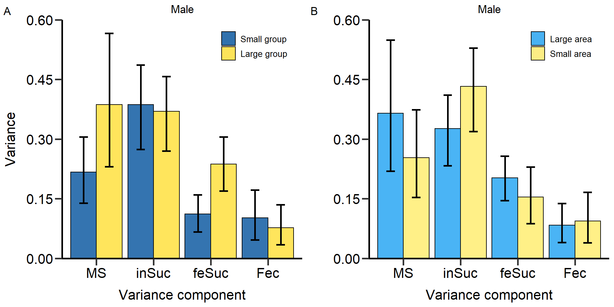
Figure 12: Variance decomposition for males into mating success,
insemination success, fertilization success and fecundity of the
partners. Means and 95% confidence intervals.
Treatement comparisons via permutation test for the variance decomposition of male reproductive success.
Table_VarianceDecomposition_TreatComp_round[c(1:8),] Sex Treatment Variance_component Variance l95.CI u95.CI p-value
1 Male pop mMS -0.169 -0.358 0.007 0.021
2 Male Area mMS 0.111 -0.080 0.322 0.130
3 Male pop InSuc 0.017 -0.125 0.158 0.690
4 Male Area InSuc -0.106 -0.243 0.036 0.021
5 Male pop feSuc -0.125 -0.206 -0.044 0.000
6 Male Area feSuc 0.049 -0.047 0.136 0.072
7 Male pop mFec 0.025 -0.055 0.110 0.271
8 Male Area mFec -0.011 -0.096 0.069 0.638Variance decomposition for females
Figure: Variance decomposition for females
BarPlot_3<- ggplot(PhenVarBoot_Table_pop[9:12,], aes(x=Variance_component, y=Variance, fill=Treatment)) +
scale_y_continuous(limits = c(0, 2.7), breaks = seq(0,2.7,0.5), expand = c(0 ,0)) +
geom_hline(yintercept=0, linetype="solid", color = "black", size=1) +
geom_bar(stat="identity", color="black", position=position_dodge(), alpha=0.8) +
ylab('Variance') +xlab('Variance component') +ggtitle('Female')+labs(tag = "A")+
scale_x_discrete(breaks=waiver(),labels = c('MS','Fec'))+
theme(panel.border = element_blank(),
plot.title = element_text(hjust = 0.5),
panel.background = element_blank(),
panel.grid.major = element_blank(),
panel.grid.minor = element_blank(),
legend.position = c(0.8, 0.9),
plot.tag.position=c(0.01,0.98),
legend.title = element_blank(),
legend.text = element_text(colour="black", size=10),
axis.line.x = element_line(colour = "black", size = 1),
axis.line.y = element_line(colour = "black", size = 1),
axis.text.x = element_text(face="plain", color="black", size=16, angle=0),
axis.text.y = element_text(face="plain", color="black", size=16, angle=0),
axis.title.x = element_text(size=16,face="plain", margin = margin(r=0,10,0,0)),
axis.title.y = element_text(size=16,face="plain", margin = margin(r=10,0,0,0)),
axis.ticks = element_line(size = 1),
axis.ticks.length = unit(.3, "cm")) +
geom_errorbar(aes(ymin=l95.CI, ymax=u95.CI), width=.3,size=1, position=position_dodge(.9)) +
scale_fill_manual(values=c(colorESEB[1],colorESEB[2]),name = "Treatment", labels = c('Small group','Large group'))
BarPlot_4<- ggplot(PhenVarBoot_Table_area[9:12,], aes(x=Variance_component, y=Variance, fill=Treatment)) +
scale_y_continuous(limits = c(0, 2.7), breaks = seq(0,2.7,0.5), expand = c(0 ,0)) +
geom_hline(yintercept=0, linetype="solid", color = "black", size=1) +
geom_bar(stat="identity", color="black", position=position_dodge(), alpha=0.8) +
ylab('') +xlab('Variance component') +ggtitle('Female')+labs(tag = "B")+
scale_x_discrete(breaks=waiver(),labels = c('MS','Fec','cov\n(MS, Fec)'))+
theme(panel.border = element_blank(),
plot.title = element_text(hjust = 0.5),
panel.background = element_blank(),
panel.grid.major = element_blank(),
panel.grid.minor = element_blank(),
legend.position = c(0.8, 0.9),
plot.tag.position=c(0.01,0.98),
legend.title = element_blank(),
legend.text = element_text(colour="black", size=10),
axis.line.x = element_line(colour = "black", size = 1),
axis.line.y = element_line(colour = "black", size = 1),
axis.text.x = element_text(face="plain", color="black", size=16, angle=0),
axis.text.y = element_text(face="plain", color="black", size=16, angle=0),
axis.title.x = element_text(size=16,face="plain", margin = margin(r=0,10,0,0)),
axis.title.y = element_text(size=16,face="plain", margin = margin(r=10,0,0,0)),
axis.ticks = element_line(size = 1),
axis.ticks.length = unit(.3, "cm")) +
geom_errorbar(aes(ymin=l95.CI, ymax=u95.CI), width=.3,size=1, position=position_dodge(.9)) +
scale_fill_manual(values=c(colorESEB2[1],colorESEB2[2]),name = "Treatment", labels = c('Large area','Small area'))
grid.arrange(grobs = list(BarPlot_3,BarPlot_4), nrow = 1,ncol=2, widths=c(2.3, 2.3))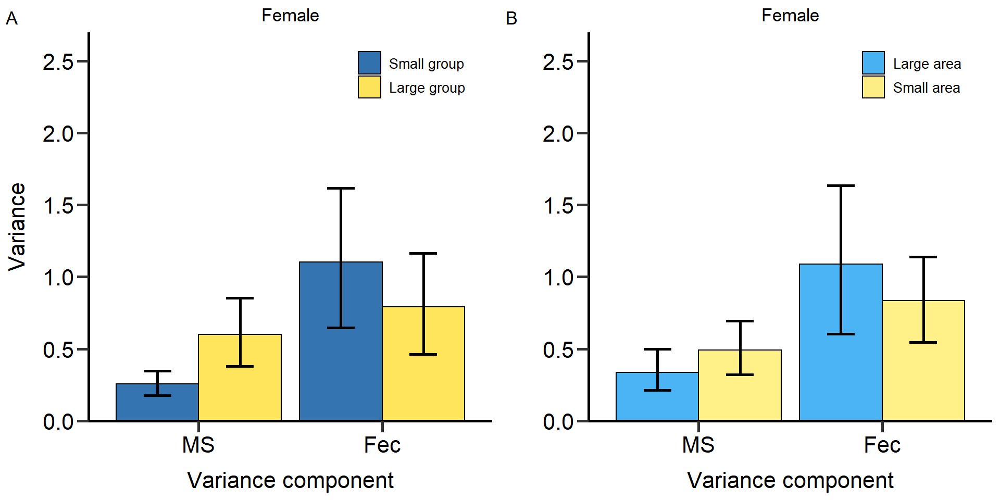
Figure 13: Variance decomposition for females into mating success,
fecundity and their covariance. Means and 95% confidence
intervals.
Treatement comparisons via permutation test for the
variance decomposition of female reproductive success.
Table_VarianceDecomposition_TreatComp_round[c(9:10),] Sex Treatment Variance_component Variance l95.CI u95.CI p-value
9 Female pop fMS -0.341 -0.609 -0.109 0.000
10 Female Area fMS -0.154 -0.399 0.082 0.059Covariances for male variance decomposition
#Compute covariace matrices ####
# Large Area ####
#Covariance mMS x inSuc
x5=as.data.frame(cbind(DB_data_clean_Large_area_M_MS_n,DB_data_clean_Large_area_M_InSuc_n))
c <- function(d, i){
d2 <- d[i,]
return(cov(d2[1],d2[2],use='pairwise.complete.obs'))
}
Large_area_M_cov_mMS_inSuc_bootvar <- boot(x5, c, R=10000)
Large_area_M_cov_mMS_inSuc_bootvar
plot(Large_area_M_cov_mMS_inSuc_bootvar)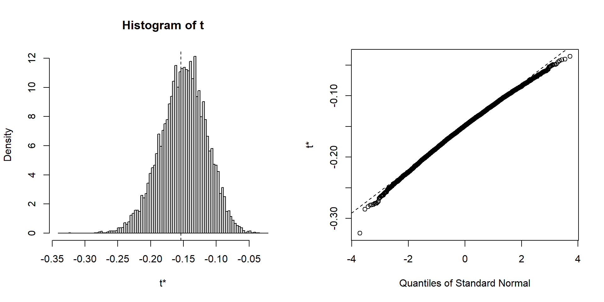
#Covariance mMS x feSuc
x6=as.data.frame(cbind(DB_data_clean_Large_area_M_MS_n,DB_data_clean_Large_area_M_feSuc_n))
Large_area_M_cov_mMS_feSuc_bootvar <- boot(x6, c, R=10000)
Large_area_M_cov_mMS_feSuc_bootvar
plot(Large_area_M_cov_mMS_feSuc_bootvar)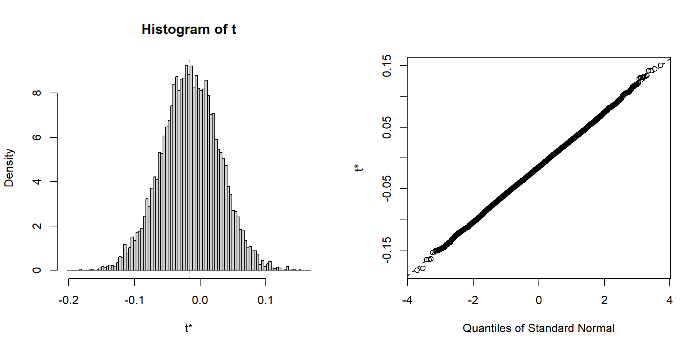
#Covariance mMS x pFec
x7=as.data.frame(cbind(DB_data_clean_Large_area_M_MS_n,DB_data_clean_Large_area_M_pFec_n))
Large_area_M_cov_mMS_pFec_bootvar <- boot(x7, c, R=10000)
Large_area_M_cov_mMS_pFec_bootvar
plot(Large_area_M_cov_mMS_pFec_bootvar)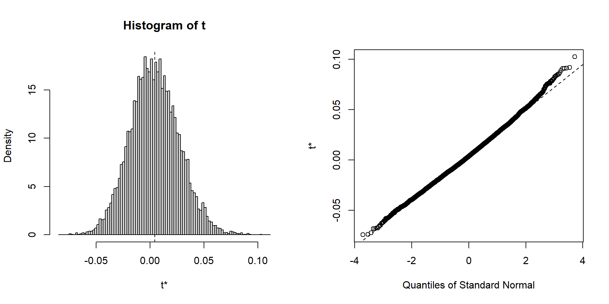
#Covariance inSuc x feSuc
x8=as.data.frame(cbind(DB_data_clean_Large_area_M_InSuc_n,DB_data_clean_Large_area_M_feSuc_n))
Large_area_M_cov_inSuc_feSuc_bootvar <- boot(x8, c, R=10000)
Large_area_M_cov_inSuc_feSuc_bootvar
plot(Large_area_M_cov_inSuc_feSuc_bootvar)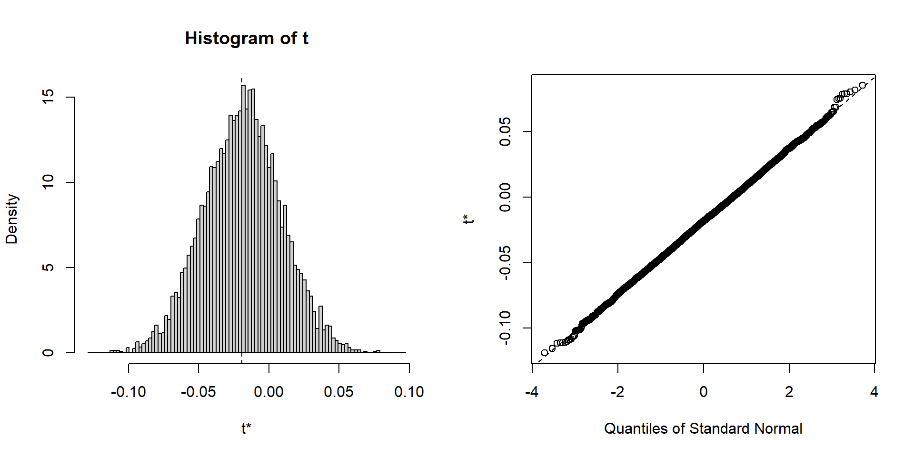
#Covariance inSuc x pFec
x9=as.data.frame(cbind(DB_data_clean_Large_area_M_InSuc_n,DB_data_clean_Large_area_M_pFec_n))
Large_area_M_cov_inSuc_pFec_bootvar <- boot(x9, c, R=10000)
Large_area_M_cov_inSuc_pFec_bootvar
plot(Large_area_M_cov_inSuc_pFec_bootvar)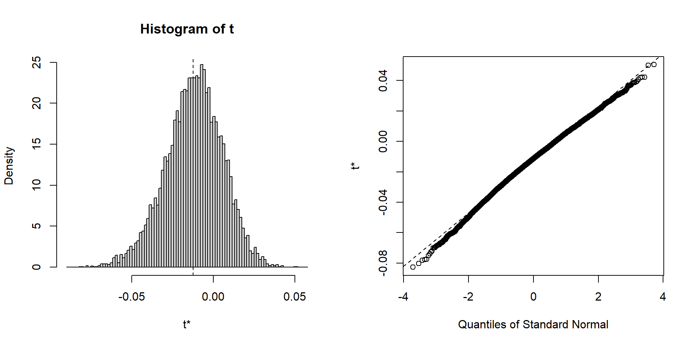
#Covariance feSuc x pFec
x10=as.data.frame(cbind(DB_data_clean_Large_area_M_feSuc_n,DB_data_clean_Large_area_M_pFec_n))
Large_area_M_cov_feSuc_pFec_bootvar <- boot(x10, c, R=10000)
Large_area_M_cov_feSuc_pFec_bootvar
plot(Large_area_M_cov_feSuc_pFec_bootvar)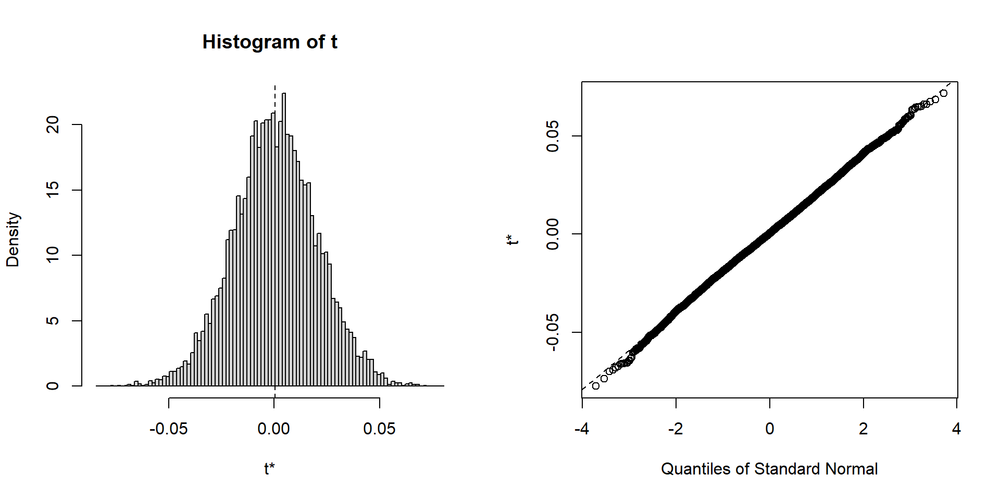
#Covariance fMS x fFec
x13=as.data.frame(cbind(DB_data_clean_Large_area_F_fMS_n,DB_data_clean_Large_area_F_fFec_n))
Large_area_F_cov_fMS_fFec_bootvar <- boot(x13, c, R=10000)
Large_area_F_cov_fMS_fFec_bootvar
plot(Large_area_F_cov_fMS_fFec_bootvar)rm("c")
#Write Table ####
PhenVarBoot_Table_Male_Large_area_cov_mMS_inSuc <- as.data.frame(cbind("Male", "cov_mMS_inSuc", "Large_area", mean(Large_area_M_cov_mMS_inSuc_bootvar$t), quantile(Large_area_M_cov_mMS_inSuc_bootvar$t,.025, names = FALSE), quantile(Large_area_M_cov_mMS_inSuc_bootvar$t,.975, names = FALSE)))
PhenVarBoot_Table_Male_Large_area_cov_mMS_feSuc <- as.data.frame(cbind("Male", "cov_mMS_feSuc", "Large_area", mean(Large_area_M_cov_mMS_feSuc_bootvar$t), quantile(Large_area_M_cov_mMS_feSuc_bootvar$t,.025, names = FALSE), quantile(Large_area_M_cov_mMS_feSuc_bootvar$t,.975, names = FALSE)))
PhenVarBoot_Table_Male_Large_area_cov_mMS_pFec <- as.data.frame(cbind("Male", "cov_mMS_pFec", "Large_area", mean(Large_area_M_cov_mMS_pFec_bootvar$t), quantile(Large_area_M_cov_mMS_pFec_bootvar$t,.025, names = FALSE), quantile(Large_area_M_cov_mMS_pFec_bootvar$t,.975, names = FALSE)))
PhenVarBoot_Table_Male_Large_area_cov_inSuc_feSuc <- as.data.frame(cbind("Male", "cov_inSuc_feSuc", "Large_area", mean(Large_area_M_cov_inSuc_feSuc_bootvar$t), quantile(Large_area_M_cov_inSuc_feSuc_bootvar$t,.025, names = FALSE), quantile(Large_area_M_cov_inSuc_feSuc_bootvar$t,.975, names = FALSE)))
PhenVarBoot_Table_Male_Large_area_cov_inSuc_pFec <- as.data.frame(cbind("Male", "cov_inSuc_pFec", "Large_area", mean(Large_area_M_cov_inSuc_pFec_bootvar$t), quantile(Large_area_M_cov_inSuc_pFec_bootvar$t,.025, names = FALSE), quantile(Large_area_M_cov_inSuc_pFec_bootvar$t,.975, names = FALSE)))
PhenVarBoot_Table_Male_Large_area_cov_feSuc_pFec <- as.data.frame(cbind("Male", "cov_feSuc_pFec", "Large_area", mean(Large_area_M_cov_feSuc_pFec_bootvar$t), quantile(Large_area_M_cov_feSuc_pFec_bootvar$t,.025, names = FALSE), quantile(Large_area_M_cov_feSuc_pFec_bootvar$t,.975, names = FALSE)))
PhenVarBoot_Table_Female_Large_area_cov_fMS_fFec <- as.data.frame(cbind("Female", "cov_fMS_fFec", "Large_area", mean(Large_area_F_cov_fMS_fFec_bootvar$t), quantile(Large_area_F_cov_fMS_fFec_bootvar$t,.025, names = FALSE), quantile(Large_area_F_cov_fMS_fFec_bootvar$t,.975, names = FALSE)))
PhenVarBoot_Cov_Table_Large_area <- as.data.frame(as.matrix(rbind(PhenVarBoot_Table_Male_Large_area_cov_mMS_inSuc,PhenVarBoot_Table_Male_Large_area_cov_mMS_feSuc,
PhenVarBoot_Table_Male_Large_area_cov_mMS_pFec,PhenVarBoot_Table_Male_Large_area_cov_inSuc_feSuc,
PhenVarBoot_Table_Male_Large_area_cov_inSuc_pFec,PhenVarBoot_Table_Male_Large_area_cov_feSuc_pFec,
PhenVarBoot_Table_Female_Large_area_cov_fMS_fFec)),digits=3)
is.table(PhenVarBoot_Cov_Table_Large_area)
colnames(PhenVarBoot_Cov_Table_Large_area)[1] <- "Sex"
colnames(PhenVarBoot_Cov_Table_Large_area)[2] <- "Trait"
colnames(PhenVarBoot_Cov_Table_Large_area)[3] <- "Density"
colnames(PhenVarBoot_Cov_Table_Large_area)[4] <- "Variance"
colnames(PhenVarBoot_Cov_Table_Large_area)[5] <- "l95.CI"
colnames(PhenVarBoot_Cov_Table_Large_area)[6] <- "u95.CI"
PhenVarBoot_Cov_Table_Large_area[,4]=as.numeric(PhenVarBoot_Cov_Table_Large_area[,4])
PhenVarBoot_Cov_Table_Large_area[,5]=as.numeric(PhenVarBoot_Cov_Table_Large_area[,5])
PhenVarBoot_Cov_Table_Large_area[,6]=as.numeric(PhenVarBoot_Cov_Table_Large_area[,6])
PhenVarBoot_Cov_Table_Large_area_round=cbind(PhenVarBoot_Cov_Table_Large_area[,1:3],round(PhenVarBoot_Cov_Table_Large_area[,4:6],digit=3))
# Small Area ####
#Covariance mMS x inSuc
x5=as.data.frame(cbind(DB_data_clean_Small_area_M_MS_n,DB_data_clean_Small_area_M_InSuc_n))
c <- function(d, i){
d2 <- d[i,]
return(cov(d2[1],d2[2],use='pairwise.complete.obs'))
}
Small_area_M_cov_mMS_inSuc_bootvar <- boot(x5, c, R=10000)
Small_area_M_cov_mMS_inSuc_bootvar
plot(Small_area_M_cov_mMS_inSuc_bootvar)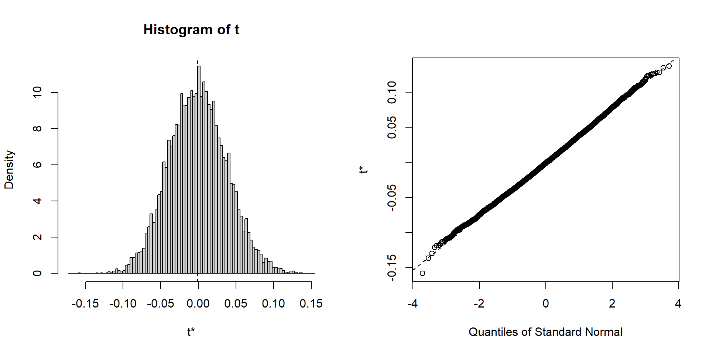
#Covariance mMS x feSuc
x6=as.data.frame(cbind(DB_data_clean_Small_area_M_MS_n,DB_data_clean_Small_area_M_feSuc_n))
Small_area_M_cov_mMS_feSuc_bootvar <- boot(x6, c, R=10000)
Small_area_M_cov_mMS_feSuc_bootvar
plot(Small_area_M_cov_mMS_feSuc_bootvar)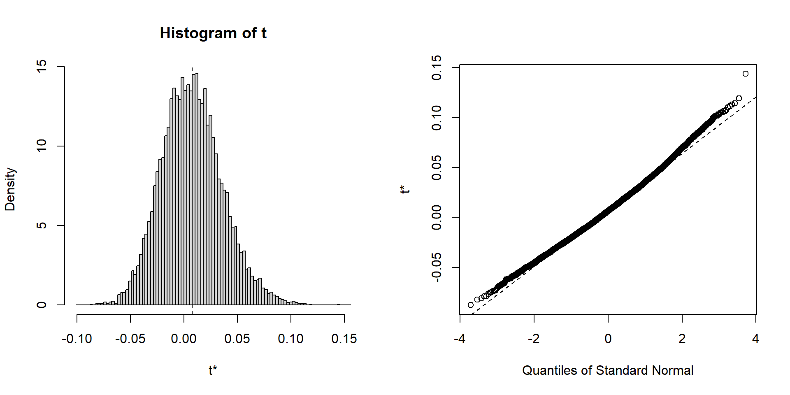
#Covariance mMS x pFec
x7=as.data.frame(cbind(DB_data_clean_Small_area_M_MS_n,DB_data_clean_Small_area_M_pFec_n))
Small_area_M_cov_mMS_pFec_bootvar <- boot(x7, c, R=10000)
Small_area_M_cov_mMS_pFec_bootvar
plot(Small_area_M_cov_mMS_pFec_bootvar)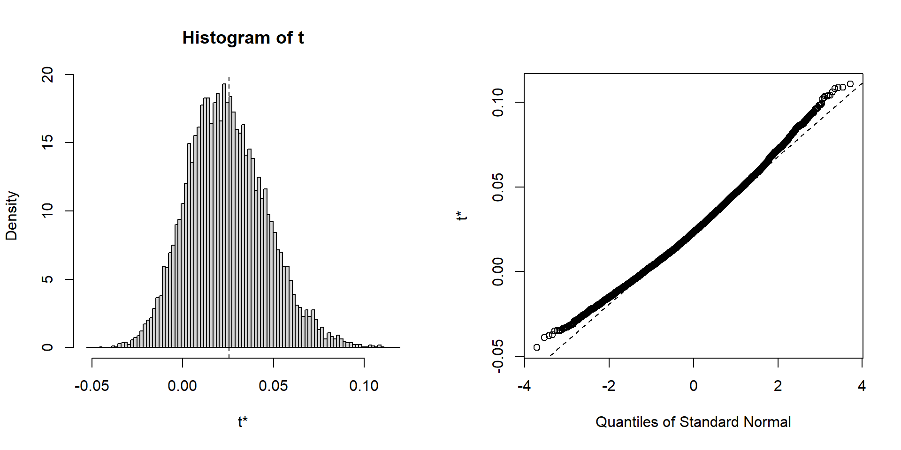
#Covariance inSuc x feSuc
x8=as.data.frame(cbind(DB_data_clean_Small_area_M_InSuc_n,DB_data_clean_Small_area_M_feSuc_n))
Small_area_M_cov_inSuc_feSuc_bootvar <- boot(x8, c, R=10000)
Small_area_M_cov_inSuc_feSuc_bootvar
plot(Small_area_M_cov_inSuc_feSuc_bootvar)#Covariance inSuc x pFec
x9=as.data.frame(cbind(DB_data_clean_Small_area_M_InSuc_n,DB_data_clean_Small_area_M_pFec_n))
Small_area_M_cov_inSuc_pFec_bootvar <- boot(x9, c, R=10000)
Small_area_M_cov_inSuc_pFec_bootvar
plot(Small_area_M_cov_inSuc_pFec_bootvar)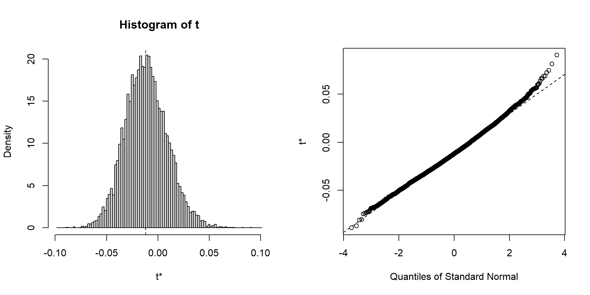
#Covariance feSuc x pFec
x10=as.data.frame(cbind(DB_data_clean_Small_area_M_feSuc_n,DB_data_clean_Small_area_M_pFec_n))
Small_area_M_cov_feSuc_pFec_bootvar <- boot(x10, c, R=10000)
Small_area_M_cov_feSuc_pFec_bootvar
plot(Small_area_M_cov_feSuc_pFec_bootvar)#Covariance fMS x fFec
x13=as.data.frame(cbind(DB_data_clean_Small_area_F_fMS_n,DB_data_clean_Small_area_F_fFec_n))
Small_area_F_cov_fMS_fFec_bootvar <- boot(x13, c, R=10000)
Small_area_F_cov_fMS_fFec_bootvar
plot(Small_area_F_cov_fMS_fFec_bootvar)rm("c")
#Write Table ####
PhenVarBoot_Table_Male_Small_area_cov_mMS_inSuc <- as.data.frame(cbind("Male", "cov_mMS_inSuc", "Small_area", mean(Small_area_M_cov_mMS_inSuc_bootvar$t), quantile(Small_area_M_cov_mMS_inSuc_bootvar$t,.025, names = FALSE), quantile(Small_area_M_cov_mMS_inSuc_bootvar$t,.975, names = FALSE)))
PhenVarBoot_Table_Male_Small_area_cov_mMS_feSuc <- as.data.frame(cbind("Male", "cov_mMS_feSuc", "Small_area", mean(Small_area_M_cov_mMS_feSuc_bootvar$t), quantile(Small_area_M_cov_mMS_feSuc_bootvar$t,.025, names = FALSE), quantile(Small_area_M_cov_mMS_feSuc_bootvar$t,.975, names = FALSE)))
PhenVarBoot_Table_Male_Small_area_cov_mMS_pFec <- as.data.frame(cbind("Male", "cov_mMS_pFec", "Small_area", mean(Small_area_M_cov_mMS_pFec_bootvar$t), quantile(Small_area_M_cov_mMS_pFec_bootvar$t,.025, names = FALSE), quantile(Small_area_M_cov_mMS_pFec_bootvar$t,.975, names = FALSE)))
PhenVarBoot_Table_Male_Small_area_cov_inSuc_feSuc <- as.data.frame(cbind("Male", "cov_inSuc_feSuc", "Small_area", mean(Small_area_M_cov_inSuc_feSuc_bootvar$t), quantile(Small_area_M_cov_inSuc_feSuc_bootvar$t,.025, names = FALSE), quantile(Small_area_M_cov_inSuc_feSuc_bootvar$t,.975, names = FALSE)))
PhenVarBoot_Table_Male_Small_area_cov_inSuc_pFec <- as.data.frame(cbind("Male", "cov_inSuc_pFec", "Small_area", mean(Small_area_M_cov_inSuc_pFec_bootvar$t), quantile(Small_area_M_cov_inSuc_pFec_bootvar$t,.025, names = FALSE), quantile(Small_area_M_cov_inSuc_pFec_bootvar$t,.975, names = FALSE)))
PhenVarBoot_Table_Male_Small_area_cov_feSuc_pFec <- as.data.frame(cbind("Male", "cov_feSuc_pFec", "Small_area", mean(Small_area_M_cov_feSuc_pFec_bootvar$t), quantile(Small_area_M_cov_feSuc_pFec_bootvar$t,.025, names = FALSE), quantile(Small_area_M_cov_feSuc_pFec_bootvar$t,.975, names = FALSE)))
PhenVarBoot_Table_Female_Small_area_cov_fMS_fFec <- as.data.frame(cbind("Female", "cov_fMS_fFec", "Small_area", mean(Small_area_F_cov_fMS_fFec_bootvar$t), quantile(Small_area_F_cov_fMS_fFec_bootvar$t,.025, names = FALSE), quantile(Small_area_F_cov_fMS_fFec_bootvar$t,.975, names = FALSE)))
PhenVarBoot_Cov_Table_Small_area <- as.data.frame(as.matrix(rbind(PhenVarBoot_Table_Male_Small_area_cov_mMS_inSuc,PhenVarBoot_Table_Male_Small_area_cov_mMS_feSuc,
PhenVarBoot_Table_Male_Small_area_cov_mMS_pFec,PhenVarBoot_Table_Male_Small_area_cov_inSuc_feSuc,
PhenVarBoot_Table_Male_Small_area_cov_inSuc_pFec,PhenVarBoot_Table_Male_Small_area_cov_feSuc_pFec,
PhenVarBoot_Table_Female_Small_area_cov_fMS_fFec)),digits=3)
is.table(PhenVarBoot_Cov_Table_Small_area)
colnames(PhenVarBoot_Cov_Table_Small_area)[1] <- "Sex"
colnames(PhenVarBoot_Cov_Table_Small_area)[2] <- "Trait"
colnames(PhenVarBoot_Cov_Table_Small_area)[3] <- "Density"
colnames(PhenVarBoot_Cov_Table_Small_area)[4] <- "Variance"
colnames(PhenVarBoot_Cov_Table_Small_area)[5] <- "l95.CI"
colnames(PhenVarBoot_Cov_Table_Small_area)[6] <- "u95.CI"
PhenVarBoot_Cov_Table_Small_area[,4]=as.numeric(PhenVarBoot_Cov_Table_Small_area[,4])
PhenVarBoot_Cov_Table_Small_area[,5]=as.numeric(PhenVarBoot_Cov_Table_Small_area[,5])
PhenVarBoot_Cov_Table_Small_area[,6]=as.numeric(PhenVarBoot_Cov_Table_Small_area[,6])
PhenVarBoot_Cov_Table_Small_area_round=cbind(PhenVarBoot_Cov_Table_Small_area[,1:3],round(PhenVarBoot_Cov_Table_Small_area[,4:6],digit=3))
# Small group ####
#Covariance mMS x inSuc
x5=as.data.frame(cbind(DB_data_clean_Small_pop_M_MS_n,DB_data_clean_Small_pop_M_InSuc_n))
c <- function(d, i){
d2 <- d[i,]
return(cov(d2[1],d2[2],use='pairwise.complete.obs'))
}
Small_pop_M_cov_mMS_inSuc_bootvar <- boot(x5, c, R=10000)
Small_pop_M_cov_mMS_inSuc_bootvar
plot(Small_pop_M_cov_mMS_inSuc_bootvar)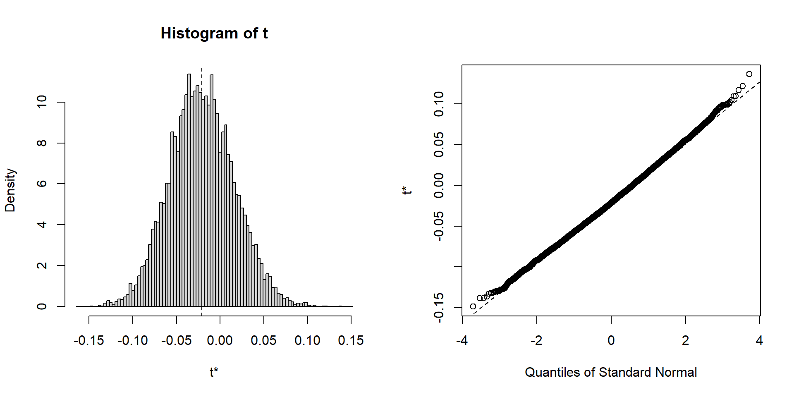
#Covariance mMS x feSuc
x6=as.data.frame(cbind(DB_data_clean_Small_pop_M_MS_n,DB_data_clean_Small_pop_M_feSuc_n))
Small_pop_M_cov_mMS_feSuc_bootvar <- boot(x6, c, R=10000)
Small_pop_M_cov_mMS_feSuc_bootvar
plot(Small_pop_M_cov_mMS_feSuc_bootvar)#Covariance mMS x pFec
x7=as.data.frame(cbind(DB_data_clean_Small_pop_M_MS_n,DB_data_clean_Small_pop_M_pFec_n))
Small_pop_M_cov_mMS_pFec_bootvar <- boot(x7, c, R=10000)
Small_pop_M_cov_mMS_pFec_bootvar
plot(Small_pop_M_cov_mMS_pFec_bootvar)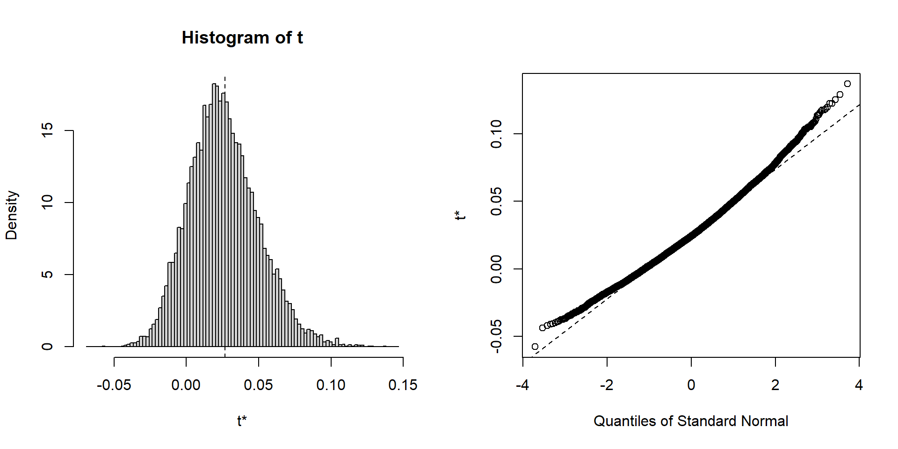
#Covariance inSuc x feSuc
x8=as.data.frame(cbind(DB_data_clean_Small_pop_M_InSuc_n,DB_data_clean_Small_pop_M_feSuc_n))
Small_pop_M_cov_inSuc_feSuc_bootvar <- boot(x8, c, R=10000)
Small_pop_M_cov_inSuc_feSuc_bootvar
plot(Small_pop_M_cov_inSuc_feSuc_bootvar)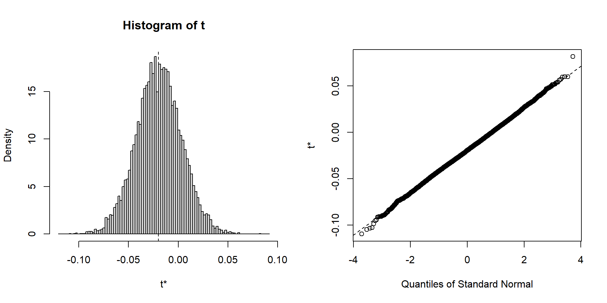
#Covariance inSuc x pFec
x9=as.data.frame(cbind(DB_data_clean_Small_pop_M_InSuc_n,DB_data_clean_Small_pop_M_pFec_n))
Small_pop_M_cov_inSuc_pFec_bootvar <- boot(x9, c, R=10000)
Small_pop_M_cov_inSuc_pFec_bootvar
plot(Small_pop_M_cov_inSuc_pFec_bootvar)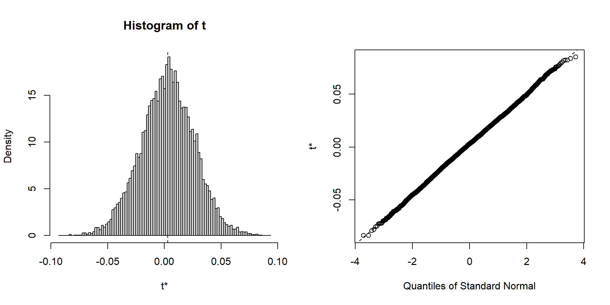
#Covariance feSuc x pFec
x10=as.data.frame(cbind(DB_data_clean_Small_pop_M_feSuc_n,DB_data_clean_Small_pop_M_pFec_n))
Small_pop_M_cov_feSuc_pFec_bootvar <- boot(x10, c, R=10000)
Small_pop_M_cov_feSuc_pFec_bootvar
plot(Small_pop_M_cov_feSuc_pFec_bootvar)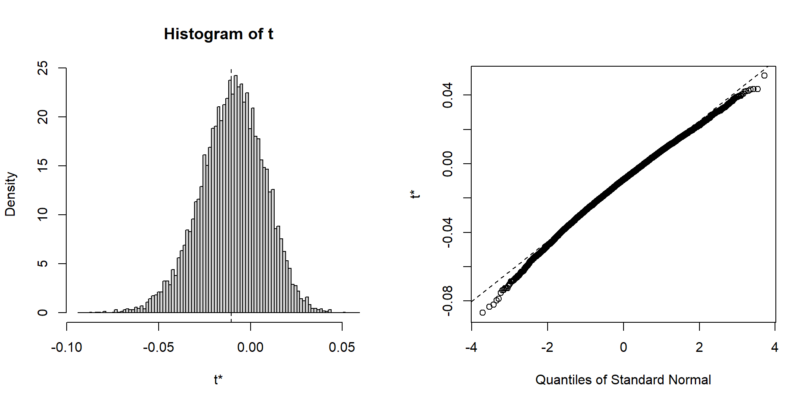
#Covariance fMS x fFec
x13=as.data.frame(cbind(DB_data_clean_Small_pop_F_fMS_n,DB_data_clean_Small_pop_F_fFec_n))
Small_pop_F_cov_fMS_fFec_bootvar <- boot(x13, c, R=10000)
Small_pop_F_cov_fMS_fFec_bootvar
plot(Small_pop_F_cov_fMS_fFec_bootvar)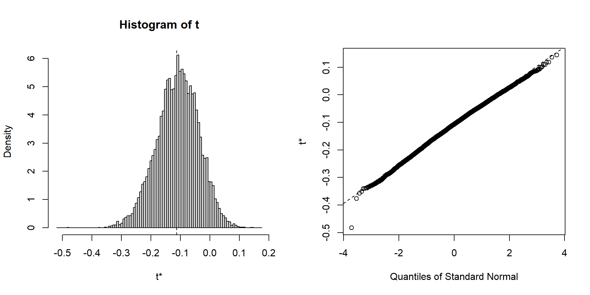
rm("c")
#Write Table ####
PhenVarBoot_Table_Male_Small_pop_cov_mMS_inSuc <- as.data.frame(cbind("Male", "cov_mMS_inSuc", "Small_pop", mean(Small_pop_M_cov_mMS_inSuc_bootvar$t), quantile(Small_pop_M_cov_mMS_inSuc_bootvar$t,.025, names = FALSE), quantile(Small_pop_M_cov_mMS_inSuc_bootvar$t,.975, names = FALSE)))
PhenVarBoot_Table_Male_Small_pop_cov_mMS_feSuc <- as.data.frame(cbind("Male", "cov_mMS_feSuc", "Small_pop", mean(Small_pop_M_cov_mMS_feSuc_bootvar$t), quantile(Small_pop_M_cov_mMS_feSuc_bootvar$t,.025, names = FALSE), quantile(Small_pop_M_cov_mMS_feSuc_bootvar$t,.975, names = FALSE)))
PhenVarBoot_Table_Male_Small_pop_cov_mMS_pFec <- as.data.frame(cbind("Male", "cov_mMS_pFec", "Small_pop", mean(Small_pop_M_cov_mMS_pFec_bootvar$t), quantile(Small_pop_M_cov_mMS_pFec_bootvar$t,.025, names = FALSE), quantile(Small_pop_M_cov_mMS_pFec_bootvar$t,.975, names = FALSE)))
PhenVarBoot_Table_Male_Small_pop_cov_inSuc_feSuc <- as.data.frame(cbind("Male", "cov_inSuc_feSuc", "Small_pop", mean(Small_pop_M_cov_inSuc_feSuc_bootvar$t), quantile(Small_pop_M_cov_inSuc_feSuc_bootvar$t,.025, names = FALSE), quantile(Small_pop_M_cov_inSuc_feSuc_bootvar$t,.975, names = FALSE)))
PhenVarBoot_Table_Male_Small_pop_cov_inSuc_pFec <- as.data.frame(cbind("Male", "cov_inSuc_pFec", "Small_pop", mean(Small_pop_M_cov_inSuc_pFec_bootvar$t), quantile(Small_pop_M_cov_inSuc_pFec_bootvar$t,.025, names = FALSE), quantile(Small_pop_M_cov_inSuc_pFec_bootvar$t,.975, names = FALSE)))
PhenVarBoot_Table_Male_Small_pop_cov_feSuc_pFec <- as.data.frame(cbind("Male", "cov_feSuc_pFec", "Small_pop", mean(Small_pop_M_cov_feSuc_pFec_bootvar$t), quantile(Small_pop_M_cov_feSuc_pFec_bootvar$t,.025, names = FALSE), quantile(Small_pop_M_cov_feSuc_pFec_bootvar$t,.975, names = FALSE)))
PhenVarBoot_Table_Female_Small_pop_cov_fMS_fFec <- as.data.frame(cbind("Female", "cov_fMS_fFec", "Small_pop", mean(Small_pop_F_cov_fMS_fFec_bootvar$t), quantile(Small_pop_F_cov_fMS_fFec_bootvar$t,.025, names = FALSE), quantile(Small_pop_F_cov_fMS_fFec_bootvar$t,.975, names = FALSE)))
PhenVarBoot_Cov_Table_Small_pop <- as.data.frame(as.matrix(rbind(PhenVarBoot_Table_Male_Small_pop_cov_mMS_inSuc,PhenVarBoot_Table_Male_Small_pop_cov_mMS_feSuc,
PhenVarBoot_Table_Male_Small_pop_cov_mMS_pFec,PhenVarBoot_Table_Male_Small_pop_cov_inSuc_feSuc,
PhenVarBoot_Table_Male_Small_pop_cov_inSuc_pFec,PhenVarBoot_Table_Male_Small_pop_cov_feSuc_pFec,
PhenVarBoot_Table_Female_Small_pop_cov_fMS_fFec)),digits=3)
is.table(PhenVarBoot_Cov_Table_Small_pop)
colnames(PhenVarBoot_Cov_Table_Small_pop)[1] <- "Sex"
colnames(PhenVarBoot_Cov_Table_Small_pop)[2] <- "Trait"
colnames(PhenVarBoot_Cov_Table_Small_pop)[3] <- "Density"
colnames(PhenVarBoot_Cov_Table_Small_pop)[4] <- "Variance"
colnames(PhenVarBoot_Cov_Table_Small_pop)[5] <- "l95.CI"
colnames(PhenVarBoot_Cov_Table_Small_pop)[6] <- "u95.CI"
PhenVarBoot_Cov_Table_Small_pop[,4]=as.numeric(PhenVarBoot_Cov_Table_Small_pop[,4])
PhenVarBoot_Cov_Table_Small_pop[,5]=as.numeric(PhenVarBoot_Cov_Table_Small_pop[,5])
PhenVarBoot_Cov_Table_Small_pop[,6]=as.numeric(PhenVarBoot_Cov_Table_Small_pop[,6])
PhenVarBoot_Cov_Table_Small_pop_round=cbind(PhenVarBoot_Cov_Table_Small_pop[,1:3],round(PhenVarBoot_Cov_Table_Small_pop[,4:6],digit=3))
# Large group ####
#Covariance mMS x inSuc
x5=as.data.frame(cbind(DB_data_clean_Large_pop_M_MS_n,DB_data_clean_Large_pop_M_InSuc_n))
c <- function(d, i){
d2 <- d[i,]
return(cov(d2[1],d2[2],use='pairwise.complete.obs'))
}
Large_pop_M_cov_mMS_inSuc_bootvar <- boot(x5, c, R=10000)
Large_pop_M_cov_mMS_inSuc_bootvar
plot(Large_pop_M_cov_mMS_inSuc_bootvar)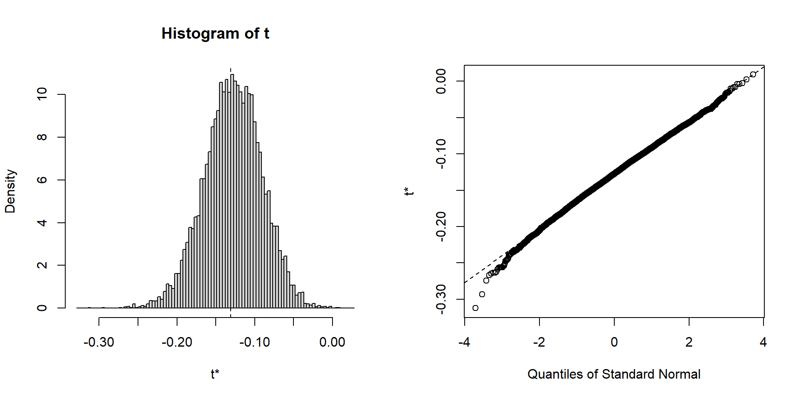
#Covariance mMS x feSuc
x6=as.data.frame(cbind(DB_data_clean_Large_pop_M_MS_n,DB_data_clean_Large_pop_M_feSuc_n))
Large_pop_M_cov_mMS_feSuc_bootvar <- boot(x6, c, R=10000)
Large_pop_M_cov_mMS_feSuc_bootvar
plot(Large_pop_M_cov_mMS_feSuc_bootvar)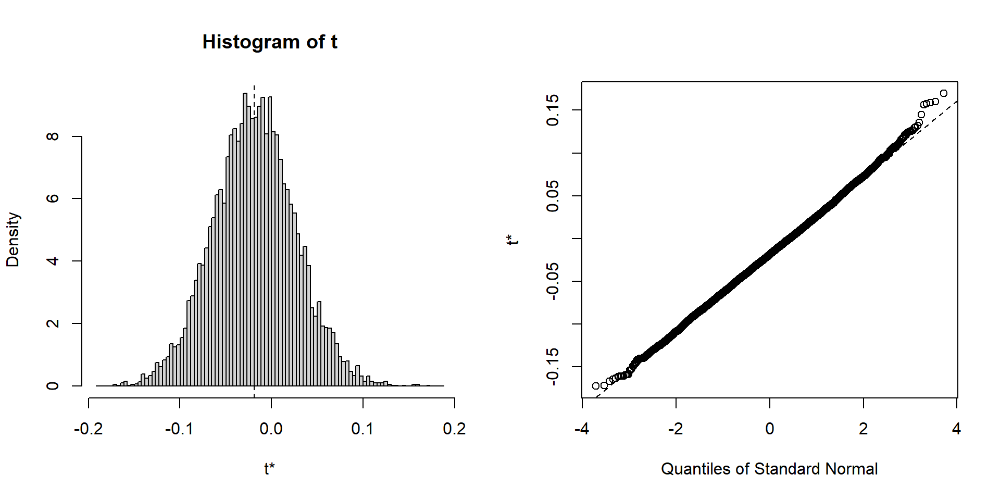
#Covariance mMS x pFec
x7=as.data.frame(cbind(DB_data_clean_Large_pop_M_MS_n,DB_data_clean_Large_pop_M_pFec_n))
Large_pop_M_cov_mMS_pFec_bootvar <- boot(x7, c, R=10000)
Large_pop_M_cov_mMS_pFec_bootvar
plot(Large_pop_M_cov_mMS_pFec_bootvar)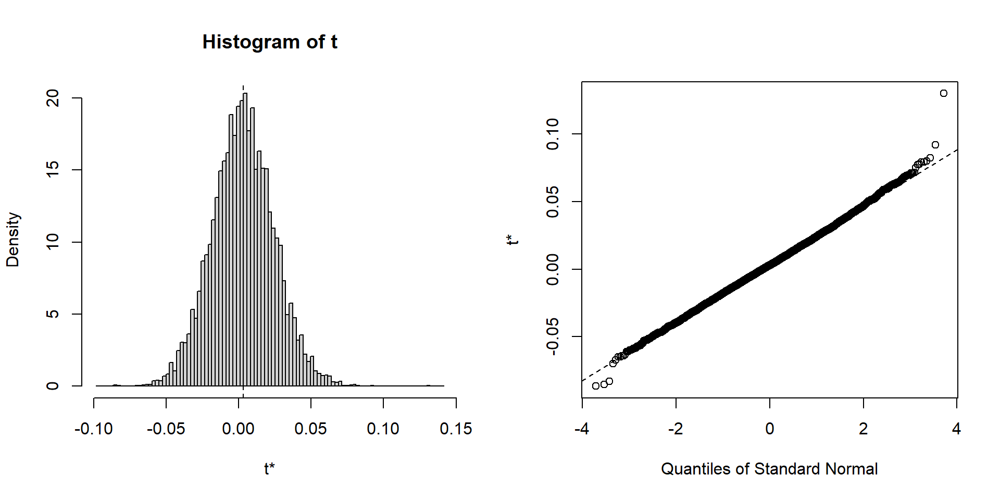
#Covariance inSuc x feSuc
x8=as.data.frame(cbind(DB_data_clean_Large_pop_M_InSuc_n,DB_data_clean_Large_pop_M_feSuc_n))
Large_pop_M_cov_inSuc_feSuc_bootvar <- boot(x8, c, R=10000)
Large_pop_M_cov_inSuc_feSuc_bootvar
plot(Large_pop_M_cov_inSuc_feSuc_bootvar)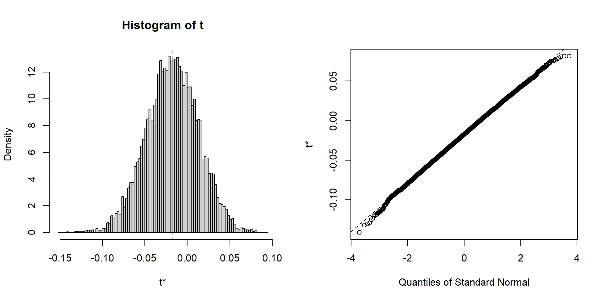
#Covariance inSuc x pFec
x9=as.data.frame(cbind(DB_data_clean_Large_pop_M_InSuc_n,DB_data_clean_Large_pop_M_pFec_n))
Large_pop_M_cov_inSuc_pFec_bootvar <- boot(x9, c, R=10000)
Large_pop_M_cov_inSuc_pFec_bootvar
plot(Large_pop_M_cov_inSuc_pFec_bootvar)#Covariance feSuc x pFec
x10=as.data.frame(cbind(DB_data_clean_Large_pop_M_feSuc_n,DB_data_clean_Large_pop_M_pFec_n))
Large_pop_M_cov_feSuc_pFec_bootvar <- boot(x10, c, R=10000)
Large_pop_M_cov_feSuc_pFec_bootvar
plot(Large_pop_M_cov_feSuc_pFec_bootvar)#Covariance fMS x fFec
x13=as.data.frame(cbind(DB_data_clean_Large_pop_F_fMS_n,DB_data_clean_Large_pop_F_fFec_n))
Large_pop_F_cov_fMS_fFec_bootvar <- boot(x13, c, R=10000)
Large_pop_F_cov_fMS_fFec_bootvar
plot(Large_pop_F_cov_fMS_fFec_bootvar)rm("c")
#Write Table ####
PhenVarBoot_Table_Male_Large_pop_cov_mMS_inSuc <- as.data.frame(cbind("Male", "cov_mMS_inSuc", "Large_pop", mean(Large_pop_M_cov_mMS_inSuc_bootvar$t), quantile(Large_pop_M_cov_mMS_inSuc_bootvar$t,.025, names = FALSE), quantile(Large_pop_M_cov_mMS_inSuc_bootvar$t,.975, names = FALSE)))
PhenVarBoot_Table_Male_Large_pop_cov_mMS_feSuc <- as.data.frame(cbind("Male", "cov_mMS_feSuc", "Large_pop", mean(Large_pop_M_cov_mMS_feSuc_bootvar$t), quantile(Large_pop_M_cov_mMS_feSuc_bootvar$t,.025, names = FALSE), quantile(Large_pop_M_cov_mMS_feSuc_bootvar$t,.975, names = FALSE)))
PhenVarBoot_Table_Male_Large_pop_cov_mMS_pFec <- as.data.frame(cbind("Male", "cov_mMS_pFec", "Large_pop", mean(Large_pop_M_cov_mMS_pFec_bootvar$t), quantile(Large_pop_M_cov_mMS_pFec_bootvar$t,.025, names = FALSE), quantile(Large_pop_M_cov_mMS_pFec_bootvar$t,.975, names = FALSE)))
PhenVarBoot_Table_Male_Large_pop_cov_inSuc_feSuc <- as.data.frame(cbind("Male", "cov_inSuc_feSuc", "Large_pop", mean(Large_pop_M_cov_inSuc_feSuc_bootvar$t), quantile(Large_pop_M_cov_inSuc_feSuc_bootvar$t,.025, names = FALSE), quantile(Large_pop_M_cov_inSuc_feSuc_bootvar$t,.975, names = FALSE)))
PhenVarBoot_Table_Male_Large_pop_cov_inSuc_pFec <- as.data.frame(cbind("Male", "cov_inSuc_pFec", "Large_pop", mean(Large_pop_M_cov_inSuc_pFec_bootvar$t), quantile(Large_pop_M_cov_inSuc_pFec_bootvar$t,.025, names = FALSE), quantile(Large_pop_M_cov_inSuc_pFec_bootvar$t,.975, names = FALSE)))
PhenVarBoot_Table_Male_Large_pop_cov_feSuc_pFec <- as.data.frame(cbind("Male", "cov_feSuc_pFec", "Large_pop", mean(Large_pop_M_cov_feSuc_pFec_bootvar$t), quantile(Large_pop_M_cov_feSuc_pFec_bootvar$t,.025, names = FALSE), quantile(Large_pop_M_cov_feSuc_pFec_bootvar$t,.975, names = FALSE)))
PhenVarBoot_Table_Female_Large_pop_cov_fMS_fFec <- as.data.frame(cbind("Female", "cov_fMS_fFec", "Large_pop", mean(Large_pop_F_cov_fMS_fFec_bootvar$t), quantile(Large_pop_F_cov_fMS_fFec_bootvar$t,.025, names = FALSE), quantile(Large_pop_F_cov_fMS_fFec_bootvar$t,.975, names = FALSE)))
PhenVarBoot_Cov_Table_Large_pop <- as.data.frame(as.matrix(rbind(PhenVarBoot_Table_Male_Large_pop_cov_mMS_inSuc,PhenVarBoot_Table_Male_Large_pop_cov_mMS_feSuc,
PhenVarBoot_Table_Male_Large_pop_cov_mMS_pFec,PhenVarBoot_Table_Male_Large_pop_cov_inSuc_feSuc,
PhenVarBoot_Table_Male_Large_pop_cov_inSuc_pFec,PhenVarBoot_Table_Male_Large_pop_cov_feSuc_pFec,
PhenVarBoot_Table_Female_Large_pop_cov_fMS_fFec)),digits=3)
is.table(PhenVarBoot_Cov_Table_Large_pop)
colnames(PhenVarBoot_Cov_Table_Large_pop)[1] <- "Sex"
colnames(PhenVarBoot_Cov_Table_Large_pop)[2] <- "Trait"
colnames(PhenVarBoot_Cov_Table_Large_pop)[3] <- "Density"
colnames(PhenVarBoot_Cov_Table_Large_pop)[4] <- "Variance"
colnames(PhenVarBoot_Cov_Table_Large_pop)[5] <- "l95.CI"
colnames(PhenVarBoot_Cov_Table_Large_pop)[6] <- "u95.CI"
PhenVarBoot_Cov_Table_Large_pop[,4]=as.numeric(PhenVarBoot_Cov_Table_Large_pop[,4])
PhenVarBoot_Cov_Table_Large_pop[,5]=as.numeric(PhenVarBoot_Cov_Table_Large_pop[,5])
PhenVarBoot_Cov_Table_Large_pop[,6]=as.numeric(PhenVarBoot_Cov_Table_Large_pop[,6])
PhenVarBoot_Cov_Table_Large_pop_round=cbind(PhenVarBoot_Cov_Table_Large_pop[,1:3],round(PhenVarBoot_Cov_Table_Large_pop[,4:6],digit=3))
#Figure ####
PhenVarBoot_Table_plot_cov <- as.data.frame(as.matrix(rbind( PhenVarBoot_Table_Male_Small_pop_cov_mMS_inSuc,PhenVarBoot_Table_Male_Large_pop_cov_mMS_inSuc,
PhenVarBoot_Table_Male_Large_area_cov_mMS_inSuc,PhenVarBoot_Table_Male_Small_area_cov_mMS_inSuc,
PhenVarBoot_Table_Male_Small_pop_cov_mMS_feSuc,PhenVarBoot_Table_Male_Large_pop_cov_mMS_feSuc,
PhenVarBoot_Table_Male_Large_area_cov_mMS_feSuc,PhenVarBoot_Table_Male_Small_area_cov_mMS_feSuc,
PhenVarBoot_Table_Male_Small_pop_cov_mMS_pFec,PhenVarBoot_Table_Male_Large_pop_cov_mMS_pFec,
PhenVarBoot_Table_Male_Large_area_cov_mMS_pFec,PhenVarBoot_Table_Male_Small_area_cov_mMS_pFec,
PhenVarBoot_Table_Male_Small_pop_cov_inSuc_feSuc,PhenVarBoot_Table_Male_Large_pop_cov_inSuc_feSuc,
PhenVarBoot_Table_Male_Large_area_cov_inSuc_feSuc,PhenVarBoot_Table_Male_Small_area_cov_inSuc_feSuc,
PhenVarBoot_Table_Male_Small_pop_cov_inSuc_pFec,PhenVarBoot_Table_Male_Large_pop_cov_inSuc_pFec,
PhenVarBoot_Table_Male_Large_area_cov_inSuc_pFec,PhenVarBoot_Table_Male_Small_area_cov_inSuc_pFec,
PhenVarBoot_Table_Male_Small_pop_cov_feSuc_pFec,PhenVarBoot_Table_Male_Large_pop_cov_feSuc_pFec,
PhenVarBoot_Table_Male_Large_area_cov_feSuc_pFec,PhenVarBoot_Table_Male_Small_area_cov_feSuc_pFec,
PhenVarBoot_Table_Female_Small_pop_cov_fMS_fFec,PhenVarBoot_Table_Female_Large_pop_cov_fMS_fFec,
PhenVarBoot_Table_Female_Large_area_cov_fMS_fFec,PhenVarBoot_Table_Female_Small_area_cov_fMS_fFec
)))
is.table(PhenVarBoot_Table_plot_cov)
colnames(PhenVarBoot_Table_plot_cov)[1] <- "Sex"
colnames(PhenVarBoot_Table_plot_cov)[2] <- "Variance_component"
colnames(PhenVarBoot_Table_plot_cov)[3] <- "Treatment"
colnames(PhenVarBoot_Table_plot_cov)[4] <- "Variance"
colnames(PhenVarBoot_Table_plot_cov)[5] <- "l95.CI"
colnames(PhenVarBoot_Table_plot_cov)[6] <- "u95.CI"
PhenVarBoot_Table_plot_cov[,4]=as.numeric(PhenVarBoot_Table_plot_cov[,4])
PhenVarBoot_Table_plot_cov[,5]=as.numeric(PhenVarBoot_Table_plot_cov[,5])
PhenVarBoot_Table_plot_cov[,6]=as.numeric(PhenVarBoot_Table_plot_cov[,6])
PhenVarBoot_Table_plot_cov_round=cbind(PhenVarBoot_Table_plot_cov[,1:3],round(PhenVarBoot_Table_plot_cov[,4:6],digit=3))
PhenVarBoot_Table_plot_cov$Treatment<- factor(PhenVarBoot_Table_plot_cov$Treatment, levels=c("Small_pop",'Large_pop','Large_area','Small_area'))
PhenVarBoot_Table_plot_cov$Variance_component <- factor(PhenVarBoot_Table_plot_cov$Variance_component, levels=c("cov_mMS_inSuc",'cov_mMS_feSuc','cov_mMS_pFec','cov_inSuc_feSuc','cov_inSuc_pFec','cov_feSuc_pFec','cov_fMS_fFec'))
PhenVarBoot_Table_plot_cov_area=PhenVarBoot_Table_plot_cov[PhenVarBoot_Table_plot_cov$Treatment!='Large_pop',]
PhenVarBoot_Table_plot_cov_area=PhenVarBoot_Table_plot_cov_area[PhenVarBoot_Table_plot_cov_area$Treatment!='Small_pop',]
PhenVarBoot_Table_plot_cov_pop=PhenVarBoot_Table_plot_cov[PhenVarBoot_Table_plot_cov$Treatment!='Large_area',]
PhenVarBoot_Table_plot_cov_pop=PhenVarBoot_Table_plot_cov_pop[PhenVarBoot_Table_plot_cov_pop$Treatment!='Small_area',]Figure: Covariances of variance decomposition for females
BarPlot_1<- ggplot(PhenVarBoot_Table_plot_cov_pop[1:12,], aes(x=Variance_component, y=Variance, fill=Treatment)) +
scale_y_continuous(limits = c(-0.25, 0.2), breaks = seq(-0.25,0.2,0.1), expand = c(0 ,0)) +
geom_hline(yintercept=0, linetype="solid", color = "black", size=1) +
geom_bar(stat="identity", color="black", position=position_dodge(), alpha=0.8) +
geom_errorbar(aes(ymin=l95.CI, ymax=u95.CI), width=.3,size=1, position=position_dodge(.9)) +
ylab('Variance') +xlab('Variance component') +ggtitle('Male')+labs(tag = "A")+
scale_x_discrete(breaks=waiver(),labels = c('cov\n(MS, inSuc)','cov\n(MS, feSuc)','cov\n(MS, Fec)','cov\n(inSuc, feSuc)','cov\n(inSuc,Fec)','cov\n(feSuc, Fec)'))+
theme(panel.border = element_blank(),
plot.title = element_text(hjust = 0.5),
panel.background = element_blank(),
panel.grid.major = element_blank(),
panel.grid.minor = element_blank(),
plot.tag.position=c(0.01,0.98),
legend.position = c(0.8, 0.9),
legend.title = element_blank(),
legend.text = element_text(colour="black", size=10),
axis.line.x = element_line(colour = "black", size = 1),
axis.line.y = element_line(colour = "black", size = 1),
axis.text.x = element_text(face="plain", color="black", size=16, angle=0),
axis.text.y = element_text(face="plain", color="black", size=16, angle=0),
axis.title.x = element_text(size=16,face="plain", margin = margin(r=0,10,0,0)),
axis.title.y = element_text(size=16,face="plain", margin = margin(r=10,0,0,0)),
axis.ticks = element_line(size = 1),
axis.ticks.length = unit(.3, "cm"))+
scale_fill_manual(values=c(colorESEB[1],colorESEB[2]),name = "Treatment", labels = c('Small group','Large group'))
BarPlot_2<-ggplot(PhenVarBoot_Table_plot_cov_area[1:12,], aes(x=Variance_component, y=Variance, fill=Treatment)) +
scale_y_continuous(limits = c(-0.25, 0.2), breaks = seq(-0.25,0.2,0.1), expand = c(0 ,0)) +
geom_hline(yintercept=0, linetype="solid", color = "black", size=1) +
geom_bar(stat="identity", color="black", position=position_dodge(), alpha=0.8) +
geom_errorbar(aes(ymin=l95.CI, ymax=u95.CI), width=.3,size=1, position=position_dodge(.9)) +
ylab('') +xlab('Variance component') +ggtitle('Male')+labs(tag = "B")+
scale_x_discrete(breaks=waiver(),labels = c('cov\n(MS, inSuc)','cov\n(MS, feSuc)','cov\n(MS, Fec)','cov\n(inSuc, feSuc)','cov\n(inSuc,Fec)','cov\n(feSuc, Fec)'))+
scale_fill_manual(values=c(colorESEB2[1],colorESEB2[2]),name = "Treatment", labels = c('Large area','Small area'))+
theme(panel.border = element_blank(),
plot.title = element_text(hjust = 0.5),
panel.background = element_blank(),
panel.grid.major = element_blank(),
panel.grid.minor = element_blank(),
legend.position = c(0.8, 0.9),
plot.tag.position=c(0.01,0.98),
legend.title = element_blank(),
legend.text = element_text(colour="black", size=10),
axis.line.x = element_line(colour = "black", size = 1),
axis.line.y = element_line(colour = "black", size = 1),
axis.text.x = element_text(face="plain", color="black", size=16, angle=0),
axis.text.y = element_text(face="plain", color="black", size=16, angle=0),
axis.title.x = element_text(size=16,face="plain", margin = margin(r=0,10,0,0)),
axis.title.y = element_text(size=16,face="plain", margin = margin(r=10,0,0,0)),
axis.ticks = element_line(size = 1),
axis.ticks.length = unit(.3, "cm"))
grid.arrange(grobs = list(BarPlot_3,BarPlot_4), nrow = 1,ncol=2, widths=c(2.3, 2.3))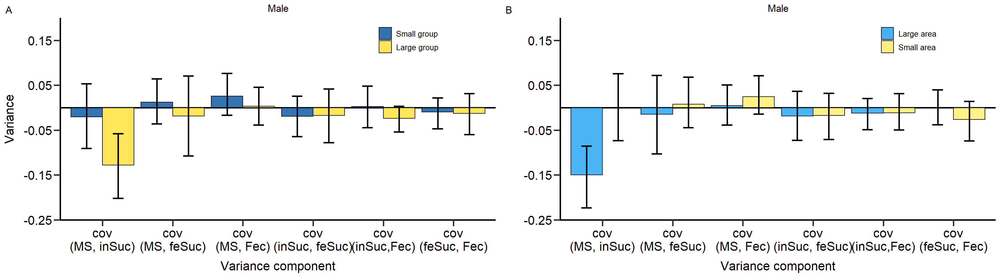
Figure 14: Covariance components for variance decomposition in males
into mating success, insemination success, fertilization success and
fecundity of the partners. Means and 95% confidence
intervals.
sessionInfo()R version 4.0.2 (2020-06-22)
Platform: x86_64-w64-mingw32/x64 (64-bit)
Running under: Windows 10 x64 (build 19042)
Matrix products: default
locale:
[1] LC_COLLATE=German_Germany.1252 LC_CTYPE=German_Germany.1252
[3] LC_MONETARY=German_Germany.1252 LC_NUMERIC=C
[5] LC_TIME=German_Germany.1252
attached base packages:
[1] grid stats graphics grDevices utils datasets methods
[8] base
other attached packages:
[1] ICC_2.4.0 tidyr_1.2.0 data.table_1.14.2 boot_1.3-25
[5] RColorBrewer_1.1-3 car_3.1-0 carData_3.0-5 gridGraphics_0.5-1
[9] cowplot_1.1.1 EnvStats_2.7.0 dplyr_1.0.9 readr_2.1.2
[13] lmerTest_3.1-3 lme4_1.1-30 Matrix_1.2-18 gridExtra_2.3
[17] ggplot2_3.3.6 ggeffects_1.1.2 workflowr_1.7.0
loaded via a namespace (and not attached):
[1] httr_1.4.3 sass_0.4.1 bit64_4.0.5
[4] vroom_1.5.7 jsonlite_1.8.0 splines_4.0.2
[7] bslib_0.3.1 assertthat_0.2.1 getPass_0.2-2
[10] highr_0.9 yaml_2.3.5 numDeriv_2016.8-1.1
[13] pillar_1.7.0 lattice_0.20-41 glue_1.6.2
[16] digest_0.6.29 promises_1.2.0.1 minqa_1.2.4
[19] colorspace_2.0-3 htmltools_0.5.2 httpuv_1.6.5
[22] pkgconfig_2.0.3 purrr_0.3.4 scales_1.2.0
[25] processx_3.7.0 whisker_0.4 later_1.3.0
[28] tzdb_0.3.0 git2r_0.30.1 tibble_3.1.7
[31] mgcv_1.8-31 farver_2.1.1 generics_0.1.3
[34] ellipsis_0.3.2 withr_2.5.0 cli_3.3.0
[37] magrittr_2.0.3 crayon_1.5.1 evaluate_0.15
[40] ps_1.7.1 fs_1.5.2 fansi_1.0.3
[43] nlme_3.1-148 MASS_7.3-51.6 tools_4.0.2
[46] hms_1.1.1 lifecycle_1.0.1 stringr_1.4.0
[49] munsell_0.5.0 callr_3.7.1 compiler_4.0.2
[52] jquerylib_0.1.4 rlang_1.0.4 nloptr_2.0.3
[55] rstudioapi_0.13 labeling_0.4.2 rmarkdown_2.14
[58] gtable_0.3.0 abind_1.4-5 DBI_1.1.3
[61] R6_2.5.1 knitr_1.39 bit_4.0.4
[64] fastmap_1.1.0 utf8_1.2.2 rprojroot_2.0.3
[67] stringi_1.7.6 parallel_4.0.2 Rcpp_1.0.9
[70] vctrs_0.4.1 tidyselect_1.1.2 xfun_0.31